Це скорочена й адаптована для онлайн-читання версія посібника. Повна версія з усіма ілюстраціями та макетом — у форматі PDF на сайті IWPR: iwpr.net.
This is an abridged version of the guide, adapted for online reading. The full version, with all illustrations and the original layout, is available as a PDF on the IWPR website: iwpr.net.
Передмова
Медіа та громадські організації звикли працювати для людей: читачів, глядачів, громади, суспільства. Але сьогодні цього вже недостатньо — у світі, де довіра поступово стає найціннішою валютою, а інформаційне середовище — перевантаженим і вразливим до маніпуляцій, ключове питання звучить інакше: як працювати разом із людьми, а не лише для них? Саме тут виникає поняття спільноти.
Спільнота — це не просто група людей, не підписники, і не «цільова аудиторія». Це мережа небайдужих, об'єднаних спільними цінностями, досвідом або викликами. Для медіа і громадських організацій спільнота — це не додатковий інструмент, а основа стійкості, впливу та довгострокових змін.
Досвід України показав, що в умовах війни, суспільних та політичних криз саме спільноти стають тим середовищем, де народжується довіра і формується здатність суспільства не лише вистояти, а й протистояти викликам. Саме спільноти часом забезпечують захист інституцій, а подекуди й захист держави загалом.
Для медіа робота зі спільнотами означає глибше розуміння своєї аудиторії, підвищення залученості та відновлення довіри до журналістики. Для громадських організацій — це шлях до реального впливу на зміни в суспільстві. Для обох, спільноти є безцінною підтримкою, в тому числі фінансовою.
Цей посібник також народився з ініціативи спільноти небайдужих. Улітку 2025 року міжнародна організація Institute for War and Peace Reporting (IWPR) зібрала у Києві представників 30 локальних медіа та громадських організацій на триденний тренінг, присвячений розбудові спільнот. Але попит виявився більшим: заявки подали 110 організацій.
Щоб задовольнити попит, IWPR продовжила програму навчання зі спільнототворення. Спершу створили закриту групу архітекторів спільнот та провели для них ще вісім практичних вебінарів, а потім ще вісім, почали готувати другий тренінг... Інформація про закриту групу ширилася, все нові та нові організації доєднувалися, і коли в секретній групі зібралося понад 60 людей, стало ясно, що одними тільки навчальними програмами закрити дефіцит знань про розбудову спільнот неможливо.
Так з'явився посібник, який ви зараз читаєте.
Він про те, як перейти від односторонньої логіки «інформування» до двосторонньої логіки «взаємодії». Тут ми розкажемо як будувати та розвивати спільноти, які не лише споживають контент чи послуги, а стають партнерами, співтворцями й джерелом змін.
Ми зібрали підходи, інструменти та практичні кейси, які допоможуть медіа і ГО:
- зрозуміти, що таке спільнота і як вона працює;
- визначити свої спільноти та їхні потреби;
- обрати ефективні формати взаємодії;
- збудувати довіру і підтримувати сталі зв'язки;
- перетворити спільноти на джерело сили, а не лише ресурс.
Бо врешті-решт, сильні інституції починаються зі сильних зв'язків між людьми.
Foreword
Media outlets and civil-society organisations are used to working for people — for readers, viewers, communities, society. But today that is no longer enough. In a world where trust is gradually becoming the most valuable currency, and the information space is overloaded and vulnerable to manipulation, the key question sounds different: how do we work together with people, not just for them? This is where the idea of community comes in.
A community is not simply a group of people, not subscribers, and not a "target audience". It is a network of people who care, united by shared values, experience or challenges. For media outlets and civil-society organisations, community is not an add-on tool but the foundation of resilience, influence and long-term change.
Ukraine's experience has shown that in conditions of war and social and political crises, it is precisely communities that become the environment where trust is born and where society's capacity not just to survive, but to resist, takes shape. At times, communities even provide protection for institutions — and, in places, for the state as a whole.
For media, working with communities means a deeper understanding of one's audience, greater engagement, and the restoration of trust in journalism. For civil-society organisations, it is a path to real influence on social change. For both, communities are an invaluable source of support — including financial support.
This guide itself was born out of an initiative of a community of people who cared. In the summer of 2025, the international organisation Institute for War and Peace Reporting (IWPR) brought together representatives of 30 local media outlets and civil-society organisations in Kyiv for a three-day training on community building. But demand turned out to be far greater: 110 organisations applied.
To meet that demand, IWPR extended its community-building training programme. It first created a closed group of "community architects" and ran eight more practical webinars for them, then another eight, and began preparing a second training... Word about the closed group spread, more and more organisations joined, and once the secret group had grown past 60 people, it became clear that training programmes alone could not close the knowledge gap around community building.
That is how the guide you are now reading came to exist.
It is about moving from the one-way logic of "informing" to the two-way logic of "engaging". Here we explain how to build and grow communities that don't just consume content or services, but become partners, co-creators, and a source of change.
We have gathered approaches, tools and practical case studies to help media outlets and NGOs:
- understand what a community is and how it works;
- identify their own communities and their needs;
- choose effective formats of engagement;
- build trust and sustain lasting connections;
- turn communities into a source of strength, not just a resource.
Because, in the end, strong institutions begin with strong bonds between people.
Сила спільнот
Коли ви починаєте творити спільноту, ви ще не знаєте, якої вона набере сили та до яких змін вона призведе. Чи знали учасники страйків на Ґданській корабельні ім. Леніна у 1980-му, що до незалежної профспілки «Солідарність» вступлять мільйони поляків, і що це прискорить падіння комуністичного режиму? Чи знав електрик корабельні Лех Валенса, що стане першим демократично обраним польським президентом?
Чи думав український художник Михайло Бойчук, що його творча школа переживе комуністичний режим? Попри те, що сам Бойчук та більшість його учнів були вбиті у 1937 році, а їхні роботи знищені, його самобутній стиль живе й досі: у книжках, фільмах, картинах, в архітектурі. І от навесні 2026 року у центрі Києва відбулася виставка «Весна. Жіночі імена бойчукізму», а її куратори на відкритті говорили таке: «Ця виставка — про мережу, про спільноту, про переплетення жіночих біографій, які сформували й зберегли бойчукізм як явище».
Ефект від творення спільнот іноді геть несподіваний.
У 2005 році спільнота радіоаматорів урятувала 15 людей, які потрапили в пастку повені на даху будинку у Новому Орлеані, США. Вони не могли додзвонитися на 911, але їм вдалося повідомити про становище одному з родичів. Той поширив заклик про допомогу через місцевий Червоний Хрест та через мережу радіоаматорів.
У 2011 році гравці онлайн-гри Foldit за три тижні розшифрували структуру білка ретровірусу мавп, над яким вчені билися 15 років.
Є також численні приклади, коли фанати подкастів у жанрі true crime допомагали розкривати злочини, на яких поліція вже поставила хрест. Фанати знаходили нові свідчення, спонукали поновлювати розслідування та викривати злочинців або ж відпускати засуджених несправедливо.
Отже, не зволікайте. Творіть спільноти, а цей посібник нехай буде вам надійним помічником. Гуртуймося!Андрій Яніцький, співавтор, голова ГО «ПроМедіа»
The Power of Communities
When you start building a community, you don't yet know how much power it will gain, or what changes it will bring about. Did the workers striking at the Lenin Shipyard in Gdańsk in 1980 know that millions of Poles would join the independent trade union Solidarity, and that this would speed up the fall of the communist regime? Did the shipyard's electrician, Lech Wałęsa, know he would become Poland's first democratically elected president?
Did the Ukrainian artist Mykhailo Boichuk imagine that his school of painting would outlive the communist regime? Even though Boichuk himself and most of his students were killed in 1937, and their works destroyed, his distinctive style is still alive today — in books, films, paintings, and architecture. In spring 2026, an exhibition titled "Spring. The Women's Names of Boichukism" opened in the centre of Kyiv, and its curators said at the opening: "This exhibition is about a network, about a community, about the interwoven biographies of women who shaped and preserved Boichukism as a phenomenon."
The effect of building communities is sometimes wildly unexpected.
In 2005, a community of amateur radio operators helped save 15 people trapped by flooding on a rooftop in New Orleans, USA. They couldn't get through to 911, but they managed to reach a relative, who spread the call for help through the local Red Cross and the ham-radio network.
In 2011, players of the online game Foldit deciphered the structure of a monkey retrovirus protein in three weeks — a puzzle scientists had been stuck on for 15 years.
There are also numerous cases where fans of true-crime podcasts have helped solve crimes the police had already written off. Fans uncovered new evidence, prompted investigations to be reopened, and helped expose real perpetrators or free the wrongly convicted.
So don't wait. Build communities, and let this guide be your reliable companion. Let's come together!Andrii Ianitskyi, co-author, head of ProMedia NGO
Теорія
Theory
Бульбашки демократії та боулінг на самоті. Чому спільноти важливі
Кожен із нас є учасником багатьох спільнот водночас. Чи ми говоримо про родину, чи про школу, про спортивну команду або книжковий клуб, про релігійну громаду або профспілку — все це спільноти, тобто об'єднання людей навколо чогось спільного.
Цим спільним може бути майно, наприклад, коли ми створюємо ОСББ — об'єднання співвласників багатоквартирного будинку, або купуємо акції публічної компанії та беремо участь у зборах акціонерів. Цим спільним може стати музика, яка нам подобається, і тоді ми долучаємося до фан-клубу, купуємо мерч улюбленого виконавця, ходимо на концерти. Чи спорт — і ось ми вже на стадіоні у шалику кольорів улюбленого футбольного клубу.
Просто зараз зробіть просту вправу. Подумайте, до яких спільнот ви належите. Які з них формальні, із чіткими правилами та процедурами, а які існують лише у вигляді чату на вашому телефоні або в поштовій розсилці? Ви здивуєтеся, як багато у вашому житті таких спільнот (клубів, об'єднань, товариств, асоціацій, груп).
Вочевидь, гуртування людей навколо спільної мети чи ідеї — це природний феномен, адже люди є соціальними істотами. Але як ці механізми гуртування працюють? З чого спільноти починаються? І яке значення спільноти мають у демократичному суспільстві: конструктивне чи руйнівне?
У цьому розділі ми розберемо деякі з теоретичних концепцій, які допоможуть нам створювати або розвивати свої спільноти на практиці.
Концепції спільнот
Соціолог Фердинанд Тьонніс (Ferdinand Tönnies) у своїй класичній роботі «Спільноти та суспільство» (Gemeinschaft und Gesellschaft) 1887 року писав про спільноти як про форму соціальної організації, що заснована на природних, емоційних або традиційних зв'язках — на противагу суспільству, яке будується на раціональному інтересі і контракті. І хоча ця дихотомія дещо штучна, бо зазвичай традиції, емоції та правила поєднуються, цей поділ важливий для вивчення впливу держави на родини, громади та інші соціальні групи.
Роботи Тьонніса вплинули на іншого соціолога Макса Вебера (Max Weber). У книзі «Економіка та суспільство» (Wirtschaft und Gesellschaft) 1922 року він писав про спільноти як про соціальні стосунки, що ґрунтуються на суб'єктивному відчутті спільної належності.
У цьому ж напрямку міркував політолог Бенедикт Андерсон (Benedict Anderson). У книзі «Уявлені спільноти» (Imagined Communities) 1983 року він писав про націю як про уявлену спільноту, де люди не знають всіх членів спільноти особисто, але мають спільні уявлення про це об'єднання. Його робота дала поштовх дослідженням онлайн-спільнот, медійних спільнот та фанатських рухів.
Проте були й інші дослідження, сфокусовані на прикладних проявах спільнот. Теоретик та практик освіти Етьєн Венгер (Etienne Wenger) та соціальна антропологиня Джин Лейв (Jean Lave) описали механізми навчання як формування спільнот практики у книзі Situated Learning у 1991 році. Ідеї цих авторів корисні для вивчення спільнот, що утворюються у навчальних закладах, у війську, у туристичних таборах, бігових клубах та кулінарних гуртках — всюди, де люди покращують свою майстерність, коли збираються разом.
Але є дві роботи, які видаються нам особливо цікавими для розуміння ролі спільнот у демократичних суспільствах, до яких ми відносимо й сучасну Україну. Ці роботи пояснюють, чому розвиток та популяризація спільнот критично важливі.
Бульбашки демократії
Один з найбільш впливових на європейському континенті сучасних філософів Юрген Габермас (Jürgen Habermas) народився у 1929 році в Німеччині, пережив Другу світову війну та зрештою сформувався як прихильник демократії та прав людини. Саме Габермас є автором концепції комунікативної дії (двотомник Theorie des kommunikativen Handelns), яка передбачає раціональний діалог та публічне обговорення для досягнення соціальних змін.
Він підкреслював, що звичайні люди («життєсвіт») можуть брати участь у колективному розв'язанні суспільних проблем і прийнятті рішень на противагу системним впливам з боку позбавлених емпатії механізмів, таких як бюрократична машина або ринкові механізми.
Габермас уважно відстежував зміни у публічній сфері, пов'язані з розвитком технологій. Ще у 60-х роках минулого сторіччя він передбачав, що новітні технології можуть спотворювати комунікативні процеси та справжнє демократичне обговорення. І зараз, у часи формування інформаційних бульбашок у Facebook та Instagram, анонімних каналів у X та Telegram, політичних заяв через YouTube, у часи «альтернативних фактів», ідеї Габермаса видаються пророчими.
Габермас попереджав нас про ризик фрагментації публічної сфери, що може призвести до згортання демократії. Протистояти такій фрагментації можна завдяки комунікаціям: пошуку консенсусу у відкритому діалозі, обговоренню суспільно-політичних проблем публічно, на круглих столах та форумах, у парламентах, із залученням широкого кола громадян. Такі дебати мають бути відкритими та доступними.
Саме спільноти є носіями комунікативної дії та елементами «життєсвіту» за Габермасом, вони гуртують людей зі спільними поглядами та роблять їхній голос гучнішим.
Спільноти є «бульбашками демократії», які допомагають нам знайти спільну мову та об'єднують нас, на противагу інформаційним бульбашкам, які викривляють наше сприйняття реальності.
Наші родини, асоціації, політичні рухи допомагають нам порозумітися без бюрократичного примусу та забезпечують соціальний спокій. Вони ж є елементами інформаційної стійкості перед загрозою «колонізації системою». Тобто — ринковими або бюрократичними механізмами зі своєю жорстокою логікою, яка часто не враховує такі нюанси, як інтереси маргіналізованих груп, допомогу нужденним або захист слабших.
Значення громадських організацій, як формалізованих спільнот, не можна применшувати. Саме недержавні об'єднання або клуби контролюють владу через відкрите з нею спілкування та представляють інтереси різних груп громадян, стають інструментами колективних дій. Власне, саме через участь у подібних спільнотах люди формують свою громадянську ідентичність.
Але й неформальні малі групи, такі як локальні ініціативи або ситуативні групи, важливі для демократії. Вони є проявом деліберативної (дорадчої) демократії, де влада ухвалює рішення публічно та після відкритого діалогу із суспільством, а не у закритих кабінетах на власний розсуд. Такі рішення мають більшу легітимність, оскільки були прийняті з урахуванням позиції всіх зацікавлених сторін.
Ідеї Габермаса особливо важливі для України воєнного періоду, де російська агресія унеможливила проведення виборів. Чи значить це, що наша країна перестала бути демократичною? Ні, бо громадяни за допомогою медіа, під час публічних дебатів в університетах або під час публічних акцій протестів (згадайте успіх «людей з картонками», які влітку 2025 року вийшли на протести на захист антикорупційної інфраструктури) впливають на прийняття рішень політиками та чиновниками.
Демократія це постійний процес, а не лише похід на виборчі дільниці раз на чотири-п'ять років.
І, навпаки, чи можна назвати демократичними країни, де вибори мають імітаційний характер, суспільні проблеми замовчуються, а влада боїться людей, об'єднаних у спільноти?
Боулінг на самоті
«Сьогодні у боулінг грає більше американців, ніж будь-коли раніше, але заняття боулінгом в організованих лігах стрімко зменшилося за останнє десятиріччя. З 1980 по 1993 рік кількість боулерів у Америці збільшилась на 10%, а кількість членів ліг боулінгу зменшилась на 40%», — написав політолог Роберт Девід Патнем (Robert David Putnam) у статті 1995 року Bowling Alone: America's Declining Social Capital. Згодом він напише цілу книгу під назвою «Боулінг на самоті».
Попри популярність боулінгу така зміна поведінки гравців почала приносити менше грошей власникам клубів та загрожувала їхньому бізнесу. Коли люди приходять грати компаніями, то вони зазвичай замовляють не тільки гру, але і їжу та напої. Тоді як самотні гравці концентрувалися виключно на грі. А розважальні центри заробляють у першу чергу на продажах піци та пива, а не на видачі в оренду шарів для боулінгу та спортивного взуття.
Що ще гірше, самотні гравці не обговорюють новини та політиків під час гри, а це, як ми вже знаємо з ідей Юргена Габермаса, шкодить демократії. Роберт Патнем побачив тривожні тенденції у даних про гру в боулінг та вивчив інші сфери, де люди збираються разом. Виявилося, що Америка помітно змінилася у другій половині XX сторіччя.
Кількість членів екологічних та суспільно-політичних організацій помітно зросла, але Патнем пише, що йдеться переважно про уявлені спільноти (згадаймо Бенедикта Андерсона), де члени раз на рік платять свій внесок та отримують інформаційний бюлетень про роботу організації, а особистої участі в її діяльності не беруть. Побільшало і так званих «груп підтримки» (книжкових клубів, релігійних зібрань, анонімних зустрічей людей із залежностями), але, пише Патнем, ці групи слабко впливають на суспільно-політичне життя.
Загалом членство американців в асоціаціях за 25 років скоротилося майже на чверть. Випускники коледжів у 1967 році в середньому були членами 2,8 спільноти, станом на 1993 рік — лише двох. Серед випускників шкіл цей показник впав з 1,8 до 1,2. А серед тих, хто не мав повної середньої освіти — з 1,4 до 1,1.
Роберт Патнем відзначає, що водночас рівень довіри в американському суспільстві зменшився. Тоді як люди, які все ще брали активну участь у всіляких асоціаціях, мали вищий рівень довіри до своїх співгромадян.
В іншій своїй роботі 1993 року Making Democracy Work Роберт Патнем пише про соціальний капітал як основу для розвитку інститутів демократії. Як приклад він наводить асоціації взаємного кредиту в Італії. Ключовим для розвитку соціального капіталу також називає довіру. Що вищий її рівень, то краще працюють демократичні інститути. І, навпаки, недовіра призводить до занепаду демократії. Ось чому Патнем приділяє стільки уваги занепаду соціальної взаємодії в Штатах.
Причин таких суспільних перетворень багато. Ось лише деякі з них:
- розвиток медіа та нових форм дозвілля у США, де люди все більше проводять час перед екранами телевізорів;
- більша мобільність населення, що провокує переїзди та руйнацію сталих соціальних зв'язків;
- кепська демографія, тобто все менша кількість шлюбів та все менша кількість дітей, все більша кількість розлучень.
Український контекст
Для сучасної України всі ці фактори більш ніж актуальні. Сьогодні українці переважно споживають контент через екрани смартфонів. За даними дослідження «Українські медіа: споживання новин і довіра у 2025 році» від Internews Network, 86% українців отримують новини з соцмереж, 91% читають новини зі смартфонів.
Використання пристроїв для отримання новин. Адаптовано за даними Internews Ukraine, 2025.
При цьому рівень довіри до окремих соціальних інституцій у грудні 2025 року був відносно низький. Менше половини опитаних українців довіряли Уряду та Верховній Раді, судам, прокурорам та поліції, медіа та церкві. Більше ніж половина довіряла Збройним силам України, волонтерам та Президенту. 50% довіряли Національному антикорупційному бюро.
| Довіра до влади | 2024, довіряють | 2025, довіряють |
|---|---|---|
| Президент України | 45% | 57% |
| Верховна Рада | 13% | 12% |
| Уряд | 20% | 23% |
Довіра до органів державної влади. Адаптовано за даними Київського міжнародного інституту соціології (КМІС), 2025.
Деградації соціального капіталу в Україні сприяють і міграційні процеси. Війна змусила мільйони українців змінити місце проживання: за різними оцінками від 6 до 8 мільйонів громадян виїхали за кордон, 4,6 мільйона стали внутрішніми переселенцями, понад 1 мільйон служать у Силах безпеки та оборони.
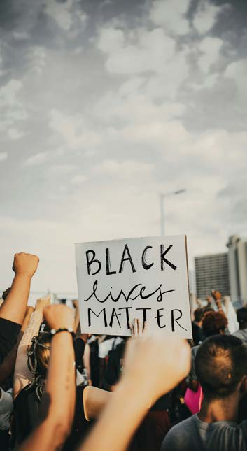
Україна також переживає гостру демографічну кризу: чверть з приблизно 30 мільйонів наявного населення старша за 60 років, смертність переважає народжуваність, а міграція під час війни не компенсує скорочення населення. Що до емансипації українських жінок, то вони не просто залучені до ринку праці, а часто опановують професії, де раніше більше були представлені чоловіки — Уряд навіть запустив спеціальну програму для перекваліфікації жінок. Водночас безоплатна доглядова праця також переважно лежить на жінках.
Повернення до командної гри
Самі собою фактори, про які писав Патнем, не були ані добрими, ані поганими, а лише відображали об'єктивні зміни в американському суспільстві тих років. Але автор ставив питання про зменшення шкоди для розвитку соціального капіталу.
Чи можна якось сприяти залученості людей до життя країни? Окрім очевидної відповіді, що ця проблема потребує глибшого вивчення, Патнем пропонує «плекати енергійне громадянське життя». А у контексті цієї книги йдеться про сприяння розвитку спільнот, цих «бульбашок демократії».
У своїй книзі 2000 року Роберт Патнем дає практичні рекомендації для розвитку соціального капіталу через «соціальний інженеринг». Він радить сприяти колабораціям між спільнотами, організовувати фестивалі та спільні проєкти, мережувати організації між собою. Він також закликає державу та бізнес підтримувати клуби за інтересами, локальний спорт, культурні події, будувати публічні простори. Одним з таких стимулів могли б бути податкові пільги для благодійників.
В Україні ми бачимо багато таких прикладів. Бізнес, який відкриває публічні простори, такі як соціальні кафе Urban100 у Івано-Франківську, Misto.cafe у Луцьку, книгарні «Сенс» у Києві та Івано-Франківську. Громадські організації, такі як «Сміливі відновлювати» або «Район #1», що відновлюють будівлі та інфраструктуру у зруйнованих війною населених пунктах. Університети — Київська школа економіки, Український католицький університет, Києво-Могилянська академія та інші — де присутня академічна свобода і де водночас цінується академічна доброчесність. Тисячі неприбуткових громадських організацій та неформальних ініціатив, які тримають на своїх плечах українську демократію. Все це разом — скористаємося метафорою Роберта Патнема — повертає самотніх гравців у боулінг до командної гри.
Democracy's Bubbles and Bowling Alone. Why Communities Matter
Every one of us belongs to many communities at once. Whether we're talking about family, school, a sports team or a book club, a congregation or a trade union — all of these are communities: groups of people united around something they share.
That shared thing can be property — say, when we set up a condominium association, or buy shares in a public company and take part in shareholder meetings. It can be music we love, which leads us to join a fan club, buy a favourite artist's merch, go to concerts. Or sport — and suddenly we're at the stadium wearing our favourite football club's colours.
Try a simple exercise right now. Think about which communities you belong to. Which of them are formal, with clear rules and procedures, and which exist only as a chat on your phone or a mailing list? You'll be surprised how many such communities (clubs, associations, societies, groups) are already part of your life.
Clearly, people rallying around a shared goal or idea is a natural phenomenon — humans are social creatures. But how do these mechanisms of coming together actually work? Where do communities start? And what role do communities play in a democratic society: constructive or destructive?
In this chapter we'll unpack some of the theoretical concepts that will help us build or grow our own communities in practice.
Concepts of community
Sociologist Ferdinand Tönnies, in his classic 1887 work "Community and Society" (Gemeinschaft und Gesellschaft), described communities as a form of social organisation built on natural, emotional or traditional ties — as opposed to society, which is built on rational interest and contract. Though this dichotomy is somewhat artificial, since tradition, emotion and rules usually intertwine, the distinction matters for studying how the state affects families, communities and other social groups.
Tönnies's work influenced another sociologist, Max Weber. In his 1922 book "Economy and Society" (Wirtschaft und Gesellschaft), Weber wrote about communities as social relationships grounded in a subjective sense of belonging together.
Political scientist Benedict Anderson thought along similar lines. In his 1983 book "Imagined Communities", he described a nation as an imagined community, whose members will never personally know most of their fellow members, yet share a mental image of their communion. His work spurred research into online communities, media communities and fandoms.
Other research focused on the applied side of communities. Education theorist and practitioner Etienne Wenger and social anthropologist Jean Lave described learning itself as the formation of communities of practice, in their 1991 book Situated Learning. Their ideas are useful for studying communities that form in schools, in the military, at summer camps, running clubs and cooking circles — anywhere people improve their craft by coming together.
But there are two works that we find especially useful for understanding the role of communities in democratic societies, among which we count today's Ukraine. These works explain why growing and popularising communities is critically important.
Bubbles of democracy
One of the most influential philosophers on the European continent today, Jürgen Habermas, was born in Germany in 1929, lived through the Second World War, and ultimately emerged as a champion of democracy and human rights. Habermas is the author of the theory of communicative action (see his two-volume Theorie des kommunikativen Handelns), which calls for rational dialogue and public deliberation as the path to social change.
He argued that ordinary people (the "lifeworld") can take part in collectively solving social problems and making decisions, as a counterweight to the systemic pressures of mechanisms devoid of empathy, such as bureaucracy or market forces.
Habermas closely tracked how technology was reshaping the public sphere. Back in the 1960s, he predicted that new technologies could distort communicative processes and genuine democratic deliberation. And now, in an age of information bubbles on Facebook and Instagram, anonymous channels on X and Telegram, political statements delivered via YouTube, and "alternative facts" — Habermas's ideas look prophetic.
Habermas warned us of the risk that the public sphere could fragment, potentially leading to democratic backsliding. That fragmentation can be countered through communication: seeking consensus through open dialogue, discussing socio-political problems publicly — at round tables and forums, in parliaments, with broad citizen involvement. Such debates must be open and accessible.
It is precisely communities that carry Habermas's communicative action and make up the "lifeworld": they bring together people who share a viewpoint and amplify their voice.
Communities are "bubbles of democracy" that help us find common ground and bring us together — the opposite of information bubbles, which distort our perception of reality.
Our families, associations and political movements help us reach understanding without bureaucratic coercion, and they keep the social peace. They are also elements of informational resilience against the threat of "colonisation by the system" — that is, by market or bureaucratic mechanisms with their own harsh logic, one that often ignores nuances like the interests of marginalised groups, help for the needy, or protection for the weak.
The importance of civil-society organisations, as formalised communities, cannot be overstated. It is precisely non-governmental associations and clubs that hold power accountable through open engagement with it, represent the interests of different groups of citizens, and become instruments of collective action. It is, in fact, through participation in such communities that people form their civic identity.
But informal small groups too — local initiatives, or ad-hoc groups formed around a situation — matter for democracy. They embody deliberative democracy, where power makes decisions publicly, after open dialogue with society, rather than behind closed doors at its own discretion. Such decisions carry greater legitimacy, since they were made accounting for the position of all stakeholders.
Habermas's ideas are especially relevant for wartime Ukraine, where Russian aggression has made elections impossible. Does that mean our country has stopped being a democracy? No — because citizens, through the media, through public debates at universities, or through public protest (recall the success of the "people with cardboard signs" who took to the streets in the summer of 2025 to defend anti-corruption infrastructure), still influence the decisions made by politicians and officials.
Democracy is a continuous process — not just a trip to a polling station once every four or five years.
And conversely: can we call countries democratic where elections are staged, social problems are silenced, and those in power fear people organised into communities?
Bowling Alone
"More Americans are bowling than ever before, but bowling in organized leagues has plummeted in the last decade. Between 1980 and 1993, the total number of bowlers in America increased by 10 percent, while league bowling decreased by 40 percent," wrote political scientist Robert David Putnam in his landmark 1995 essay "Bowling Alone: America's Declining Social Capital." He would later expand it into a full book, "Bowling Alone."
Despite bowling's popularity, this shift in players' behaviour started bringing in less money for club owners and threatened their business. When people come to play in groups, they typically order more than just the game — food and drinks too. Solo players, by contrast, focused solely on the game itself. And bowling centres make most of their money on pizza and beer, not on renting out balls and shoes.
Worse still, solo players don't discuss the news or politicians while they play — and as we already know from Jürgen Habermas's ideas, that's bad for democracy. Robert Putnam spotted this troubling trend in bowling data and went on to study other spheres where people gather together. It turned out America had changed markedly in the second half of the 20th century.
Membership in environmental and socio-political organisations had risen noticeably, but Putnam notes this was mostly membership in imagined communities (recall Benedict Anderson) — members who pay their dues once a year and receive a newsletter about the organisation's work, without taking any personal part in its activities. So-called "support groups" also multiplied (book clubs, religious gatherings, addiction-recovery meetings), but, Putnam writes, these groups have little influence on socio-political life.
Overall, American association membership fell by almost a quarter over 25 years. College graduates in 1967 belonged to an average of 2.8 communities; by 1993, only two. Among high-school graduates, the figure fell from 1.8 to 1.2. And among those without a completed secondary education, from 1.4 to 1.1.
Robert Putnam notes that, over the same period, trust within American society declined. Meanwhile, people who remained actively involved in various associations had higher levels of trust in their fellow citizens.
In another 1993 work, Making Democracy Work, Putnam writes about social capital as the foundation for developing democratic institutions, citing Italy's mutual-credit associations as an example. He identifies trust as the key ingredient for building social capital: the higher its level, the better democratic institutions function — and, conversely, distrust drives democratic decline. That's why Putnam pays so much attention to the erosion of social interaction in the United States.
There are many reasons behind such social shifts. Here are just a few:
- the rise of media and new forms of leisure in the US, with people spending ever more time in front of television screens;
- greater population mobility, which drives relocations and the breakdown of established social ties;
- poor demographics — fewer marriages, fewer children, and more divorces.
The Ukrainian context
For today's Ukraine, all these factors are more than relevant. Ukrainians today mostly consume content through smartphone screens. According to the study "Ukrainian Media: News Consumption and Trust in 2025" by Internews Network, 86% of Ukrainians get their news from social media, and 91% read news on their phones.
Devices used to get the news. Adapted from Internews Ukraine data, 2025.
At the same time, trust in individual social institutions remained relatively low as of December 2025. Fewer than half of Ukrainians surveyed trusted the Government and the Verkhovna Rada, the courts, prosecutors and the police, the media and the church. More than half trusted the Armed Forces of Ukraine, volunteers, and the President. 50% trusted the National Anti-Corruption Bureau.
| Trust in power | 2024, trust | 2025, trust |
|---|---|---|
| President of Ukraine | 45% | 57% |
| Verkhovna Rada | 13% | 12% |
| Government | 20% | 23% |
Trust in state authorities. Adapted from data by the Kyiv International Institute of Sociology (KIIS), 2025.
Migration is also eroding Ukraine's social capital. The war has forced millions of Ukrainians to change where they live: by various estimates, 6 to 8 million citizens have left the country, 4.6 million have become internally displaced, and more than 1 million serve in the security and defence forces.
Ukraine is also living through an acute demographic crisis: a quarter of its roughly 30 million remaining population is over 60, deaths outnumber births, and wartime migration does not offset the population decline. As for the emancipation of Ukrainian women — they are not merely more present in the labour market, but are increasingly moving into professions once dominated by men, a shift the government has backed with a dedicated retraining programme. At the same time, unpaid care work still falls mostly on women.
Back to team play
The factors Putnam described were not, in themselves, good or bad — they simply reflected objective changes in American society at the time. But Putnam was asking how to limit the damage to social capital.
Can we do anything to boost people's engagement in the life of their country? Beyond the obvious answer that the problem needs deeper study, Putnam proposes "nurturing a vibrant civic life." In the context of this guide, that means fostering the growth of communities — these "bubbles of democracy."
In his 2000 book, Robert Putnam offers practical recommendations for building social capital through "social engineering." He advises fostering collaboration between communities, organising festivals and joint projects, and networking organisations with one another. He also calls on the state and business to support hobby clubs, local sport, and cultural events, and to build public spaces — one such incentive could be tax breaks for donors.
In Ukraine, we already see plenty of such examples. Businesses opening public spaces, like the Urban100 social cafés in Ivano-Frankivsk, Misto.cafe in Lutsk, or the "Sens" bookstores in Kyiv and Ivano-Frankivsk. Civil-society organisations, like "Brave to Rebuild" or "Raion #1," restoring buildings and infrastructure in communities devastated by the war. Universities — the Kyiv School of Economics, the Ukrainian Catholic University, the Kyiv-Mohyla Academy and others — where academic freedom is present alongside a real commitment to academic integrity. Thousands of non-profit organisations and informal initiatives carrying Ukrainian democracy on their shoulders. To borrow Robert Putnam's own metaphor — all of this, together, turns lone bowlers back into a team.
Спільна дія, емоції та гумор. Які спільноти бувають
1 грудня 2013 року обурені українці масово вийшли на вулиці своїх міст — напередодні силовики, вірні режиму тодішнього президента Віктора Януковича, розігнали мирний протест. Спецзагін «Беркут» накинувся із кийками та сльозогінним газом на студентів, які стояли на мирній акції протесту на Майдані Незалежності в Києві. Криваві відео та фото побиття розлетілися світом, дісталося й журналістам, які це все фіксували.
Можливо, влада думала, що ці брутальні дії залякають людей, але вийшло зовсім навпаки.
Коли перший шок від побаченого минув, сотні тисяч вийшли на вулиці по всій країні. Лише у Києві, за різними оцінками, зібралося від 300 до 500 тисяч людей. Назвати точну кількість складно, але людська хвиля починалася за три станції метро до центральної площі, і люди все йшли й ішли. Так зародилася спільнота Майдану.
У той день сталися перші сутички під будівлею Адміністрації Президента, обурені люди зайняли столичну мерію та Будинок профспілок у самому серці міста. На центральній площі виник наметовий табір. Минуло кілька місяців, і емоційний протест перетворився у революцію та призвів до втечі президента Януковича з країни. На жаль, понад сотня мирних протестувальників були убиті.
Історії, коли мільйони людей, реагуючи на несправедливість, раптом об'єднуються заради однієї мети, не є виключно українським феноменом.
У 2010-х роках протести охопили Туніс, Єгипет, Лівію, Сирію, Ємен та інші країни — це явище назвали Арабською весною. Люди виступали проти несправедливості, диктаторів та економічної нерівності. Поштовхом для протестів у Тунісі стало самоспалення вуличного торговця Мухаммеда Буазізі у грудні 2010 року на знак протесту проти свавілля поліції, яка конфіскувала його товар. Така несправедливість обурила людей, і протести почали ширитися в арабських країнах як лісова пожежа. Люди координувалися через відносно нову на той час соціальну мережу Twitter (тепер X).
У 2011 році протести проти економічної нерівності та жадібності корпорацій охопили США. Все почалося з акції поблизу Волл-стріт у Нью-Йорку, головної бізнес-вулиці країни. Цей протестний рух назвали Occupy Wall Street (OWS, «Захопи Волл-стріт»), а його гаслом була фраза «We Are the 99%», що демонструвало прірву між 1% найбагатших американців та рештою громадян.
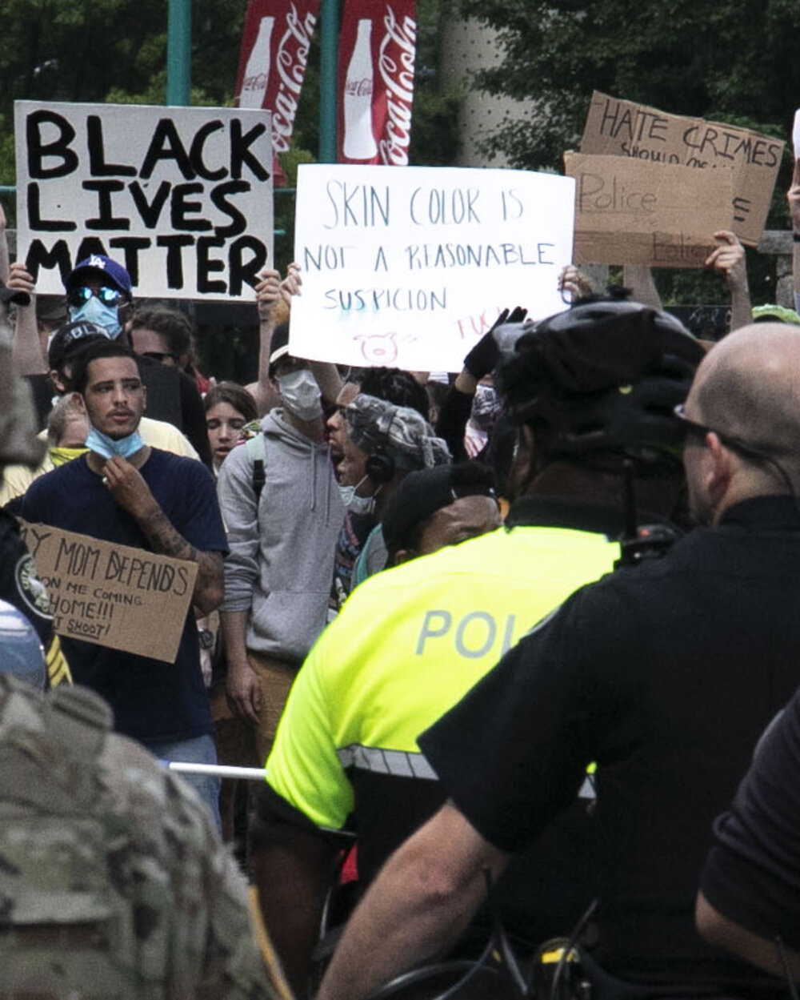
У 2013 році у США виник та згодом поширився на весь світ рух проти расизму та поліцейського свавілля Black Lives Matter (BLM, «Життя чорних важливі»). Рух розпочався після виправдання вбивці темношкірого підлітка Трейвона Мартіна, але набув особливої гостроти у 2020 році після вбивства поліціянтами афроамериканця Джорджа Флойда.
У 2017 році також у США виник міжнародний рух проти сексуального насильства #MeToo (в українському цифровому просторі — #яНеБоюсьСказати). Хоча на той час такий хештег вже існував з десяток років, він раптом набув популярності. Поштовхом став скандал навколо продюсера Гарві Вайнштейна, якого десятки жінок звинувачували у домаганнях та насильстві. Хвиля подібних викриттів прокотилася світом.
Афективні спільноти
Як бачимо, люди схильні об'єднуватися, коли їх щось обурює, коли щось викликає сильні емоції. Науковиця Зізі Папахаріссі (Zizi Papacharissi) називає такі протести афективною публікою — мережевою спільнотою, яка формується та мобілізується навколо емоцій, що циркулюють у цифрових медіа.
Якщо Юрґен Габермас з попередньої глави розглядав публіку як раціонального актора, який мав опонувати неемпатичній системі, міг висловлювати аргументи та вести дискусію, то Зізі Папахаріссі звертає нашу увагу на те, що публіка буває афективною та діє на емоціях.
Водночас за Папахаріссі емоційна не значить ірраціональна. Емоційна реакція може бути ще одним способом мислення, а не відсутністю думок. Уявлення про раціональність як про щось позбавлене емоцій хибне: люди не просто реагують емоційно — вони таким чином осмислюють події через свої почуття, мову та символи. Папахаріссі не ідеалізує афективні публіки та погоджується, що вибуховий емоційний протест може закінчитися нічим.
Якщо спиратися на ідеї Папахаріссі про емоційне пізнання, то стає зрозумілим, чому журналісти не можуть (точніше, не мали б) писати статті про війну або про стихійні лиха зі своїх редакційних диванів. Чи може журналіст передати правдиво інформацію про ракетні обстріли або блекаути, якщо ніколи не був поблизу лінії фронту та не сидів кілька годин без світла? Виходить, що емоції важливі, а емоційні (афективні) спільноти не є нераціональними. Люди, що єднаються у такий спосіб, осмислюють життя.
Науковиця так описує механізм виникнення афективної спільноти:
- Спочатку у цифрових медіа з'являються наративи, які несуть емоційний заряд.
- Згодом виникає вузол координації, наприклад, слоган, фраза або спільний хештег. У таких ситуаціях хештег не просто позначка, а інфраструктура для координації та об'єднання.
Афективним спільнотам притаманна мережевість, відсутність одного центру прийняття рішень та жорсткої субординації. Тому вона гнучка. Знищити силою таку спільноту складно.
Емоції перетворюються на політичний ресурс, але можуть як підсилювати демократичні процеси, так і руйнувати їх. Сама по собі афективна спільнота не є чимось сталим, але може дати поштовх для створення чогось нового.
Так українська Революція Гідності призвела до створення нових ініціатив та рухів, які фактично народилися під час протестів. Яскраві приклади — hromadske та Espreso — утворені самими журналістами медіа, які транслювали картинку з акцій протесту нон-стоп та стали голосами революції.
Подібним чином — на хвилі емоцій — здобуло популярність англомовне видання The Kyiv Independent. Спершу була хвиля солідарності та підтримки команди журналістів, які у 2021 році виступили проти цензури, звільнилися з видання Kyiv Post та створили нове медіа. А після російського вторгнення у лютому 2022 року — сплеск інтересу до українських новин англійською мовою та бажання іноземців підтримати Україну, зокрема й українське медіа. У лютому 2026 року, коли ми пишемо цю книгу, спільнота донаторів The Kyiv Independent, за словами їхнього операційного директора Захара Процюка, перетнула позначку 27 000.
Спільноти практики
Обурення, захват чи співчуття можуть стати поштовхом до першої дії, але що змушує людину залишатися частиною спільноти далі, коли минає час та емоції стають вже не такими яскравими? Є різні фактори: раціонально-прагматичні та ціннісно-емоційні. Але насамперед це практика.
Пам'ятаєте, у попередньому розділі ми вже згадували про спільноти практики — такі соціальні об'єднання, які формуються під час спільних дій. Дослідники освіти Етьєн Венгер (Etienne Wenger) та Джин Лейв (Jean Lave) вивчали механізми навчання.
За їхнім визначенням до спільнот практики можна віднести групу людей, яка має спільну сферу діяльності, взаємодіє регулярно та поділяє спільні практики. Тому має свою специфічну мову, внутрішні жарти, власні символи, неформальні правила та інше.
Дослідники пишуть, що новачки стають частиною спільноти практики не просто через абстрактне навчання, а через реальну участь у спільній справі. Поступово у навчальному процесі вони рухаються від новачка до повноправного членства у спільноті, що добре пояснює соціальні процеси в школах та університетах. Важливий не тільки сам контент уроку, але й твоя роль у спільноті.
Спочатку новачки знаходяться на периферії та отримують дрібні завдання. Вони спостерігають за неформальними правилами, переймають традиції. Поступово рухаються до ядра спільноти. Таким чином навчання це не просто опанування нових знань, а ще й залучення до спільноти, опанування практики.
Спільноти практики за Венгером тримаються на трьох китах:
- взаємній залученості учнів та викладачів під час навчання;
- балансі усталених правил та співтворення нових артефактів;
- однаковому інтелектуальному інструментарії — від шаблонів документів до спільних жартів.
Хоча Венгер пише лише про спільноти практики у навчальному процесі для передачі та створення знання, ми дивимося на це поняття ширше. Спільноти практики — це не тільки про школи.
Багато підрозділів у Силах безпеки та оборони України є спільнотами практики: зі своїми впізнаваними символами та традиціями. Найбільш помітними серед них є Третій армійський корпус, корпуси «Хартія» та «Азов». Ці об'єднання також мають свої символи та традиції, свої процедури залучення (через рекрутингові центри та навчання), власні процедури прощання та збереження пам'яті про полеглих героїв.
Фанатські спільноти
Насамкінець не можна не згадати про теоретичний доробок Генрі Дженкінса (Henry Jenkins), який писав про творчість учасників спільнот.
За Дженкінсом, спільнота — це не просто пасивна публіка, вона креативна та спроможна сама створювати нові сенси та впливати на інших. Йдеться про партисипативну культуру, тобто про культуру участі. А також про колективну експертизу, коли члени спільноти разом намагаються викрити якусь загадку або передбачити результати футбольного матчу.
У роботі 1992 року Textual Poachers: Television Fans and Participatory Culture науковець досліджує телевізійних фанатів. Серед іншого він описує фанатів науково-фантастичного серіалу Star Trek, які створюють фанфіки (аматорські твори за мотивами серіалу), фензини (фанатські самвидав-журнали), організовують тематичні збори та вибудовують власні інтерпретації персонажів.
У пізніших роботах Дженкінс досліджує фанатів телешоу American Idol (шоу, схоже на «Україна має талант») та Survivor («Останній герой»). Він бачить протистояння між продюсерами шоу та фан-спільнотою, описує синхронне голосування фанатів за своїх співаків — скоординовану спільну дію незнайомих між собою людей.
Окремо Дженкінс пише про вірусний контент, який створюють учасники фанатських спільнот. Меми, пародійні відео на YouTube та інший подібний контент живе власним життям: спільнота сама продукує його, сама визначає, що варто поширення, а що ні. До речі, спільнота читачів The Kyiv Independent також створює та поширює меми у гілці на закритому каналі Discord.
Одне з цікавих спостережень Дженкінса у тому, що участь людей у фанатських спільнотах може трансформуватися згодом у громадський активізм. Наприклад, Harry Potter Alliance — міжнародна організація, яка використовує підліткову фантастичну історію для підтримки прав людини, грамотності, рівності та кліматичних ініціатив.
Силу фан-спільнот легко відчути на спортивних стадіонах або під час концертів популярних виконавців. Фанати Сергія Жадана не тільки читають його книги та співають на його концертах, але й активно підтримують українське військо на його прохання.
Якщо вам здається, що фанатські спільноти — це щось маргінальне, вам варто переглянути свої оцінки. Журналістка Kyiv Post Олена Граждан звернула увагу, що у 2025 році фестиваль попкультури Fancon, учасники якого перевдягаються в улюблених персонажів ігор та фільмів, зібрав у Києві понад 36 000 учасників. Для порівняння, найбільша в країні літературна подія «Книжковий Арсенал» у тому ж році зібрала лише 30 000 відвідувачів та відвідувачок.
За даними Kyiv Post (Олена Граждан).
У сухому залишку
Отже, спільноти мають свою архітектуру, механіку та свій життєвий цикл — і це можна легко описати на прикладі будь-якої спільноти практики. Водночас спільноти можуть виникати ніби нізвідки — під дією емоцій, лише навколо одного хештега в соцмережі. Спільноти також можуть створювати нові сенси.
Ох, все так складно. Яким чином тоді їх описувати? У третьому розділі цієї книги ми пропонуємо один з популярних фреймворків для дизайну спільнот Community Canvas.
Ви також можете скористатися 7-компонентною рамкою для аналізу спільнот, яку представив у 2025 році на конференції From Societal Resilience to Obscurantism в Швеції Андрій Яніцький. Спробуйте пропустити вашу спільноту через сім питань, представлених на наступній сторінці.
Collective Action, Emotion and Humour. The Kinds of Communities
On 1 December 2013, outraged Ukrainians poured into the streets of their cities en masse — the day before, security forces loyal to then-president Viktor Yanukovych had dispersed a peaceful protest. The "Berkut" riot police charged at students holding a peaceful rally on Independence Square in Kyiv with batons and tear gas. The bloody video and photos of the beatings spread around the world, and the journalists who filmed it all were beaten too.
The authorities may have thought this brutality would frighten people. It had the opposite effect.
Once the initial shock wore off, hundreds of thousands took to the streets across the country. In Kyiv alone, by various estimates, between 300,000 and 500,000 people gathered. An exact count is hard to give, but the human tide started three metro stations away from the central square, and people kept coming. That is how the Maidan community was born.
That day saw the first clashes near the Presidential Administration building; outraged people occupied Kyiv's city hall and the Trade Unions House in the very heart of the city. A tent camp appeared on the central square. Within a few months, the emotional protest had grown into a revolution and driven President Yanukovych out of the country. Tragically, more than a hundred peaceful protesters were killed.
Stories of millions of people, reacting to injustice, suddenly uniting around a single goal are not a uniquely Ukrainian phenomenon.
In the 2010s, protests swept through Tunisia, Egypt, Libya, Syria, Yemen and other countries — a wave that became known as the Arab Spring. People rose up against injustice, dictators and economic inequality. The trigger for the protests in Tunisia was the self-immolation of street vendor Mohamed Bouazizi in December 2010, in protest against police who had confiscated his goods. The injustice outraged people, and the protests spread across Arab countries like wildfire, coordinated through what was then a relatively new social network, Twitter (now X).
In 2011, protests against economic inequality and corporate greed swept the United States. It started with a demonstration near Wall Street in New York, the country's main business street. The movement became known as Occupy Wall Street (OWS), and its slogan, "We Are the 99%," pointed to the gap between the wealthiest 1% of Americans and everyone else.
In 2013, the Black Lives Matter (BLM) movement against racism and police brutality emerged in the US and later spread worldwide. It began after the acquittal of the man who killed Black teenager Trayvon Martin, but gained particular intensity in 2020 after the police killing of George Floyd.
In 2017, the international #MeToo movement against sexual violence also emerged in the US (in Ukraine's digital space, its counterpart was #IAmNotAfraidToSay). Though the hashtag had already existed for about a decade, it suddenly took off, triggered by the scandal around producer Harvey Weinstein, whom dozens of women accused of harassment and assault. A wave of similar disclosures swept the world.
Affective publics
As we can see, people tend to come together when something outrages them, when something stirs strong emotion. Researcher Zizi Papacharissi calls such protests an "affective public" — a networked community that forms and mobilises around emotions circulating through digital media.
Where Jürgen Habermas, from the previous chapter, saw the public as a rational actor capable of opposing an unempathetic system, making arguments and engaging in debate, Zizi Papacharissi draws our attention to the fact that a public can also be affective, driven by emotion.
At the same time, for Papacharissi, emotional does not mean irrational. An emotional response can be another way of thinking, not an absence of thought. The idea of rationality as something free of emotion is mistaken: people don't merely react emotionally — they make sense of events through their feelings, language and symbols. Papacharissi does not idealise affective publics, and acknowledges that an explosive emotional protest can end up going nowhere.
Building on Papacharissi's idea of emotional knowledge, it becomes clear why journalists cannot — or rather, should not — write about war or natural disasters from the comfort of a newsroom couch. Can a journalist truthfully convey what a missile strike or a blackout is like without ever having been near the front line, without ever sitting for hours without power? It turns out emotions matter, and emotional (affective) communities are not irrational. People who bond this way are making sense of life.
Papacharissi describes the mechanism behind an affective community's emergence like this:
- First, emotionally charged narratives appear in digital media.
- Then a node of coordination emerges — a slogan, a phrase, or a shared hashtag. In such moments, a hashtag is not just a label, but an infrastructure for coordination and unity.
Affective communities are networked, with no single centre of decision-making and no rigid hierarchy. That makes them flexible — and hard to destroy by force.
Emotions turn into a political resource, one that can either strengthen democratic processes or tear them down. An affective community is not, by itself, something permanent, but it can spark the creation of something new.
Ukraine's Revolution of Dignity gave rise to new initiatives and movements that were effectively born during the protests. Striking examples include hromadske and Espreso — founded by journalists who broadcast footage from the protests around the clock and became the voices of the revolution.
The English-language outlet The Kyiv Independent gained popularity in a similar way, riding a wave of emotion. First came a wave of solidarity and support for the team of journalists who, in 2021, opposed censorship, left the Kyiv Post, and founded a new outlet. Then, after the Russian invasion in February 2022, came a surge of interest in English-language Ukrainian news and a desire among foreigners to support Ukraine — including its media. In February 2026, as we write this book, The Kyiv Independent's community of donors, according to their chief operating officer Zakhar Protsiuk, has crossed the 27,000 mark.
Communities of practice
Outrage, excitement or compassion can spark the first act, but what keeps a person part of a community afterward, once time passes and the emotions fade? There are various factors — rational-pragmatic and value-emotional. But above all, it's practice.
As we mentioned in the previous chapter, communities of practice are social groupings that form around shared activity. Education researchers Etienne Wenger and Jean Lave studied the mechanisms of learning.
By their definition, a community of practice is a group of people who share a domain of activity, interact regularly, and share common practices — and so develop their own specific language, in-jokes, symbols, informal rules, and more.
The researchers write that newcomers become part of a community of practice not simply through abstract learning, but through real participation in shared work. Over the course of that process, they gradually move from novice to full membership in the community — which explains a great deal about the social dynamics in schools and universities. What matters is not just the content of a lesson, but your role within the community.
At first, newcomers stay on the periphery and take on small tasks. They observe the informal rules and pick up the traditions. Gradually, they move toward the community's core. Learning, in this sense, is not just acquiring new knowledge — it is joining a community and mastering its practice.
According to Wenger, communities of practice rest on three pillars:
- mutual engagement between learners and teachers during the learning process;
- a balance between established rules and the co-creation of new artefacts;
- a shared intellectual toolkit — from document templates to shared in-jokes.
Though Wenger writes only about communities of practice within learning, for the purpose of transmitting and creating knowledge, we take a broader view of the concept. Communities of practice are not just about schools.
Many units within Ukraine's security and defence forces are communities of practice, each with its own recognisable symbols and traditions. Among the most visible are the 3rd Assault Corps, "Khartiia," and "Azov." These units have their own symbols and traditions, their own procedures for bringing people in (through recruitment centres and training), and their own rituals for farewell and for keeping the memory of fallen heroes.
Fan communities
Finally, we cannot skip the theoretical contribution of Henry Jenkins, who wrote about the creativity of community members.
For Jenkins, a community is not merely a passive audience — it is creative, capable of generating new meanings on its own and influencing others. He speaks of participatory culture, and of collective expertise, where community members work together to solve a mystery or predict the outcome of a football match.
In his 1992 work Textual Poachers: Television Fans and Participatory Culture, Jenkins studies television fans. Among other things, he describes fans of the sci-fi series Star Trek, who write fan fiction, publish fanzines, organise themed gatherings, and build their own interpretations of the characters.
In later work, Jenkins studies fans of American Idol and Survivor. He observes tension between show producers and the fan community, and describes the coordinated voting of fans for their favourite performers — a synchronised collective action among strangers.
Jenkins also writes about the viral content that fan-community members produce. Memes, parody videos on YouTube, and similar content take on a life of their own: the community produces it and decides for itself what deserves to spread and what doesn't. As it happens, The Kyiv Independent's community of readers also creates and shares memes in a dedicated thread on the outlet's private Discord.
One of Jenkins's more interesting observations is that participation in fan communities can later transform into civic activism. The Harry Potter Alliance, for instance, is an international organisation that uses a young-adult fantasy story to campaign for human rights, literacy, equality and climate action.
The power of fan communities is easy to feel at sports stadiums or at concerts by popular performers. Fans of the poet and musician Serhiy Zhadan don't just read his books and sing along at his concerts — they also actively support the Ukrainian military whenever he asks them to.
If fan communities strike you as something marginal, it's worth reconsidering. Kyiv Post journalist Olena Hrazhdan noted that in 2025, the pop-culture festival Fancon, where attendees dress up as their favourite game and film characters, drew more than 36,000 people in Kyiv. By comparison, the country's biggest literary event, the Book Arsenal, drew just 30,000 visitors that same year.
Based on Kyiv Post data (Olena Hrazhdan).
The bottom line
So communities have their own architecture, mechanics and life cycle — and this is easy to illustrate through any community of practice. At the same time, communities can seem to spring up out of nowhere, driven purely by emotion, gathered around a single social-media hashtag. Communities can also generate entirely new meanings.
All of this sounds complicated. So how should we go about describing a community? In part three of this book, we offer one popular framework for designing communities: the Community Canvas.
You can also use the 7-part frame for analysing communities that Andrii Ianitskyi presented in 2025 at the "From Societal Resilience to Obscurantism" conference in Sweden. Try running your own community through the seven questions on the next page.
Кейси
Cases
«Екопарк Совські ставки»: як мешканцям мікрорайону вдалося відстояти зелену зону
Совські ставки — це понад 20 гектарів водойм і зелені посеред Києва. У 2000-х цю територію передали в оренду приватній компанії, яка планувала звести тут торговий центр. Будівництво могло знищити унікальну природну зону, але цього не сталося завдяки багаторічному спротиву й самоорганізації місцевих мешканців. Цей кейс — приклад того, як спільнота може відстояти свій простір і вплинути на рішення щодо майбутнього міста.
Мешканці повалили паркан: перша спроба протистояти забудовнику
Ця історія почалася ще у 2008 році, коли компанія ТОВ «Господарник» отримала в оренду 19 гектарів зеленої зони та водойм у Голосіївському районі Києва — нижній каскад Совських ставків. Для розуміння: колись на цій величезній території посеред столиці вирощували рибу, а кияни приїздили сюди купатися і позасмагати. І хоч з часом територія дещо занепала, вона стала прихистком для різних видів тварин, багато з яких занесені до Червоної книги України: від птахів до ящірок і навіть черепах.
Орендар планував збудувати торгівельно-розважальний комплекс на частині ділянки, а поруч облаштувати рекреаційну зону з водоймою. Як з'ясувалося згодом, за компанією-орендарем стояв депутат міської ради та бізнесмен Ігор Баленко, член земельної комісії, впливова людина зі списків успішних рантьє Forbes Україна.
Та коли орендар почав зводити паркан навколо земельної ділянки, то зустрів опір киян.
Рух «Збережи старий Київ» та місцеві мешканці в один з вечорів повалили паркан. Серед активістів був Ігор Луценко, згодом депутат Верховної Ради, а тепер — військовослужбовець ЗСУ.
Захищати орендаря приїхали бійці спецпідрозділу тоді ще міліції «Беркут», але було запізно — паркан вже спиляли.
Орендар відступив. Розпочалася світова іпотечна криза, грошей на будівництво ТРЦ поменшало, зелена зона із водоймами залишалася в оренді й поступово перетворювалася на хащі та болота без належного догляду.
Цей етап між 2008 та 2018 роками можна назвати занепадом Совських ставків. Орендар тимчасово відмовився від ідеї забудови зеленої зони, але від землі не відмовлявся. Активісти розслабилися, сподіваючись, що парку нічого більше не загрожує. Все це призвело до послаблення спільноти: старі активісти віддалилися, переїхали, втратили інтерес до Совських ставків, але проблема — залишилася.
Комітет мікрорайону: переродження руху за збереження ставків
Другий етап боротьби проти забудови розпочався у 2018 році, коли орендар ініціював громадські слухання та запропонував забудувати землю висотками замість торговельно-розважального центру. Департамент містобудування та архітектури Київської мерії навіть оприлюднив проєкт детального плану забудови території Совських ставків. За цим документом замість ставків передбачається будівництво двох десятків багатоповерхових будинків від 12 до 23 поверхів.
Місцеві мешканці обурилися. Орган самоорганізації населення «Комітет мікрорайону "Совки"» зібрав людей, щоб обговорити ризик забудови ставків. Ініціювали такі збори Тетяна Столітня, Андрій Сорока, Вероніка Полякова та Вікторія Сирота. На зустріч прийшли як мешканці мікрорайону Совки, так і їхні сусіди з мікрорайонів поруч: Ширми, Кадетського Гаю, Монтажника, багатоповерхових будинків по проспекту Лобановського та по вулиці Брожка, представники громадських організацій «Екозагін», «За себе», «Водний Рух Київщини» та багатьох інших.
По суті «Комітет мікрорайону "Совки"» відродив боротьбу, яку десять років до того вела ініціатива «Збережи старий Київ». Але один тільки орган самоорганізації, який діє на обмеженій території та вирішує різні проблеми мешканців цієї території, не міг взяти на себе відповідальність за захист усього нижнього каскаду Совських ставків. Активісти потребували підтримки.
Закрита група у соцмережах: активісти об'єдналися і визначили ролі
Ось чому найбільш активні мешканці всіх прилеглих до ставків районів вирішили створити закриту групу в соціальних мережах, щоб протистояти забудовнику. У цю групу увійшли активісти з різних мікрорайонів, громадських організацій та ініціатив. Вони розподілили між собою ролі: хтось відповідав за юридичну роботу, хтось — за комунікацію з мешканцями, медіа та органами влади, хтось — за організацію акцій і заходів.
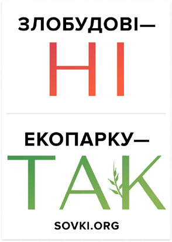
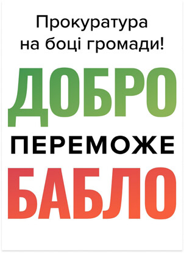
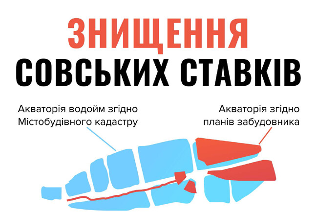
До групи увійшли також і представники «Комітету мікрорайону "Совки"», і представники інших організацій та ініціативних груп. Згодом саме ця закрита група стала базою для створення громадської організації «Екопарк Совські ставки».
Активісти з цієї закритої групи розподілили між собою ролі: хтось взяв на себе інформаційно-агітаційну роботу, хтось проводив толоки на ставках, кілька людей взялися за лобіювання — зустрічалися з депутатами міської ради та чиновниками адміністрації, хтось фотографував події, хтось створював сайт та відео для сайту, інші розробляли концепцію парку дикої природи на місці ставків.
Тим часом юристи готували листи в прокуратуру, суди та міжнародні організації. З медіа від імені мешканців говорив Андрій Яніцький, який згодом став головою громадської організації. Він, зокрема, писав відкритого листа Петру та Марині Порошенкам із проханням вплинути на свого депутата у міській раді і зупинити забудову.
Рішення всередині закритої групи приймалися консенсусом. Якщо хтось не погоджувався із тим чи іншим рішенням, то міг озвучити свої сумніви та критику і запропонувати альтернативу.
Найбільш запеклими були дискусії про майбутнє парку. Чи припустима хоча б часткова забудова території, наприклад, будівництво господарських приміщень для обслуговування парку, кафе для відвідувачів? Чи можливе облаштування зон для рибалок, для вигулу собак, спортивних та дитячих майданчиків?
Зрештою, вийшла компромісна концепція, де урбанізація зосереджена по периметру паркової зони, а всередині максимально збережена дика природа.
Нова концепція парку: земельну ділянку повернули киянам
Місцеві мешканці розробили концепцію парку без забудови на Совських ставках. Презентація концепції відбулася у 2021 році у столичному Будинку Природи. Про це написали видання Хмарочос, Еспресо, БЖ, НВ та багато інших українських медіа.
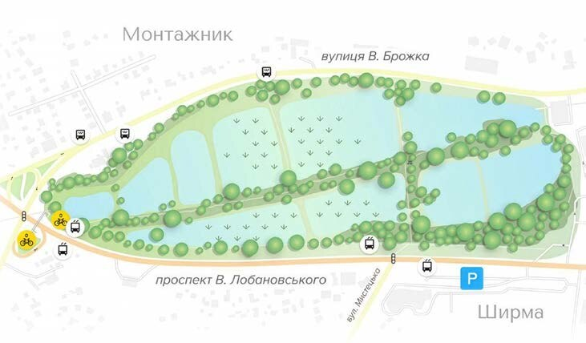
Активісти презентували концепцію під час засідання фракції УДАР у Київраді та особисто міському голові Віталію Кличку, голові фракції «Слуга народу» у Київраді Андрію Вітренку та багатьом іншим депутатам та чиновникам.
Раніше — у 2019 році — прокуратура виграла суд першої інстанції проти ТОВ «Господарник», а у 2021 році Верховний Суд поставив точку у юридичній суперечці та остаточно повернув земельну ділянку киянам.
Столичний модний бренд одягу Syndicate та художник Вова Воротньов навіть випустили з цієї нагоди спеціальну серію худі «Совські ставки».
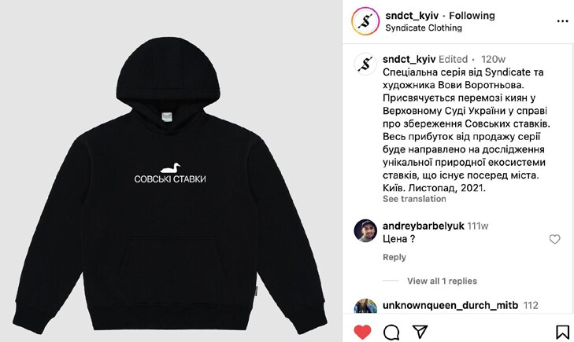
Тоді ж у 2021 році активісти юридично оформили свою спільноту у вигляді ГО «Екопарк Совські ставки», що мало значення для перемовин із органами влади, депутатами та іншими організаціями. На той момент про ризик забудови Совських ставків чув кожен другий киянин, свідчили дані опитування Gradus.
На етапі формування спільноти важливим було однакове бачення майбутнього Совських ставків у вигляді парку без жодної забудови, а також залучення кожного учасника в спільну справу.
Регулярні толоки, збори підписів під петиціями, походи на засідання комісії міської ради та у суди стали інструментами розбудови довіри серед учасників спільноти.
Після повномасштабного вторгнення росіян в Україну у 2022 році багато учасників спільноти та її симпатиків долучилися до Сил безпеки та оборони або виїхали з Києва і тому стали менш активними. Але й нові учасники долучалися до організації. Наприклад, у 2025 році місцева мешканка Олександра Шевчук побачила з вікна, що невідомі люди вирубують дерева на Совських ставках. Вона виклала фотографії невідомих лісорубів у місцеві чати, викликала поліцію, привернула увагу до проблеми та зупинила вирубку. Активісти ГО «Екопарк Совські ставки» побачили це і запросили Олександру приєднатися до них.
День Совських ставків: влада стала на бік активістів
Створення ініціативної групи, регулярні зустрічі активістів, активна інформаційна та лобістська кампанія та розподіл ролей серед учасників спільноти дали свої результати. У Совських ставків з'явилися захисники серед депутатів міської ради. Послідовно рік за роком спільноту підтримує депутатка Голосіївського району від УДАР Олеся Пинзеник. Громаду також підтримували депутати та депутатки Євгенія Кулеба від «Слуг народу» (вже склала депутатські повноваження), Аліна Михайлова (служить у війську) та Костянтин Богатов — обидва від «Голосу», Дмитро Білоцерковець від УДАРу, Ольга Чайка від «Європейської солідарності», Володимир Кравець від «Платформи за життя та мир» та багато інших.
У 2025 році місцеві мешканці відзначали День Совських ставків — організували толоку, пригощення, конкурс дитячого малюнка. Вперше за всі роки боротьби проти забудови на зустріч із активістами приїхав Київський міський голова Віталій Кличко.
Наразі до організації «Екопарк Совські ставки» належать 12 людей, а в закритій групі активних захисників — близько трьох десятків.
У разі загрози на захист зеленої зони стають сотні дві місцевих мешканців, а петиції готові підписувати тисячі киян.
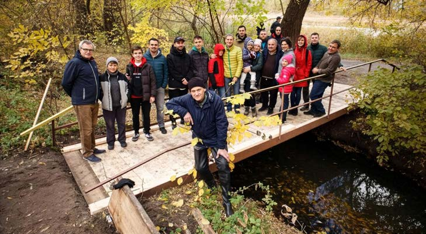
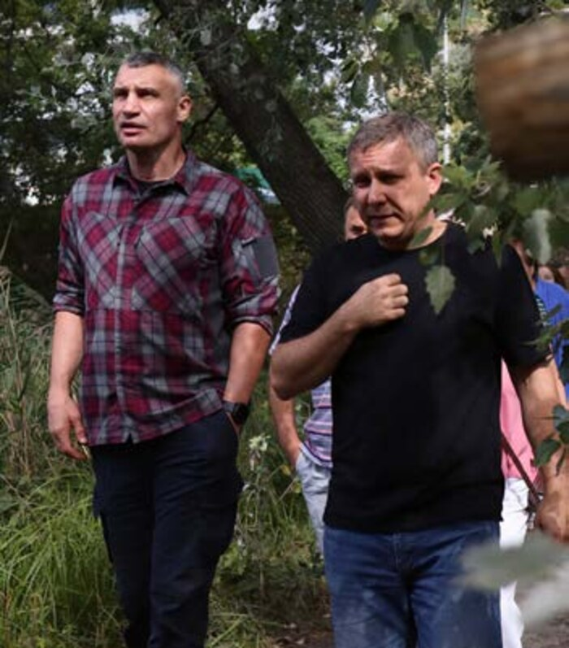
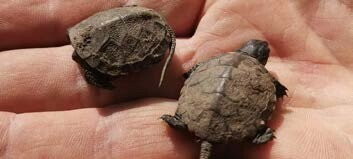
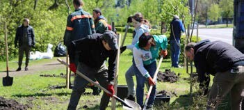
7 порад від захисників Совських ставків
- Об'єднуйте зусилля. Лише одна організація — екологічна чи місцевого самоврядування — не змогла б ефективно протистояти забудовникам.
- Зустріньтеся та домовтеся про майбутнє. Спільне бачення майбутніх результатів вашої роботи допомагає всім рухатися в одному напрямку.
- Не зупиняйтеся, аж поки не побачите результату. Активісти зламали паркан на Совських ставках у 2008 році, але за десять років у 2018 році проблема забудови знову з'явилася. І кожне нове зусилля рухало справу.
- Розподіліть ролі в спільноті однодумців, щоби кожен мав власну ділянку роботи.
- Залучайте на свій бік стейкхолдерів.
- Створіть соцмережі, сайт, інші платформи, які стануть вашим голосом у цифровому світі — навіть якщо медіа спочатку ігноруватимуть вас, ви будете почутими.
- Залучайте до роботи юристів. Юридичний напрямок роботи часто недооцінений, а дарма.
"Sovski Stavky Eco-Park": How a Neighbourhood Defended Its Green Space
Sovski Stavky is more than 20 hectares of ponds and green space in the middle of Kyiv. In the 2000s, the land was leased to a private company that planned to build a shopping mall there. The construction could have destroyed a unique natural area — but it didn't, thanks to years of resistance and self-organisation by local residents. This case shows how a community can defend its space and shape decisions about the city's future.
Residents tear down a fence: the first attempt to resist the developer
The story begins in 2008, when the company Hospodarnyk LLC leased 19 hectares of green space and ponds in Kyiv's Holosiivskyi district — the lower cascade of Sovski Stavky. For context: this huge area in the middle of the capital was once used to farm fish, and Kyivans came here to swim and sunbathe. Though the area fell into some neglect over time, it became a refuge for various animal species, many listed in Ukraine's Red Book — from birds to lizards and even turtles.
The leaseholder planned to build a shopping and entertainment complex on part of the site, with a recreational zone and a pond nearby. It later emerged that behind the leaseholder company stood city council deputy and businessman Ihor Balenko, a member of the land commission and an influential figure listed among Forbes Ukraine's successful landlords.
But when the leaseholder began putting up a fence around the site, it ran into resistance from Kyivans.
The "Save Old Kyiv" movement and local residents tore the fence down one evening. Among the activists was Ihor Lutsenko, later a member of parliament and now a soldier in the Armed Forces of Ukraine.
Officers from what was then the "Berkut" special police unit arrived to defend the leaseholder — but it was too late, the fence was already down.
The leaseholder backed off. The global mortgage crisis hit, funding for the mall dried up, and the leased green zone with its ponds gradually turned into overgrown thickets and swamp without proper upkeep.
The period between 2008 and 2018 can be called the decline of Sovski Stavky. The leaseholder temporarily gave up on developing the green zone, but never gave up the land itself. Activists relaxed, believing the park was no longer under threat. As a result, the community weakened: the old activists drifted away, moved, lost interest in Sovski Stavky — but the underlying problem remained.
The neighbourhood committee: the movement to save the ponds is reborn
The second phase of the fight against development began in 2018, when the leaseholder initiated public hearings and proposed building high-rises instead of a shopping and entertainment centre. Kyiv City Hall's Department of Urban Planning and Architecture even published a detailed development plan for the Sovski Stavky area. Under that plan, the ponds would be replaced with about twenty multi-storey buildings, 12 to 23 storeys tall.
Local residents were outraged. The "Sovky Neighbourhood Committee," a body of local self-organisation, brought people together to discuss the risk of development. The meeting was initiated by Tetiana Stolitnia, Andrii Soroka, Veronika Poliakova, and Viktoriia Syrota. Residents of the Sovky neighbourhood came, along with neighbours from adjacent areas — Shyrma, Kadetskyi Hai, Montazhnyk, the high-rises along Lobanovskyi Avenue and Brozhka Street — as well as representatives of civil-society organisations "Ekozahin," "Za Sebe," "Vodnyi Rukh Kyivshchyny," and many others.
In effect, the "Sovky Neighbourhood Committee" revived the fight that the "Save Old Kyiv" initiative had led ten years earlier. But a self-organisation body that operates within a limited territory and handles the everyday problems of its residents could not, on its own, take responsibility for defending the entire lower cascade of Sovski Stavky. The activists needed broader support.
A closed group on social media: activists unite and define their roles
That is why the most active residents of all the neighbourhoods bordering the ponds decided to set up a closed group on social media to resist the developer. Activists from different neighbourhoods, civil-society organisations, and initiatives joined the group and split up roles: some took on legal work, some handled communication with residents, the media, and authorities, and some organised actions and events.
The group also came to include representatives of the "Sovky Neighbourhood Committee" and of other organisations and initiative groups. This closed group later became the foundation for creating the NGO "Sovski Stavky Eco-Park."
Activists in the closed group split up roles: some took on information and outreach work, some organised clean-up days at the ponds, several people focused on lobbying — meeting with city council deputies and city officials — some photographed events, some built the website and made videos for it, and others worked out a concept for a wildlife park on the site of the ponds.
Meanwhile, lawyers prepared letters to prosecutors, courts, and international organisations. Andrii Ianitskyi, who later became the head of the NGO, spoke to the media on residents' behalf. Among other things, he wrote an open letter to Petro and Maryna Poroshenko, asking them to lean on their city council deputy to stop the development.
Decisions within the closed group were made by consensus. Anyone who disagreed with a given decision could voice their doubts and criticism and propose an alternative.
The fiercest debates were about the park's future. Should even partial development be allowed — say, utility buildings to service the park, or a café for visitors? Could there be designated areas for anglers, for walking dogs, sports grounds, and playgrounds?
In the end, a compromise concept emerged, with development concentrated around the perimeter of the park while the interior kept its wild nature as intact as possible.
A new park concept: the land is returned to Kyivans
Local residents developed a concept for a Sovski Stavky park with no development at all. The concept was presented in 2021 at Kyiv's House of Nature. Outlets including Khmarochos, Espreso, BZ, NV, and many other Ukrainian media covered it.
The activists presented the concept at a session of the UDAR faction in Kyiv City Council, and in person to Kyiv Mayor Vitali Klitschko, the head of the "Servant of the People" faction in Kyiv City Council Andrii Vitrenko, and many other deputies and officials.
Earlier, in 2019, the prosecutor's office had won the first-instance case against Hospodarnyk LLC, and in 2021 the Supreme Court settled the legal dispute for good and returned the land to Kyivans.
The Kyiv fashion brand Syndicate and artist Vova Vorotniov even released a special "Sovski Stavky" hoodie collection to mark the occasion.
That same year, 2021, the activists formally registered their community as the NGO "Sovski Stavky Eco-Park," which mattered for negotiations with authorities, deputies, and other organisations. By that point, according to a Gradus survey, every second Kyivan had heard about the risk of development at Sovski Stavky.
During the community's formative stage, what mattered most was a shared vision of Sovski Stavky's future as a park with no development at all, and getting every participant genuinely invested in the shared cause.
Regular clean-up days, petition-signature drives, and trips to city council committee sessions and courts became the tools for building trust among the community's members.
After Russia's full-scale invasion of Ukraine in 2022, many community members and supporters joined the security and defence forces or left Kyiv, becoming less active. But new members kept joining too. For example, in 2025, local resident Oleksandra Shevchuk saw from her window that unknown people were cutting down trees at Sovski Stavky. She posted photos of the unidentified loggers in local chats, called the police, drew attention to the problem, and stopped the logging. Activists from the "Sovski Stavky Eco-Park" NGO saw this and invited Oleksandra to join them.
Sovski Stavky Day: the city authorities side with the activists
Forming an initiative group, holding regular activist meetings, running an active information and lobbying campaign, and splitting roles among community members paid off. Sovski Stavky gained defenders among city council deputies. Year after year, the community has been consistently supported by Olesia Pynzenyk, a UDAR deputy for the Holosiivskyi district. The community has also been backed by deputies Yevheniia Kuleba of "Servant of the People" (who has since given up her mandate), Alina Mykhailova (now serving in the military) and Kostiantyn Bohatov, both of "Holos," Dmytro Bilotserkovets of UDAR, Olha Chaika of "European Solidarity," Volodymyr Kravets of "Platform for Life and Peace," and many others.
In 2025, local residents celebrated Sovski Stavky Day for the first time — with a communal clean-up, refreshments, and a children's drawing contest. For the first time in all the years of fighting against development, Kyiv Mayor Vitali Klitschko himself came to meet the activists.
Today, the "Sovski Stavky Eco-Park" organisation has 12 formal members, and its closed group of active defenders numbers around three dozen.
Whenever the green zone comes under threat, some two hundred local residents stand up to defend it, and thousands of Kyivans are ready to sign petitions.
7 tips from the defenders of Sovski Stavky
- Join forces. No single organisation — environmental or local self-government — could have stood up to the developers alone.
- Meet and agree on the future. A shared vision of the outcome keeps everyone moving in the same direction.
- Don't stop until you see results. Activists tore down the fence at Sovski Stavky in 2008, but the threat of development returned ten years later, in 2018. Every new push moved the case forward.
- Split roles within the community of like-minded people, so everyone owns their own piece of the work.
- Win stakeholders over to your side.
- Build social media, a website, other platforms that become your voice in the digital world — even if the media ignore you at first, you will still be heard.
- Bring lawyers on board. The legal track is often underrated, and that's a mistake.
Екодія: як громадська організація перетворює спільноту на інструмент змін
«Екодія» — київська екологічна організація, заснована у 2017 році. Займається боротьбою зі зміною клімату, зеленим енергетичним переходом і сталим землекористуванням. Але паралельно з експертною роботою Екодія розвиває спільноту — понад 55 тисяч підписників у соцмережах, сотні волонтерів та волонтерок, партнери та члени організації. Саме ця мережа дозволяє невеликій команді досягати системних змін: від зупинки будівництва атомних блоків до просування кліматичного закону.
2700 годин моніторингу
24 лютого 2022 року співробітники та співробітниці Екодії почали фіксувати випадки потенційної екологічної шкоди від війни. Вже з серпня цю роботу перейняла волонтерська команда — і відтоді що два тижні збирає та аналізує дані з відкритих джерел по кожній області України.
На кінець березня 2026 року команда зафіксувала вже понад 2600 таких випадків. На це пішло близько 2700 годин волонтерської роботи.
Уся координація відбувається онлайн, у чаті. За три з половиною роки до моніторингу долучилися 30 людей з різних міст України та з-за кордону. Дванадцятеро ведуть роботу регулярно і майже не змінюються — деякі в команді з самого початку. Дві волонтерки згодом стали штатними співробітницями Екодії.
Методологію збору даних розробили експертки організації, перевірка та внесення до бази — теж на них. Але найбільш часозатратне завдання — пошук, збір і первинний аналіз інформації — повністю на волонтерках. За процесами всередині команди стежить координаторка.
Цей приклад Екодії ілюструє, що спільнота може взяти на себе цілий напрям роботи організації — не як допоміжний ресурс, а як повноцінний рушій.
П'ять рівнів, одна піраміда
В Екодії не розглядають спільноту як однорідну масу підписників. Натомість описують її як піраміду з п'яти рівнів залучення.
В основі — підписники соцмереж і читачі щотижневої розсилки. Вище — партнерські організації та Друзі й Подруги Екодії, які підтримують організацію щомісячним або щорічним платежем. Ще вище — волонтерська команда. На вершині — співробітники та члени організації, які формують найвищий керівний орган — Загальні збори.
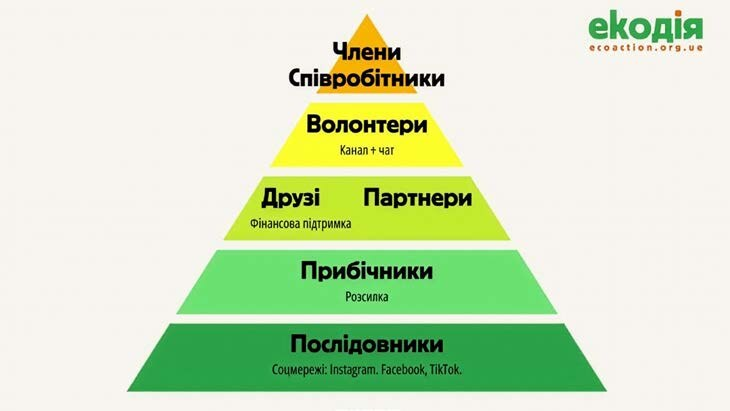
При цьому межі між рівнями навмисно не жорсткі. Чверть штату Екодії колись була волонтерами. Координаторка волонтерської команди Дарина Жданова жартома називає себе рекрутеркою організації — бо саме через волонтерство в Екодію приходить значна частина майбутніх співробітників. Рух у зворотному напрямку теж відбувається: після звільнення частина колишніх співробітників долучається до членської програми або волонтерської команди. Двадцятеро з 34 нинішніх членів — це нинішні або колишні співробітники.
«Потрапити до членської програми можна лише за рекомендацією двох наявних членів — щоб до кола спільноти з найбільшим впливом потрапляли люди, які вже знають організацію та поділяють її цінності», — пояснює менеджерка з розвитку спільноти Ольга Тарасенко.
Залучення як система
Нових учасників та учасниць Екодія шукає по-різному залежно від рівня залучення.
Підписників у соцмережах — через вірусні дописи, колаборації з іншими організаціями, таргетовану рекламу і присутність на культурних заходах у Києві. Читачів розсилки — через запитання в реєстраційній формі перед кожним заходом: «Чи хочете отримувати наші новини?», а також через рекламу у соцмережах та форму на сайті. Волонтерок — через заклики в соцмережах і розсилках та через найефективніший контент — той, що показує результати роботи вже наявної волонтерської команди.
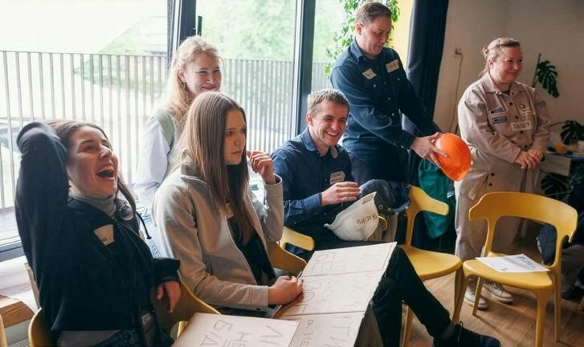
Чимало людей, які заповнили волонтерську анкету, дізналися про Екодію від друзів або знайшли її через пошук за запитом «екологічне волонтерство».
Канали всередині спільноти теж розрізняються: є закритий чат волонтерської команди, окремий чат для друзів та членів Екодії і щотижнева розсилка для ширшого кола. Але в Екодії кажуть, що найміцніший зв'язок тримається не на каналах, а на особистому контакті: написати особисто й запросити до дії завжди ефективніше, ніж просто розіслати повідомлення в чат.
Після повномасштабного вторгнення в організації кілька років відновлювали звичку зустрічатися наживо. Поступово сформувалися дві щорічні точки: день народження Екодії у березні та Міжнародний день волонтерства у грудні. Між ними — майже щомісячні неформальні зустрічі: прогулянки, кіно, паб-квіз в офісі взимку, толоки на офісній клумбі влітку.
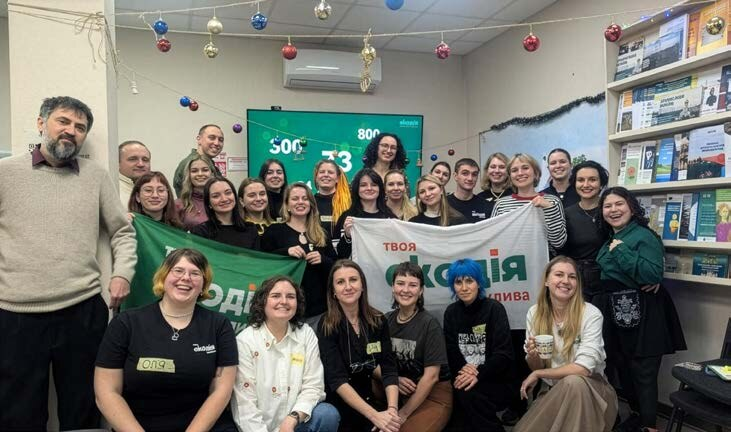
«Одне з відкриттів — перестати розділяти заходи за категоріями учасників. Коли координаторка волонтерів організовує зустрічі, анонс йде одночасно і в чат Друзів та членів і до співробітників. Це зняло зайве організаційне навантаження і зробило зустрічі природнішими», — каже координаторка волонтерської команди Дарина Жданова.
Спільнота як аргумент
В Екодії описують типовий механізм змінотворення так: спочатку експертки досліджують проблему і напрацьовують рішення, потім виявляють бар'єри на шляху до його впровадження. Якщо подолати бар'єри власними силами не вдається — шукають спосіб долучити спільноту. А підтримка спільноти стає аргументом у розмові з посадовцями.
Так сталося з кліматичним законом, який встановив ціль досягти кліматичної нейтральності до 2050 року. Ця ціль була пріоритетом Екодії протягом багатьох років, але зустрічала то опір, то байдужість з боку відповідальних чиновників. Весь цей час спільнота підтримувала тиск: виходила на акції, двічі брала участь у Кліматичному марші — наймасштабнішій екологічній акції країни. Паралельно експертки Екодії долучалися до підготовки самого закону. Зрештою його ухвалили — і ціль 2050 року в ньому є.
Серед інших результатів, яких Екодія досягла разом зі спільнотою та партнерами: недобудова третього і четвертого блоків Хмельницької АЕС, впровадження вільної смуги для громадського транспорту, ухвалення закону про енергоефективність із зобов'язанням виділяти 1% держбюджету на відповідні заходи, зупинка окремих проєктів видобутку копалин на цінних екосистемах.
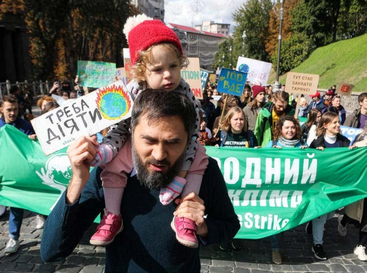
Не просити того, чого не готові зробити самі
За дев'ять років роботи зі спільнотою в Екодії виробили один базовий принцип: не просити людей про те, чого організація не готова зробити сама.
Це рятує від спокуси звалювати на волонтерів нецікаві завдання — якщо справа не «запалює» самих співробітників, вони не зможуть мотивувати до неї нікого іншого. Тому до кожної активності спільноти першими долучаються саме співробітники — щоб перевірити, чи вона доступна й цікава, і щоб стати додатковою мотивацією для решти.
Цей принцип також допомагає планувати реалістично. У будь-якої людини зі спільноти є своє життя й обставини, через які заплановане може не відбутися. Тому в Екодії при плануванні волонтерських активностей завжди закладають запасний варіант: або призначають співробітника, який зможе довести справу до кінця, або продумують шлях до мети без участі волонтерів.
5 порад від Екодії
- Мати чітку відповідь на питання «навіщо нам спільнота?» — і щоб цю відповідь розуміла вся організація.
- Закладати реальні ресурси: відповідальних людей, час і гроші.
- Не чекати швидких результатів — спільнота будується на довірі, а довіра потребує часу.
- Практикувати двосторонню комунікацію: ніхто не знає вашу аудиторію краще за неї саму.
- Пам'ятати про правило 1-9-90: у будь-якій спільноті лише 1% учасників активно діє, 9% — коментує чи доповнює, решта спостерігає мовчки. І це нормально.
Спільнота — не аудиторія, яка чекає на команди. Але й не автономна сила, яка діє сама по собі. В Екодії описують це як синергію: експертна робота команди і підтримка спільноти посилюють одна одну — і тоді невелика організація може рухати речі, які здаються нерухомими.
Ecoaction: How an NGO Turns Its Community into a Tool for Change
Ecoaction is a Kyiv-based environmental organisation founded in 2017. It works on fighting climate change, the green energy transition, and sustainable land use. But alongside its expert work, Ecoaction also builds community — more than 55,000 social-media followers, hundreds of volunteers, partners and members. It's this network that lets a small team achieve systemic change: from halting the construction of new nuclear power units to advancing climate legislation.
2,700 hours of monitoring
On 24 February 2022, Ecoaction staff began recording cases of potential environmental damage from the war. From August that year, a volunteer team took over the work — and has since gathered and analysed open-source data for every region of Ukraine every two weeks.
By the end of March 2026, the team had recorded more than 2,600 such cases. That took roughly 2,700 hours of volunteer work.
All coordination happens online, in a chat. Over three and a half years, 30 people from across Ukraine and abroad have joined the monitoring effort. Twelve of them do the work regularly and rarely change — some have been on the team since the very beginning. Two volunteers later became Ecoaction staff members.
The organisation's experts developed the data-collection methodology, and verification and entry into the database also fall to them. But the most time-consuming task — searching for, gathering, and doing the initial analysis of information — rests entirely with the volunteers. A coordinator oversees the team's internal processes.
This example shows how a community can take on an entire area of an organisation's work — not as a supporting resource, but as a full-fledged driver of it.
Five levels, one pyramid
Ecoaction doesn't treat its community as a uniform mass of followers. Instead, it describes the community as a five-level pyramid of engagement.
At the base are social-media followers and readers of the weekly newsletter. Above them are partner organisations and Ecoaction's Friends, who support the organisation with a monthly or annual payment. Higher still is the volunteer team. At the top are the staff and members, who make up the organisation's highest governing body — the General Assembly.
The boundaries between the levels are deliberately not rigid. A quarter of Ecoaction's staff were once volunteers. Dariia Zhdanova, the volunteer team coordinator, jokingly calls herself the organisation's recruiter — because volunteering is how a significant share of future staff find their way into Ecoaction. Movement happens in the other direction too: after leaving staff roles, some former employees join the membership programme or the volunteer team. Twenty of the 34 current members are current or former staff.
"You can only join the membership programme on the recommendation of two existing members — so that the inner circle with the most influence is made up of people who already know the organisation and share its values," explains community development manager Olha Tarasenko.
Engagement as a system
Ecoaction looks for new participants differently depending on the level of engagement.
It finds social-media followers through viral posts, collaborations with other organisations, targeted advertising, and a presence at cultural events in Kyiv. It finds newsletter readers through a question on the registration form before every event — "Would you like to receive our updates?" — as well as through social-media ads and a sign-up form on the website. It finds volunteers through calls to action on social media and in the newsletter, and through the most effective content of all: content that shows the results already achieved by the existing volunteer team.
Many people who filled out the volunteer form heard about Ecoaction from friends, or found it by searching for "environmental volunteering."
Channels within the community differ too: there's a closed chat for the volunteer team, a separate chat for Ecoaction's friends and members, and a weekly newsletter for the wider circle. But at Ecoaction, they say the strongest bond doesn't come from channels — it comes from personal contact: reaching out to someone directly and inviting them to act is always more effective than just posting a message in a chat.
After the full-scale invasion, it took the organisation a few years to rebuild the habit of meeting in person. Two annual fixtures gradually took shape: Ecoaction's birthday in March, and International Volunteer Day in December. Between them come almost-monthly informal get-togethers — walks, movie nights, a pub quiz at the office in winter, clean-up days on the office flowerbed in summer.
"One thing we discovered was to stop separating events by category of participant. When the volunteer coordinator organises a get-together, the announcement now goes out to the Friends-and-members chat and to staff at the same time. It removed unnecessary organisational overhead and made the gatherings feel more natural," says volunteer team coordinator Daryna Zhdanova.
Community as an argument
At Ecoaction, they describe their typical mechanism for driving change like this: first, the organisation's experts research a problem and work out a solution, then identify the barriers to implementing it. If those barriers can't be overcome by the team alone, they look for a way to bring the community in — and community support becomes an argument in the conversation with officials.
That's what happened with the climate law that set a target of climate neutrality by 2050. That target had been an Ecoaction priority for years, but met with resistance or indifference from the officials responsible for it. The community kept up the pressure throughout: turning out for actions, taking part twice in the Climate March, the country's largest environmental demonstration. In parallel, Ecoaction's experts helped draft the law itself. It was eventually passed — with the 2050 target intact.
Among the other results Ecoaction has achieved together with its community and partners: halting construction of the third and fourth reactor units at the Khmelnytskyi nuclear power plant, introducing dedicated lanes for public transport, passing an energy-efficiency law requiring 1% of the state budget to be spent on related measures, and stopping several mineral-extraction projects on valuable ecosystems.
Don't ask for what you aren't willing to do yourself
Over nine years of working with its community, Ecoaction settled on one core principle: never ask people to do what the organisation itself isn't willing to do.
That principle guards against the temptation to dump unappealing tasks on volunteers — if a task doesn't excite the staff themselves, they won't be able to motivate anyone else to take it on either. That's why staff are always the first to take part in any community activity — to check whether it's accessible and engaging, and to give everyone else extra motivation.
The principle also helps with realistic planning. Everyone in the community has their own life and circumstances that can get in the way of what was planned. So when Ecoaction plans a volunteer activity, it always builds in a fallback: either a staff member is assigned who can see the task through, or the team works out a path to the goal that doesn't depend on volunteers at all.
5 tips from Ecoaction
- Have a clear answer to "why do we need a community?" — one the whole organisation understands.
- Set aside real resources: people responsible for it, time, and money.
- Don't expect quick results — a community is built on trust, and trust takes time.
- Practice two-way communication: nobody knows your audience better than the audience itself.
- Remember the 1-9-90 rule: in any community, only 1% of members actively act, 9% comment or add to what others do, and the rest watch silently. And that's completely normal.
A community is not an audience waiting for instructions. But neither is it an autonomous force that acts entirely on its own. At Ecoaction, they describe it as synergy: the team's expert work and the community's support reinforce each other — and that's how a small organisation can move things that otherwise look immovable.
Триматися своїх: історія зростання спільноти The Ukrainians Media
На фестивалях, у метро чи в крамниці за торбою на плечі, з якої часто визирає журнал Reporters, амбасадори The Ukrainians Media легко впізнають «своїх». Це їхній неофіційний знак самоідентифікації — сигнал, що можна кивнути головою, підійти привітатися та зав'язати розмову. Адже ви частина одного простору, де цінують і підтримують українську незалежну журналістику, ініціативність і зміни.
Команді The Ukrainians Media вдалося одними з перших в Україні створити власну спільноту, що стала основою фінансової стійкості й довіри аудиторії. Перші кілька сотень друзів-амбасадорів перетворились в понад 3500 активних мемберів. За цим кейсом стоїть персоналізована взаємодія та емоційно-раціональні переваги, що гуртують людей навколо медіа.
Стрибок віри: з чого починається спільнота
Історія The Ukrainians Media починається з травня 2014 року — в Україні, що після Революції гідності прокинулася з бажанням жити й будувати майбутнє по-новому: з відчуттям відповідальності. Із бажання змін троє друзів Тарас Прокопишин, Інна Березніцька й Володимир Бєглов запустили студентський волонтерський блог, що підсвічував важливе: українці можуть і вміють досягати успіху. Лонгріди, які публікувалися на щойно створеному сайті The Ukrainians, були присвячені ініціативним українцям.
Пізніше до команди долучилася редакторка Марічка Паплаускайте, теж у статусі співзасновниці.
З роками блог розрісся в незалежну медійну екосистему, що у 2026 році включає онлайн-журнал The Ukrainians, друкований журнал літературного репортажу Reporters, новинне видання НЗЛ, сторітелінгову й подкаст-студію, освітні ініціативи й видавництво The Ukrainians Publishing.
Стартувавши з інвестиції у три студентські стипендії, згодом медіа почало отримувати грантову підтримку та розвивало напрям комерційних проєктів із партнерами. Проте 2020 року, у час пандемії, медійники, на жаль, усвідомили ризики залежності від грантів.
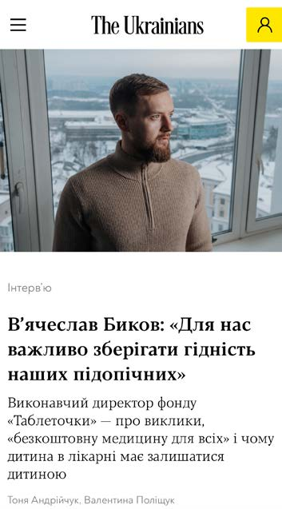
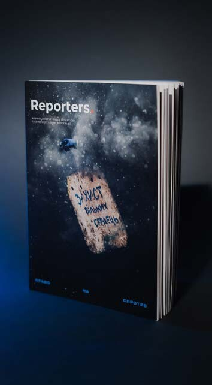
«Ми почали думати про взаємодію з лояльною аудиторією. І це був логічний крок спробувати запустити мембершип. Є ключові три фінансові моделі взаємодії з аудиторією: донати — емоційна підтримка місії, підписка як платіж за продукт і мембершип — щось посередині. Тут і місія, і продукт, і причетність», — пояснює Тарас Прокопишин.
Так у травні 2020 року The Ukrainians Media запустило спільноту. Прокопишин щодо перших мемберів жартує так: «У стартапів є правило трьох F: family, friends and fools — первинне джерело фінансування».
Проте за цим жартом стоїть чітка стратегія. Перед запуском команда створила закритий Google-документ на вісім сторінок із поясненням, що таке спільнота й навіщо підтримувати The Ukrainians Media. І окремий файл на 400–500 імен, яким писали персоналізовані повідомлення: «Ми готуємо важливе оновлення! Якщо цікаво — дай свій імейл, надішлемо доступ». Цей гачок ексклюзивності спрацював і ще до моменту запуску медійники знали — у них буде як мінімум 200 мемберів. Після приєднання амбасадори отримали доступ до закритої Facebook-групи.
«З несподіваного: одна амбасадорка у Facebook опублікувала новину про вступ до спільноти як "життєву подію" й запропонувала іншим робити так само. Подібні пости алгоритми ранжують, як більш важливі, тому наступні кілька днів всю нашу стрічку заповнили публікації про те, що люди стали амбасадорами The Ukrainians», — пригадує CEO.
Шість років тому в українському медіапросторі запуск спільноти був більше новаторством, ніж звичним явищем, — інших прикладів, на які можна спертися, просто не було.
«Це був стрибок віри! Проте коли з'явилися перші помітні фінансові результати — скепсис зменшився. І спільнота стала не просто експериментом, а шляхом до стійкості. Наша спільнота — баланс між емоційним та раціональним. Емоція — бути причетним, а раціо — можливість отримувати якісний продукт», — говорить Тарас Прокопишин.
Розбудова спільноти — довгий шлях, що ніколи не буває ідеальним. Деякі ризики потрібно продумати ще на старті. Наприклад, вибір платіжної системи: те, що спочатку здавалося оптимальним рішенням, із часом довелося змінювати, а це — складно й дорого. Проте Прокопишин наголошує, не варто боятися думати про масштабування, потрібно постійно закладати можливості для зростання.
5 порад на етапі запуску спільноти
- Подумайте про ціннісну пропозицію. Визначте, яку реальну цінність ви створюєте для своєї аудиторії. Ви маєте чітко пояснити людям, чому вони мають вас підтримувати та що саме вони отримають.
- Закладайте поступовий фундамент. Не намагайтеся одразу будувати складні технічні системи чи великі екосистеми. Починайте з базових інфраструктурних рішень під вашу реальну аудиторію, розраховані на невелику кількість користувачів з можливості масштабування в процесі.
- Мудро працюйте з перевагами для членів спільноти. Потрібно тестувати, що працює, а що ні. Оновлювати можливості й вносити зміни, щоб мембер відчував цінність свого внеску.
- Оберіть, хто в команді драйвитиме спільноту. Важливо, щоб це була людина, яка вірить в ідею та готова вести спільноту на початковому етапі. Надалі ця віра пошириться на всіх членів команди, адже так чи інакше кожен буде дотичний до взаємодії зі спільнотою.
- Фокус на людей, а не на трафік. Важливо, щоб рішення та дії команди будували довіру до спільноти, а не просто генерували залучення нових мемберів та підписки. Важливо бачити в спільноті перш за все людей, а не ресурс.
Що отримують мембери
Долучитися до спільноти The Ukrainians Media можна через підписку на сайті, обравши один із рівнів підтримки:
- «Фанатський»
- Емейл-розсилка «TUM зсередини», екоторба «Ambassador», ранній доступ до текстів The Ukrainians. Вартість: 199 грн на місяць або 166 грн, якщо оплатити 1999 грн одразу за рік.
- «Амбасадорський digital»
- Імейл-розсилка «TUM зсередини», екоторба Ambassador, ранній доступ до текстів The Ukrainians, digital-доступ до історій Reporters, доступ до онлайн-зустрічей і офлайн-подій, книжкового та інших клубів і 30% знижки на паперовий Reporters. Вартість: 399 грн на місяць або 333 грн при оплаті 3999 грн за рік.
- «Амбасадорський digital & print»
- Імейл-розсилка «TUM зсередини», екоторба Ambassador, ранній доступ до текстів The Ukrainians, digital-доступ до історій Reporters, доступ до онлайн-зустрічей, офлайн-подій, книжкових та інших клубів, 30% знижки на попередні або додаткові випуски паперового Reporters, 4 друковані номери Reporters на рік та знижки на книжки TUM Publishing. Вартість: 499 грн на місяць або 416 грн при оплаті 4999 грн за рік.
Для новеньких мемберів у The Ukrainians працює механіка welcome — серія онбордингових листів через інструмент мейл-маркетингу. У цих листах йдеться більше про медіа, спільноту, різні активності й ціннісні переваги для учасників та учасниць. Також постійна комунікація відбувається через закритий Telegram-канал.
«Ідея спільноти будується на цінності роботи The Ukrainians Media для лояльних читачів та читачок. Під цінністю йдеться не лише про якість контенту, а й інші активності з нашого боку. Наприклад, події, які ми організовуємо лише для спільноти. Також це можуть бути відкриті події, які ми періодично організовуємо і на яких застосовуємо інструмент "плюс один". Так люди з оточення наших амбасадорів та амбасадорок дізнаються про TUM», — розповідає менеджерка спільноти The Ukrainians Media Світлана Ковтюк.
За словами Світлани, спільнота — це історія про win-win. Це «ще один командний гравець», який стимулює працювати як найкраще, ретельніше, відповідальніше.
Підтвердженням цього можуть бути ситуації, коли на роботу в The Ukrainians Media приходять люди зі спільноти: вони розуміють цінність того, що робить команда, і ціннісно та сенсово підсилюють її функції.
«У межах активаційних кампаній у 2024-му та 2025-му до Дня народження The Ukrainians Media амбасадори та амбасадорки запрошували до спільноти своїх друзів; маємо приклади, де одна людина запросила понад 10 людей у спільноту. Таке мережування дуже цінне і дозволяє від ефемерної ідеї "об'єднати всіх" перейти до конкретної цілі — об'єднати своїх», — додає менеджерка спільноти.
«Базові постулати» успішного розвитку спільноти:
- Експериментувати й досліджувати, але триматися навколо спільних цінностей.
- Досліджувати інтереси й потреби аудиторії, щоб краще розуміти, як говорити з цільовою аудиторією зрозумілою мовою.
- Творити якісний досвід перебування в спільноті.
Тяглість як стратегія: комунікація всередині спільноти
Креативна директорка The Ukrainians Media Ольга Клінова з досвіду стверджує, що саме перший місяць у комунікації з новими амбасадорами є вирішальним. Саме за цей час нова людина має відчути, що її внесок — не просто транзакція, а вхід у живу екосистему. Завдання редакції в цей час — дати цій людині відчуття цінності спільноти.
Усередині редакції фокус «спочатку контент — потім усе інше» з часом змінився на культуру «спочатку спільнота». Редакційні й стратегічні рішення співвідносять з тим, як вони впливають на людей, які підтримують медіа. Амбасадорів залучають до створення контенту в соцмережах, наприклад, за допомогою відео у форматі «Що в торбі».
«Амбасадорські торбинки — впізнаваний елемент нашої спільноти. Коли ти бачиш людину з такою торбою, можеш бути певним, що ви на одній ціннісній системі координат. Але наші амбасадори й амбасадорки, розділяючи спільні цінності, насправді мають багато різних інтересів та сфер зацікавлень. І ми вирішили через цілком побутовий вміст їхніх торб — елементу, що їх поєднує — розповісти про цих людей іншим», — пояснює контент-креаторка в The Ukrainians Media Валерія Андрійченко.
Сприяють розбудові спільноти й загалом посилюють лояльність аудиторії так звані залаштункові матеріали. Для цього редакція запустила окрему сторінку в Instagram — The Ukrainians Media Inside.
«Незалежну журналістику творять люди — ті, хто в редакції, і ті, хто цю редакцію підтримує. Для підтримки потрібна довіра і людські обличчя. Тому такий внутрішній акаунт дозволяє знайомити з командою, показувати деколи виклики й підготовку, яка стоїть за результатом, тобто — посилювати лояльність аудиторії. Головна ціль — показати людей, які за цим стоять і відобразити командні цінності на рівні буденної роботи», — додає Валерія Андрійченко.
Комунікація зі спільнотою має також свої правила:
- Відчуття причетності й залученості. Амбасадори впізнають своїх за торбою з мерчем — маркером для ідентифікації людини зі спільними цінностями. Також різні формати закритих подій, наприклад, Splinota Talks, дозволяють амбасадорам ставати спікерами: фінансисти, ілюстратори, журналісти, культурні менеджери й інші діляться досвідом зі «своїми».
- Ціннісна пропозиція — драйвер змін. Комунікація не замінює сам продукт. Крім торби, амбасадори раз на чотири місяці отримують також журнал Reporters та постійні знижки на товари в The Ukrainians Shop.
- Особистий кабінет — інструмент управління цінністю. Сучасні технології підсилюють приналежність. В особистому кабінеті на сайті мембери можуть почитати ексклюзивні тексти, погортати PDF-версії журналів, слідкувати за календарем подій.
- Головне не кількість каналів, а якість. Не варто запускати одразу багато каналів, якщо ви не можете підтримувати їх якісну роботу. Масштаб без ресурсу — шкодить довірі.
- Гра в довгу. Спільнота — не про швидкий дохід, а про тяглість. Про горизонт у десятки років.
«Мене мотивує відчуття тяглості: розуміння, що я роблю це надовго, додає сенсу. І водночас я не чекаю швидкого результату. Радію, коли спільнота каже: "Я хочу зберегти цей журнал для своїх онуків". І якщо вони не кажуть, ми хочемо це зберегти для дітей, а навіть для онуків. Така дистанція для мене дуже важлива», — каже Ольга Клінова.
Гуртувати людей: активності для спільноти
Для The Ukrainians Media спільнота — не лише спосіб монетизації, це зміна культури організації, готовність чути своїх людей, бути з ними в діалозі й приймати рішення з урахуванням їхнього голосу. Важливу роль у поглибленні зв'язків відіграли офлайн-події та гібридні формати. Наприклад, книжковий клуб став простором не просто обговорення текстів, а й формування горизонтальних зв'язків. Камерні зустрічі на 20 людей у «Сенсі» перетворилися на продуману сезонну програму із поєднанням онлайн- і офлайн-форматів. А в чаті Книжкового клубу в лютому 2026 року вже понад півтори тисячі людей — 1794 учасники.
«Книжковий клуб як спільнота — можливість для людей із різним читацьким досвідом свідомо обговорювати ідеї через найкращі, хоч і не завжди найлегші для сприйняття, книжки», — говорить кураторка Книжкового клубу Валерія Андрійченко.
Наразі Книжковий клуб працює у форматі кураторських сезонів, де куратор чи кураторка складають свою тематичну рамку на чотири місяці — деколи це навіть витримана конкретна послідовність книжок протягом сезону. Важливо, що цей список куратор складає, ознайомившись попередньо із вподобаннями читачів та читачок, зі списком уже прочитаних книг у Клубі за всі ці роки та радячись з командою.
Обговорення Книжкового клубу The Ukrainians — це три абсолютно різні за форматом події:
- розмова куратора із запрошеною спікеркою чи спікером наживо у Києві;
- онлайн, де куратор модерує обговорення амбасадорів та амбасадорок, додаючи потрібного контексту;
- обговорення з модератором у Львові.
«Ми завжди закликаємо не обмежувати обговорення книжки місяця навколо подій і продовжувати розмови у вужчих колах між собою. Ми тішимося, що концепція "триматися своїх" спрацювала, — після наших обговорень у Києві завжди збирається певна кількість людей, які продовжують обговорення між собою за кавою вже у вужчому товаристві. А декому з них вдалося потоваришувати ще й в особистому житті», — говорить Валерія Андрійченко.
Що демонструє: спільнота покликана підтримувати ще й у часи викликів.
Фінансова модель TUM за останні шість років стала багатокомпонентна: гранти, комерційні співпраці, продажі друкованої продукції й спільнота. У цій ланці саме спільнота дала редакції у свій час відчуття опори. Так із часом запрацювала система: більше мемберів — більше можливостей — більше якісного контенту — більше довіри — ще більше мемберів.
Нині команда має конкретну вимірювану ціль — 5800 мемберів. Вона означає фінансову стабільність, що дозволить покрити зарплатні витрати.
Проте найважливіша цінність спільноти — це можливість знайти своїх людей. На літературному фестивалі «Фронтера» в Луцьку в серпні 2025 року до стенда TUM постійно підходили люди: гортали Reporters, розпитували, ділилися враженнями. У цій течії розмов до шеф-редакторки Reporters Марічки Паплаускайте й редакторки Віри Курико підійшла амбасадорка з проханням підписати кілька примірників журналу. З'ясувалося, що вона збирає капсули часу для своїх маленьких доньок, де будуть різні «артефакти часу».
«Амбасадори The Ukrainians — україноцентричні проактивні люди, які ходять на вибори, підтримують якісний контент тощо. Мембери — ніколи не були для The Ukrainians ресурсом, це перш за все люди з нашої бульбашки. Ті, які допомагають контактами, діляться досвідом, приходять із пропозиціями щодо співпраці», — пояснює Тарас Прокопишин.
Стендап-комік і викладач Сашко Лопушанський став амбасадором TUM у квітні 2023 року. Каже, що споживав багато різного контенту від редакції та відчув, що тепер винен їм підписку.
«Для мене спільноту The Ukrainians найкраще характеризує слово "глибина". Мені просто подобається бути частиною цієї спільноти, бо вона мені дуже про якість. Впевнений, що можливість підтримувати незалежні медіа робить кращим кожного та кожну, хто береться їх супроводжувати. І я тут не виключення», — ділиться сам амбасадор.
Журналістка й телеведуча Дарка Гірна про TUM знала ще зі студентських часів — слідкувала за зростанням редакції фактично від початку заснування медіа. Цінує можливість бути частиною спільноти через те, що тут немає випадкових донаторів: це переважно освічені люди з активною громадянською позицією. Тому і їй хотілося асоціюватися з цим, бути частиною цього і допомагати команді.
«Коли я запускала свій ютуб-канал "Обличчя Незалежності" у 2021 році про український дисидентський рух опору 1960–80-х, команда TUM, а саме журнал Reporters за підтримки спільноти, став моїм головним інформаційним партнером, коли більшість колег не виявляли особливого ентузіазму та зацікавленості в темі. Колеги змогли створити окрему онлайн-сторінку проєкту, безкорисно працювали над SMM», — розповідає про вплив спільноти на свій професійний шлях Дарка.
Дарка Гірна має приклад того, як співпраці виходять далеко за межі спільноти та читачів і починають проникати в масову свідомість. Разом з TUM у 2025 році вона запустила спільний проєкт «Невидима Галерея» — перший інтерактивний маршрут пам'яті в Україні, що веде відвідувача місцями поховань українських художників XIX–XX століття.
Спільнота The Ukrainians Media — це більше, ніж фінансова опора чи канал комунікації. Це мережа людей, які цінують якість, активність і відповідальність. Вона показує, що незалежна журналістика живе не лише на сторінках видань, а в людях, які її створюють, обирають та бережуть. Так довіра й взаємопідтримка творить справжню стійкість — ту, що дає змогу не лише переживати виклики, а й продовжувати нести світло.
У січні 2025 року призупинення програм USAID стало фінансовим викликом для багатьох медіа — Прокопишин звернувся до читачів з поясненням можливих наслідків, і за одну добу до спільноти долучилися 70 нових людей.
Sticking With Your Own: The Growth Story of The Ukrainians Media Community
At festivals, on the metro, or in a shop, ambassadors of The Ukrainians Media easily spot "their own" by the tote bag over someone's shoulder, with a copy of the Reporters magazine peeking out. It's their unofficial mark of identity — a signal that you can nod, walk over, say hello, and strike up a conversation, because you're both part of the same space, one that values and supports independent Ukrainian journalism, initiative, and change.
The Ukrainians Media was among the first in Ukraine to build a community of its own that became the foundation of its financial resilience and its audience's trust. The first few hundred ambassador-friends have grown into more than 3,500 active members. Behind this case is personalised engagement and a mix of emotional and rational value that brings people together around a media outlet.
A leap of faith: where a community begins
The story of The Ukrainians Media begins in May 2014 — in a Ukraine that, after the Revolution of Dignity, had woken up wanting to live and build its future differently, with a new sense of responsibility. Driven by a desire for change, three friends — Taras Prokopyshyn, Inna Bereznitska, and Volodymyr Bieholov — launched a student volunteer blog that spotlighted something important: Ukrainians can, and do, achieve success. The long-form pieces published on the newly created Ukrainians website were devoted to proactive Ukrainians.
Editor Marichka Paplauskaite later joined the team, also as a co-founder.
Over the years the blog grew into an independent media ecosystem that, by 2026, includes the online magazine The Ukrainians, the printed literary-reportage journal Reporters, the news outlet NZL, a storytelling and podcast studio, educational initiatives, and the publishing house The Ukrainians Publishing.
Starting from an investment in three student scholarships, the outlet later began receiving grant funding and developed commercial projects with partners. But in 2020, during the pandemic, the team came to a painful realisation: the risks of depending on grants.
"We started thinking about engaging with our loyal audience. And it was a logical step to try launching a membership programme. There are three key financial models for engaging an audience: donations — emotional support for a mission; subscriptions — payment for a product; and membership — something in between. It has mission, product, and belonging all at once," explains Taras Prokopyshyn.
So in May 2020, The Ukrainians Media launched its community. Prokopyshyn jokes about the first members like this: "Startups have the rule of the three F's — family, friends and fools — the earliest source of funding."
But behind the joke was a deliberate strategy. Ahead of the launch, the team drafted an eight-page closed Google document explaining what the community was and why it was worth supporting The Ukrainians Media. And a separate file of 400–500 names, to whom they sent personalised messages: "We're preparing something important! If you're interested, share your email and we'll send you access." That hook of exclusivity worked, and even before launch day, the team already knew they'd have at least 200 members. Once they joined, ambassadors got access to a closed Facebook group.
"One unexpected thing: one ambassador posted on Facebook about joining the community as a 'life event' and suggested others do the same. The algorithm ranks posts like that as more important, so for the next several days our whole feed filled up with posts about people becoming ambassadors of The Ukrainians," recalls the CEO.
Six years ago, launching a community was more of an innovation than a common practice in the Ukrainian media landscape — there simply weren't other examples to draw on.
"It was a leap of faith! But once the first real financial results came in, the scepticism eased. And the community stopped being just an experiment and became a path to sustainability. Our community is a balance between the emotional and the rational. The emotional part is about belonging; the rational part is about getting a quality product," says Taras Prokopyshyn.
Building a community is a long road that's never perfect. Some risks need to be thought through from the very start. Take the choice of payment system: what seemed like the optimal solution at first later had to be changed — and that turned out to be difficult and expensive. Still, Prokopyshyn stresses that you shouldn't be afraid to think about scaling; you need to keep building in room to grow.
5 tips for launching a community
- Think through your value proposition. Determine the real value you create for your audience. You need to clearly explain to people why they should support you and exactly what they'll get in return.
- Build a gradual foundation. Don't try to build complex technical systems or big ecosystems right away. Start with basic infrastructure suited to your actual audience, designed for a small number of users but with room to scale over time.
- Be smart about member perks. Test what works and what doesn't. Update your offerings and make changes so members keep feeling the value of their contribution.
- Choose who on the team will drive the community. It matters that this person believes in the idea and is ready to lead the community in its early stage. That belief will later spread to the whole team, since sooner or later everyone ends up interacting with the community in some way.
- Focus on people, not traffic. It matters that the team's decisions and actions build trust in the community, rather than simply generating new members and subscriptions. See the community as people first, not as a resource.
What members get
You can join The Ukrainians Media community through a subscription on the website, choosing one of three support tiers:
- "Fan"
- The "TUM Inside" email newsletter, an "Ambassador" tote bag, and early access to The Ukrainians' articles. Price: 199 UAH a month, or 166 UAH a month if paid as 1,999 UAH upfront for the year.
- "Digital Ambassador"
- The "TUM Inside" newsletter, an Ambassador tote bag, early access to articles, digital access to Reporters stories, access to online meetups and offline events, the Book Club and other clubs, and a 30% discount on the printed Reporters. Price: 399 UAH a month, or 333 UAH a month if paid as 3,999 UAH for the year.
- "Digital & Print Ambassador"
- The "TUM Inside" newsletter, an Ambassador tote bag, early access to articles, digital access to Reporters stories, access to online meetups, offline events, the Book Club and other clubs, a 30% discount on past or extra print issues of Reporters, 4 print issues of Reporters a year, and discounts on TUM Publishing books. Price: 499 UAH a month, or 416 UAH a month if paid as 4,999 UAH for the year.
New members go through a welcome mechanic at The Ukrainians — a series of onboarding emails sent through an email-marketing tool. These emails focus on the outlet, the community, various activities, and the value on offer to members. Ongoing communication also runs through a closed Telegram channel.
"The idea behind the community rests on the value of The Ukrainians Media's work for loyal readers. And by value, we don't just mean the quality of the content, but other things we do too — events we organise exclusively for the community, for instance, or open events we hold periodically where we use a 'plus one' mechanic. That's how the people around our ambassadors find out about TUM," says The Ukrainians Media community manager Svitlana Kovtiuk.
According to Svitlana, the community is a win-win story. It's "another player on the team," one that pushes everyone to work harder, more carefully, more responsibly.
One sign of that: people from the community sometimes end up joining The Ukrainians Media as staff — they already understand the value of what the team does, and reinforce its functions with real conviction and understanding.
"As part of our activation campaigns in 2024 and 2025, for The Ukrainians Media's birthday, ambassadors invited their friends to join the community — we have examples of one person inviting more than 10 people into the community. That kind of networking is extremely valuable — it lets us move from the vague idea of 'bringing everyone together' to a concrete goal: bringing our own people together," adds the community manager.
The "basic principles" of successfully growing a community:
- Experiment and explore, but stay anchored around shared values.
- Study your audience's interests and needs, to better understand how to speak to them in language they understand.
- Create a quality experience of being part of the community.
Continuity as a strategy: communicating within the community
Olha Klinova, creative director at The Ukrainians Media, says her experience shows that the very first month of communication with a new ambassador is decisive. That's the window in which a new person needs to feel that their contribution isn't just a transaction, but an entry into a living ecosystem. During that time, the newsroom's job is to give that person a sense of the community's value.
Inside the newsroom, the old focus of "content first, everything else after" has, over time, given way to a "community first" culture. Editorial and strategic decisions are now weighed against how they affect the people who support the outlet. Ambassadors are drawn into creating social-media content themselves — for example, through videos in the "What's in the bag" format.
"The ambassador tote bags are a recognisable part of our community. When you see someone carrying one, you can be sure you share the same set of values. But while our ambassadors share common values, they actually have a huge range of different interests and areas of curiosity. So we decided to use the everyday contents of their bags — the one thing that unites them — as a way to introduce these people to everyone else," explains The Ukrainians Media content creator Valeriia Andriichenko.
So-called behind-the-scenes material also helps build the community and strengthens audience loyalty more broadly. For this, the newsroom launched a dedicated Instagram page — The Ukrainians Media Inside.
"Independent journalism is made by people — those in the newsroom, and those who support the newsroom. Support requires trust, and trust requires human faces. That's why this internal account lets us introduce the team, sometimes show the challenges and the groundwork behind a finished piece — in other words, it strengthens audience loyalty. The main goal is to show the people behind it all and reflect the team's values at the level of everyday work," adds Valeriia Andriichenko.
Communicating with the community has its own rules too:
- A sense of belonging and involvement. Ambassadors recognise their own by the merch tote bag — a marker for identifying someone who shares the same values. Formats like closed events, such as Spilnota Talks, let ambassadors become speakers themselves: financiers, illustrators, journalists, cultural managers and others share their experience with "their own."
- The value proposition is the driver of change. Communication doesn't replace the product itself. Besides the tote bag, ambassadors also receive the Reporters magazine once every four months and ongoing discounts at The Ukrainians Shop.
- A personal account is a tool for managing value. Modern technology reinforces belonging. In their account on the website, members can read exclusive articles, browse PDF versions of the magazines, and follow the events calendar.
- What matters is quality, not the number of channels. Don't launch a lot of channels at once if you can't maintain them well. Scale without the resources to back it up damages trust.
- Play the long game. A community isn't about quick revenue — it's about continuity, about a horizon measured in decades.
"What motivates me is a sense of continuity: knowing that I'm doing this for the long haul gives it meaning. At the same time, I don't expect quick results. I love it when someone in the community says, 'I want to keep this issue for my grandchildren.' And if they don't say grandchildren, we still want to keep it for their kids — maybe even their grandkids. That distance matters a lot to me," says Olha Klinova.
Bringing people together: community activities
For The Ukrainians Media, community isn't just a way to monetise — it's a shift in organisational culture: a willingness to listen to your people, stay in dialogue with them, and make decisions that account for their voice. Offline events and hybrid formats have played a big role in deepening those bonds. The Book Club, for instance, became a space not just for discussing books, but for building horizontal connections among members. Intimate gatherings of 20 people at the "Sens" bookstore grew into a carefully planned seasonal programme that blends online and offline formats. By February 2026, the Book Club chat had grown to more than a thousand and a half people — 1,794 members.
"The Book Club as a community is a chance for people with very different reading backgrounds to consciously discuss ideas through the best books — even when they aren't always the easiest to digest," says Book Club curator Valeriia Andriichenko.
The Book Club currently runs in curated seasons, where a curator builds their own thematic framework for four months — sometimes even a deliberate sequence of books across the season. Importantly, the curator puts that list together only after studying readers' preferences, the list of books the Club has already read over the years, and consulting with the team.
Book Club discussions at The Ukrainians take three entirely different formats:
- a live conversation in Kyiv between the curator and an invited guest speaker;
- an online session where the curator moderates a discussion among ambassadors, adding context as needed;
- a moderated discussion in Lviv.
"We always encourage people not to limit their discussion of the month's book to our events, and to keep talking in smaller circles among themselves. We're glad the 'stick with your own' concept worked — after our discussions in Kyiv, a certain number of people always stay behind to keep talking over coffee in a smaller group. Some of them have even become friends outside of it," says Valeriia Andriichenko.
Which goes to show: a community is there to provide support in hard times too.
Over the past six years, TUM's financial model has become multi-component: grants, commercial partnerships, print sales, and the community. Within that mix, it was the community that, at a critical moment, gave the newsroom a sense of solid ground. Over time, a system took shape: more members lead to more possibilities, which lead to more quality content, which builds more trust, which brings in even more members.
Right now the team has a concrete, measurable goal: 5,800 members. Reaching it would mean financial stability, enough to cover payroll costs.
But the community's most important value is the chance to find your own people. At the "Frontera" literary festival in Lutsk in August 2025, people kept coming up to the TUM stand — flipping through Reporters, asking questions, sharing their impressions. Amid those conversations, an ambassador approached Reporters editor-in-chief Marichka Paplauskaite and editor Vira Kuryko, asking them to sign a few copies of the magazine. It turned out she was putting together time capsules for her young daughters, filled with various "artefacts of the era."
"The Ukrainians' ambassadors are Ukraine-centred, proactive people — they vote in elections, they support quality content, and so on. Members have never been a resource for The Ukrainians — first and foremost, they're people from our bubble. People who help with contacts, share their experience, and come to us with proposals for collaboration," explains Taras Prokopyshyn.
Stand-up comedian and lecturer Sashko Lopushanskyi became a TUM ambassador in April 2023. He says he'd been consuming a lot of the newsroom's content and felt he owed them a subscription.
"For me, the word that best describes The Ukrainians community is 'depth.' I simply like being part of this community, because to me it's really about quality. I'm sure that being able to support independent media makes everyone who takes it on a better person — and I'm no exception," the ambassador shares.
Journalist and TV host Darka Hirna knew about TUM back from her student days — she followed the newsroom's growth practically from its founding. She values being part of the community because there are no accidental donors here: mostly it's educated people with an active civic stance. That made her want to be associated with it, to be part of it, and to help the team.
"When I launched my YouTube channel 'The Face of Independence' in 2021, about the Ukrainian dissident resistance movement of the 1960s–80s, the TUM team — specifically the Reporters magazine, backed by the community — became my main media partner, at a time when most colleagues showed little enthusiasm or interest in the subject. They built a dedicated online page for the project and worked on its social media for free," Darka says of the community's impact on her career.
Darka Hirna also shows how these collaborations can reach far beyond the community and readership and start to enter mainstream awareness. Together with TUM, she launched a joint project in 2025 called "The Invisible Gallery" — Ukraine's first interactive memory route, guiding visitors to the burial sites of Ukrainian artists from the 19th and 20th centuries.
The Ukrainians Media's community is more than a financial cushion or a communication channel. It's a network of people who value quality, activity, and responsibility. It shows that independent journalism doesn't only live on the pages of a publication — it lives in the people who create it, choose it, and protect it. That's how trust and mutual support build real resilience: the kind that lets you not just survive challenges, but keep carrying the light forward.
In January 2025, the pause in USAID programmes hit many media outlets financially — Prokopyshyn wrote to readers explaining the possible consequences, and within a single day 70 new people joined the community.
Цукр: як онлайн-журнал із прифронтових Сум побудував спільноту, що тримає місто разом
Суми — обласний центр за 30 кілометрів від кордону з Росією, сьогодні прифронтове місто.
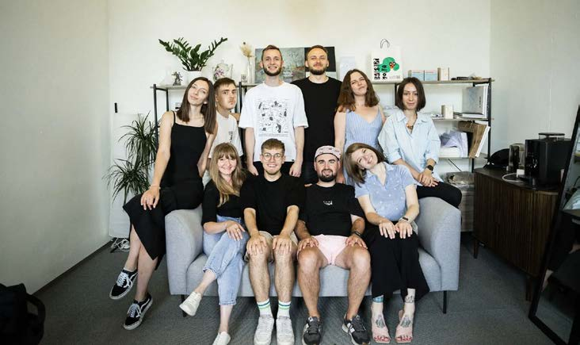
Спільнота до Цукру: нетворкінги на піддонах
Спільнота Цукру почала формуватися навіть раніше, ніж з'явилося медіа. Взимку 2017–2018 років команда «Міста розумних» запозичила столичний формат нетворкінг-зустрічей для проактивної молоді — і першою серед обласних центрів організувала таку в Сумах. Ідея проста: зібрати підприємців, активістів та представників влади для неформального спілкування про зміни в місті. Без презентацій чи заданих тем — лише розмова між «своїми».
Влітку 2018-го обрали для зустрічей занедбане подвір'я на вулиці Кузнечній, поруч із «Розумним хабом». Вигребли шари багнюки, пляшок і недопалків. Змайстрували меблі з піддонів, розвісили гірлянди, увімкнули музику — і покликали людей.
«Ми не намагалися зафіксувати всі контакти, а просто створювали спільноту активних сум'ян», — згадує співзасновник і голова правління організації Дмитро Тіщенко.
Результати не забарилися: на одному з нетворкінгів Тіщенко зустрів місцевого дизайнера Дмитра Дубовика і запропонував зробити виставку у Дворику. Так у закинутому колись просторі завирувало життя. А згодом, на початку повномасштабного вторгнення, саме Дубовик створить постери «Суми вистоять і ти вистоїш».
Чому Цукр став «своїм»?
Поява Цукру дала спільноті голос, який чують далеко за межами Сум. Співтворці проєкту зробили ставку на те, чого в місті бракувало: сучасну подачу інформації, глибину замість поверхневості, людські історії замість кримінальної хроніки.
«Ми не женемося за хайпом, а завжди перевіряємо інформацію. Люди йдуть до нас, коли хочуть зрозуміти, що насправді відбувається. Наш принцип: про що більше говоримо — те й маємо. Тому мінімум 40% нашого контенту — конструктивна та пояснювальна журналістика: не просто "що сталося", а чому і що з цим робити. Мінімум 25% — людські історії, що надихають», — пояснює CEO Цукру Альона Сергієнко.
Команда не лише публікує новини, але й створює інформаційний простір, який показує сум'янам, що місто живе, тут є класні люди і є сенс. У відповідь від читачів журналісти часто отримують один і той самий відгук: «Якби не Цукр, ми б уже виїхали із Сум».
Олексій Туча, колишній головний редактор Цукру, а тепер — активний учасник Клубу Цукру, каже: «Цукр — це медіа зі свіжим поглядом, і саме тому їх приємно підтримувати». А Кирило Балаценко, який зараз живе на півдні України, пояснює: «Завдяки Цукру я чимало дізнаюся про Суми й сум'ян не лише у сумних зведеннях ОВА, а й зі світлої сторони».
Клуб Цукру: не підписка, а причетність
Приблизно через рік після запуску Цукру перед командою постало стратегічне питання: як медіа має фінансуватися далі? На той момент вони вже працювали з грантами, паралельно пробували комерційні формати й рекламу. Але на одному з акселераторів прозвучала чітка дилема.
Або робити ставку на рекламу, або будувати спільноту. Так з'явилася платна підписка — як усвідомлене рішення будувати медіа разом із читачами.
«Ми розуміли, що навколо Цукру існують два різні кола. Перше — широка спільнота: десятки тисяч людей, яким відгукується те, що ми робимо. Вони читають, приходять на події у Дворику, купують у Крамниці, діляться нашими текстами та відео. Друге коло — це ті, хто підтримує нас фінансово на щомісячній основі. Це підписка від 100 гривень на місяць із бонусами: закритий Telegram-чат, ексклюзивні матеріали, спеціальні зустрічі зі спікерами, знижки на товари крамниці, доступ до мікроклубів за інтересами», — пояснює Альона Сергієнко.
Але глибинне дослідження аудиторії за методологією Jobs To Be Done показало дещо неочікуване: люди платять не за бенефіти — вони платять за підтримку «своїх». У різні роки команда Цукру проводила три дослідження, щоб зрозуміти, чому люди мають платити — і відповідь щоразу була не тільки про контент.
Підписниця Настя з Сум казала: «Я плачу копієчку людям за їх класну роботу. Тим паче, що це свої близькі люди, у своєму місті — хочеться їх підтримувати». Аліна Терянник, яка приєдналася до Клубу випадково, через дев'ять місяців сформулювала це так: «Лише уявіть чат сотень небайдужих прихильників міста, де твій голос справді чують — редакція відкрита до діалогу й ідей для матеріалів».
Дослідження показало два ключові сегменти аудиторії:
- Близько 70% підписників — це сум'яни, які хочуть бути причетними до змін у місті, навіть якщо не можуть включатися активно. Для них підписка — спосіб підтримати «своїх» і відчути, що вони роблять внесок у розвиток Сум.
- Близько 30% — ті, хто виїхав з міста, але зберіг із ним сильний емоційний зв'язок. Вони сприймають Клуб як спосіб залишатися в діалозі з містом і підсилювати його голос, навіть на відстані.
Клуб — це спільнота, яка самоорганізується. За 2024 рік Цукр провів вісім закритих подій: від чайної церемонії до екскурсії за лаштунками театру Щепкіна. Ще більше ініціатив народилося всередині: спільні походи в кіно, велозаїзди, сплави на сапах. У Клубі працюють мікроклуби: книжковий, кіноклуб, клуб настільних ігор.
Реальність цієї спільноти підтвердила криза 2025 року. Коли грантове фінансування різко скоротилося, понад 80 учасників добровільно підвищили свої внески — дехто до 5000 гривень на місяць.
Хто відповідає за спільноту і як це працює
Спільнота не існує сама собою — за нею стоїть робота конкретних людей. Зі стратегією працює бренд-директорка (позиціонування Клубу та його зв'язок із продуктами Цукру), а менеджерка спільноти займається щоденними процесами: від техпідтримки платформи та онбордингу нових учасників до організації закритих подій.
Але насправді до роботи так чи інакше долучається вся команда. Журналісти, SMM-менеджери, дизайнери — це теж touchpoints. Їхня взаємодія з аудиторією або наближає людину до команди, або ні. Тому комунікація — це не побічна активність, а частина стратегії.
«Ми хочемо, щоб аудиторія йшла на конкретних людей: читала тексти Ані Шпурік та дивилася відеодайджести Влади Крицької», — наводить приклади головна редакторка медіа Владислава Кудельник.
Цукр працює зі спільнотою з 2019 року й за цей час команда зрозуміла: це потребує і менеджерки спільноти, і часу редакторів соцмереж на просування, і постійних експериментів (провальних також), і інвестицій. У 2025 році Цукр вклав 800 тисяч гривень у технічну розробку платформи Клубу.
Екосистема: як ваші продукти тримають спільноту
Головний висновок попередніх років: люди поки що не готові платити лише за медіа.
Треба виходити за межі, мати намацальні способи контактування. Тому команда будує екосистему навколо ідеї, де кожен продукт — і точка дотику зі спільнотою, і точка входу до неї.
Керівниця Цукру Альона Сергієнко пояснює, як працює накопичення тригерів: людина побачила естетичний журнал у кав'ярні → прийшла на івент у Дворику → дізналася про крутих сум'ян з тексту → друзі запитали, звідки вона знає стільки крутого про місто → побачила сторіз команди про Клуб → і підписалася.
Один з членів Клубу Ярослав Ащадулов, наприклад, прийшов «за порадою», а потім «втягнувся у весь двіж: знайомства, події, розмови й відчуття, що ти серед своїх».
У середньому потрібно від 3 місяців регулярного контакту з проєктом, перш ніж людина стане донором. Конверсія — близько 2% аудиторії.
Дворик на Кузнечній — це місце живих зустрічей спільноти. Його історія почалася з волонтерського прибирання у 2018-му, пройшла через 2022-й, коли тут готували «коктейлі Молотова», і продовжилася асфальтуванням того ж літа — як маніфест, що сум'яни тут надовго. Сьогодні це культурний майданчик із десятками концертів та лекцій. Лише за літо 2025 року відвідувачі Дворика задонатили 410 000 гривень на ЗСУ.
Ц.Крамниця — магазин товарів з сумським вайбом. Речі про Суми, зроблені на замовлення Цукру, або ті, які й так виробляють локальні виробники — це і про причетність, і про лояльність, і про прибуток.
Краудфандингова платформа Ц.Зміни — механізм спільного фінансування конкретних проєктів: від безплатного зарядного стовпчика до видання книги казок 9-річного сум'янина.
Друковане видання — уже п'ять випусків і ще один спеціальний про культуру Сум, де зібрані роботи 80 митців. Підписниця Ніна каже:
«Один примірник залишиться у нас для історії, а один поїде в Лондон до рідних — у нас там вихідці з Сум».
Помилки та уроки
Грантова залежність. На старті гранти складали до 80% бюджету медіаорганізації. Скорочення USAID стало шоком — але й поштовхом. Зараз команда будує модель, за якою «жодна криза одного джерела не зупинить роботу». Цукр створив дорадчу раду при ГО — до неї входять місцеві бізнеси, які підтримують роботу журналістів фінансово, але не впливають на редакційну політику.
Планування для «ідеального світу». У 2025 році Клуб досяг лише 58% від цільових показників — команда не врахувала реалії війни. Урок винесли такий: краще досягти 70% амбітного плану, ніж 150% посереднього.
За перші два тижні повномасштабного вторгнення Telegram-канал Цукру виріс із 2000 до 20000 підписників — спрацювало емоційне звернення «ми залишаємося в місті й продовжуємо роботу».
5 порад для тих, хто будує спільноту навколо медіа
- Починайте зі знайомства. «Ми стартували не з контент-стратегії, а з піддонів у занедбаному дворику і нетворкінгів без конкретної теми. Люди поки не готові платити лише за медіа — треба виходити за межі й мати "намацальні" способи контактів».
- Досліджуйте мотивацію, а не демографію. «Зрозумійте, на яку "роботу" вас наймає читач. Серед трьох наших досліджень найпоказовішим було за методологією JTBD. Проте кожне змінювало наше розуміння того, чому люди нас підтримують. Спойлер: не тільки за контент».
- Людей треба кликати — і давати конкретну дію. «Аудиторія готова допомагати, але рідко ініціює щось сама. Перші члени спільноти — завжди близькі друзі або родичі, і це нормально. Зробіть їх амбасадорами. Ярослава, одна з учасниць Клубу, постійно розповідає про нас друзям — і ми безмежно вдячні, бо саме так спільнота росте органічно».
- Будуйте екосистему точок взаємодії. «Журнал — вхід, Клуб Цукру — глибша залученість, крамниця — фізичний прояв ідентичності, дворик — місце зустрічей. Ваша команда — теж touchpoint. Кожен елемент працює на накопичення тригерів».
- Ведіть чесну комунікацію. «Звітуйте, питайте людей про їхні потреби. Не соромтеся нагадувати про власні. Емоційний зв'язок будується через прозорість та особисті історії — не через пресрелізи».
Tsukr: How an Online Magazine from Front-Line Sumy Built a Community That Holds the City Together
Sumy is a regional capital 30 kilometres from the Russian border — today, a front-line city.
The community before Tsukr: networking on pallets
Tsukr's community began forming even before the outlet itself existed. In the winter of 2017–2018, the team behind "City of Smart People" borrowed the capital's networking-meetup format for proactive young people — and became the first regional capital to run one in Sumy. The idea was simple: bring together entrepreneurs, activists, and local officials for informal conversation about change in the city. No presentations, no set topics — just a conversation among "their own."
In the summer of 2018, they picked a derelict courtyard on Kuznechna Street, next to the "Smart Hub," for their meetups. They cleared out layers of mud, bottles, and cigarette butts. They built furniture out of pallets, strung up string lights, put on music — and invited people over.
"We weren't trying to catalogue every contact — we were simply building a community of active Sumy residents," recalls co-founder and chair of the board Dmytro Tishchenko.
Results weren't long in coming: at one of the networking events, Tishchenko met local designer Dmytro Dubovyk and suggested he put on an exhibition in the courtyard. That's how life returned to a once-abandoned space. Later, at the start of the full-scale invasion, it was Dubovyk who created the "Sumy will hold, and so will you" poster series.
Why Tsukr became "one of us"
Tsukr's arrival gave the community a voice heard far beyond Sumy. Its creators bet on exactly what the city was missing: a modern presentation of information, depth instead of superficiality, human stories instead of crime blotter reporting.
"We don't chase hype — we always verify information. People come to us when they want to understand what's actually happening. Our principle is: what you talk about is what you get more of. So at least 40% of our content is constructive and explanatory journalism — not just 'what happened,' but why, and what to do about it. At least 25% is inspiring human stories," explains Tsukr CEO Alona Serhiienko.
The team doesn't just publish news — it creates an information space that shows Sumy residents that their city is alive, that there are great people here, and that it's worth staying. In response, journalists often hear the same thing from readers: "If it weren't for Tsukr, we'd have already left Sumy."
Oleksii Tucha, Tsukr's former editor-in-chief and now an active Tsukr Club member, says: "Tsukr is media with a fresh perspective, and that's exactly why it's a pleasure to support them." And Kyrylo Balatsenko, who now lives in southern Ukraine, explains: "Thanks to Tsukr, I learn a lot about Sumy and its people — not just from the grim reports of the regional military administration, but from the bright side too."
The Tsukr Club: not a subscription, but belonging
About a year after Tsukr launched, the team faced a strategic question: how should the outlet keep funding itself going forward? By that point they were already working with grants, while experimenting with commercial formats and advertising on the side. But at one accelerator programme, a stark dilemma came into focus.
Either bet on advertising, or build a community. That's how the paid subscription came about — a deliberate decision to build the outlet together with its readers.
"We understood there were two different circles around Tsukr. The first is the broad community: tens of thousands of people who resonate with what we do. They read us, come to events in the courtyard, shop at the store, share our articles and videos. The second circle is the people who support us financially every month — a subscription starting at 100 hryvnias a month, with perks: a closed Telegram chat, exclusive material, special meetings with speakers, discounts on shop merchandise, access to interest-based microclubs," explains Alona Serhiienko.
But in-depth audience research using the Jobs To Be Done methodology revealed something unexpected: people don't pay for the perks — they pay to support "their own." Over the years, the Tsukr team ran three studies to understand why people should pay, and the answer was never only about content.
Subscriber Nastia from Sumy put it this way: "I pay these people a little something for the great work they do. Especially since they're close, like family, in my own city — I want to support them." Alina Terianyk, who joined the Club almost by chance, put it like this nine months later: "Just imagine a chat with hundreds of people who genuinely care about the city, where your voice is actually heard — the newsroom is open to dialogue and ideas for stories."
The research revealed two key audience segments:
- About 70% of subscribers are Sumy residents who want to feel involved in the city's changes, even if they can't get actively involved themselves. For them, the subscription is a way to support "their own" and feel they're contributing to Sumy's development.
- About 30% are people who left the city but kept a strong emotional bond with it. They see the Club as a way to stay in dialogue with the city and amplify its voice, even from a distance.
The Club is a self-organising community. In 2024, Tsukr held eight closed events, from a tea ceremony to a behind-the-scenes tour of the Shchepkin theatre. Even more initiatives sprang up from within: group trips to the movies, cycling rides, stand-up paddleboarding outings. The Club also runs microclubs — a book club, a film club, a board-game club.
This community's reality was put to the test by the 2025 crisis. When grant funding was sharply cut, more than 80 members voluntarily raised their contributions — some up to 5,000 hryvnias a month.
Who's responsible for the community, and how it works
A community doesn't run itself — specific people's work sits behind it. The brand director handles strategy (positioning the Club and its ties to Tsukr's other products), while the community manager handles the day-to-day: everything from platform tech support and onboarding new members to organising closed events.
But in reality, the whole team ends up involved one way or another. Journalists, social-media managers, designers — they're touchpoints too. Their interaction with the audience either draws a person closer to the team, or it doesn't. So communication isn't a side activity — it's part of the strategy.
"We want the audience to follow specific people: to read Ania Shpurik's articles and watch Vlada Krytska's video digests," says editor-in-chief Vladyslava Kudelnyk, giving examples.
Tsukr has been working with its community since 2019, and over that time the team has learned it takes a community manager, time from social-media editors for promotion, constant experimentation (including failed experiments), and investment. In 2025, Tsukr put 800,000 hryvnias into the technical development of the Club platform.
An ecosystem: how your products hold a community together
The main lesson of recent years: people aren't yet ready to pay for media alone.
You need to go beyond it and offer tangible ways for people to make contact. So the team builds an ecosystem around the idea, where every product is both a touchpoint with the community and an entry point into it.
Tsukr's head Alona Serhiienko explains how the accumulation of triggers works: a person sees the aesthetically designed magazine at a café → comes to an event in the courtyard → learns about cool people from Sumy through an article → friends ask how she knows so much cool stuff about the city → she sees the team's stories about the Club → and she subscribes.
One Club member, Yaroslav Ashchadulov, for instance, came in "for advice," and then "got pulled into the whole scene: meeting people, events, conversations, and the feeling of being among your own."
On average, it takes at least 3 months of regular contact with the project before someone becomes a donor. The conversion rate is roughly 2% of the audience.
The courtyard on Kuznechna Street is the community's physical meeting place. Its story began with a volunteer clean-up in 2018, went through 2022, when it was used to prepare Molotov cocktails, and continued that same summer with paving the ground — a kind of manifesto that Sumy residents were here to stay. Today it's a cultural venue with dozens of concerts and lectures. In the summer of 2025 alone, courtyard visitors donated 410,000 hryvnias to the Armed Forces.
Ts.Shop is a store selling goods with Sumy vibes — items about Sumy made to Tsukr's order, or ones already produced by local makers. It's about belonging, loyalty, and revenue all at once.
The crowdfunding platform Ts.Zminy is a mechanism for pooling funds for specific projects — from a free charging station to publishing a book of fairy tales written by a nine-year-old from Sumy.
The print edition is already up to five issues, plus one special issue about Sumy's culture featuring the work of 80 artists. Subscriber Nina says:
"One copy will stay with us for the record, and another will go to London, to relatives — we have people from Sumy there."
Mistakes and lessons
Grant dependency. At the start, grants made up as much as 80% of the media organisation's budget. The USAID cuts were a shock — but also a push forward. The team is now building a model where "no single-source crisis can stop the work." Tsukr set up an advisory council under the NGO, made up of local businesses that support the journalists' work financially but have no influence over editorial policy.
Planning for an "ideal world." In 2025, the Club hit only 58% of its target numbers — the team hadn't accounted for the realities of war. The lesson they took from it: better to hit 70% of an ambitious plan than 150% of a mediocre one.
In the first two weeks of the full-scale invasion, Tsukr's Telegram channel grew from 2,000 to 20,000 subscribers, driven by an emotional message: "we're staying in the city and continuing our work."
5 tips for building a community around a media outlet
- Start with getting to know people. "We didn't start with a content strategy — we started with pallets in a derelict courtyard and networking events with no set topic. People aren't yet ready to pay for media alone — you need to reach beyond it and have 'tangible' ways of making contact."
- Study motivation, not demographics. "Understand what 'job' your reader is hiring you for. Of our three studies, the one using the JTBD methodology was the most revealing. But each one changed our understanding of why people support us. Spoiler: not just for the content."
- People need to be called to action — and given something concrete to do. "Audiences are willing to help, but rarely initiate anything themselves. Your first community members are always close friends or relatives, and that's normal — make them ambassadors. Yaroslava, one of our Club members, keeps telling her friends about us, and we're endlessly grateful, because that's exactly how a community grows organically."
- Build an ecosystem of touchpoints. "The magazine is the entry point, the Tsukr Club is deeper engagement, the shop is a physical expression of identity, the courtyard is where people meet. Your team is a touchpoint too. Every element feeds the accumulation of triggers."
- Communicate honestly. "Report back to people, ask them about their needs. Don't be shy about mentioning your own. Emotional connection is built through transparency and personal stories — not press releases."
«Повернись живим» і спільнота «Дронопаду»
Поки навесні 2014-го росіяни розпалювали війну на сході, у Києві кілька волонтерів методично скуповували бронежилети. Робили це за власні гроші та донати, зібрані через соцмережі. На кожному бронежилеті просто маркерами лишали воїнам настанову: «Повернись живим».
Так згодом і назвали Фонд, що став стратегічним партнером війська, залучив 42 мільярди гривень для Сил оборони та перетворився на унікальний проєкт, в спільноті якого чи не найважливіші люди країни — ті, хто захищає небо від російських дронів.
У вже далекому 2014-му засновники «Повернись живим» швидко зрозуміли, що бронежилети хоч і важливі, та все ж не впливають на хід бойових дій. Так пріоритетом ПЖ став пошук технологічних рішень, що рятують життя.
Завдяки цьому пізніше, у 2024 році, команда, що виросла з кількох людей до понад сотні, запустила «Дронопад» — проєкт зі збиття російських безпілотників відносно дешевими засобами. Але нічого з цього не з'явилося би без людей, які прийшли й сказали: «А тепер робімо щось разом».
Спільнота, об'єднана ідеєю
Так до ПЖ прийшли військові, які спробували збити розвідувальний дрон звичайним FPV, і їм вдалося. Зараз це вже звучить природно, але тоді здавалося випадковістю. Вважалося, що збити дрон-розвідник можна лише ракетою. Відповідно, це було завданням літаків винищувальної авіації, зенітно-ракетних і артилерійських комплексів тощо. Та є нюанс — крім того, що ракети дорогі, їх банально бракує для закриття тих потреб, які має Україна.
Ідея збивати розвідники чимось відносно дешевим і доступним виглядала привабливо, але водночас — нереалістично. Після десятків годин обговорень, вивчення теми й сумнівів команда вирішила ризикнути. І почався Дронопад.
Сьогодні «Дронопад» — це понад 17 тисяч збитих розвідувальних і ударних дронів, півтора мільярда гривень донатів і понад тридцять мільярдів гривень завданих ворогу збитків. Але водночас це й дещо, що не так легко рахувати.
«Дронопад» — це «Матьорий», який спершу споряджав і налаштовував дрони, а потім вирішив стати пілотом. Військовий цілий місяць по п'ять годин на день паралельно з основними обов'язками тренувався на симуляторі, щоб нарешті підняти у повітря справжній борт. «Бувало, що за три дні збивав понад 20 цілей. Навіть якщо я знаю, що ціль далеко, я все одно вилітаю в надії на те, що вона попрямує в мій бік».
«Дронопад» — це діти з театрального гуртка, що хочуть підсилити збір і створюють особливу різдвяну виставу, яку грають по колу, поки не збирають чималу суму. А потім, вже поза сценою, розповідають, чий тато сам займається безпілотниками.
«Дронопад» — це львівський фермер, який бережно вирощує трояндові кущі, а потім віддає їх одному з місцевих магазинів, аби там три дні поспіль квіти дарували за донати.
«Дронопад» — це окрема команда всередині ПЖ, яка має аж сто чатів з підрозділами, що беруть участь в проєкті. Сто чатів, де військові пишуть, яке саме російське залізяччя просто зараз пролітає над ними, за якою спробою його вдається збити, чого бракує, що працює, а що ні. Сотня чатів, від яких залежить, скільки безпілотників не досягнуть своїх цілей.
Це порахувати можна. Скільки життів усе це зберігає — ні.
Індивідуальний підхід
Отже, сьогодні «Дронопад» — це сто підрозділів. Але на старті їх було п'ять. Вони ризикнули спробувати новий підхід і досягли результату. Одночасно донатори, добре знайомі з Фондом, підтримали експериментально нову ініціативу фінансово, дозволяючи команді працювати гнучко і швидко.
Основа всієї «дронопадівської» спільноти — це індивідуальний підхід як до військових, так і до партнерів. Що стосується військових, то з перших днів було ясно: хаотична роздача обладнання не працює.
Команда Фонду почала аналізувати конкретні потреби підрозділів і забезпечувати їх тим, що реально допомагає збивати дрони. Для когось це були автівки, FPV-дрони і оптика, для когось — адаптери, ноутбуки та зарядні станції. Індивідуальний підхід дозволив підрозділам отримувати саме те, що потрібно, і працювати ефективно.
Поступово спільнота розросталася: за сім місяців п'ять підрозділів перетворились на 55. Тоді ж, у березні 2025-го, «Дронопад» досягнув своєї першої цілі — однієї тисячі збитих розвідувальних безпілотників.
Співпраця з партнерами
Ідеєю проєкту було «осліпити» ворога, знищивши саме розвідувальний потенціал. Та поступово почали збивати й ударні дрони, зокрема «шахеди».
Тоді ж у «Дронопаду» з'явився титульний партнер — мережа АЗС ОККО. Вони почали передавати на збиття дронів по одній гривні з кожного проданого літра пального. Тож з'явилося таке собі неписане правило — якщо заправляєшся, то так, щоб одразу й донатити. А впізнавані стаканчики ОККО з дронами, що палають, стали окремим аксесуаром серед водіїв.
Це партнерство цінне своєю стабільністю. Великі фонди, як і менші організації та окремі волонтери, залежні від зовнішніх факторів, тож мають періоди, коли донатів значно менше. Натомість завдяки такій моделі співпраці, як з ОККО, команда ПЖ впевнена, що зможе закривати найбільш гарячі потреби екіпажів, хай там що.
За менш ніж рік ОККО та їхні клієнти задонатили на «Дронопад» близько 350 мільйонів. І за цим стоїть багато роботи — численні переговори та брейншторми, комунікаційні кампанії, спільні активності тощо.
Зокрема ОККО допомагають не тільки зі збором, а й зі зміцненням спільноти. З квітня 2025-го в проєкті з'явилася «Ліга Дронопаду». Щомісяця бригади, які збивають найбільше дронів, отримують подарунки від «ОККО». Перше місце — 250 літрів пального, друге — 150, третє — 100.
Спершу в команді вагалися, як військові відреагують на «Лігу», проте дарма. Екіпажі почали частіше взаємодіяти одне з одним і з ПЖ, більше ділитися результатами.
Велику роль зіграло й те, що перед цим у Фонді військовим показали — їхня робота не просто важлива, а й цікава. Відео збиття, які «Повернись живим» почав публікувати у своїх соцмережах, стали збирати багатотисячні охоплення. До Фонду почали звертатися журналісти з інших країн з проханнями познайомити їх з екіпажами «Дронопаду», аби зняти про них сюжети.
Підрозділи відчули інтерес не лише до їхніх результатів, а й до процесів.
Військові, що до цього були зірками лише у власних колах, нарешті стали зірками й серед тих, кого рятують.
Найбільший збір
Потенціал проєкту зростав. Бачили це зокрема бізнеси, які почали поступово приєднуватись. Проєкт перетворився на справжню мережу, де кожен робить те, що може, а разом це створює ефективну систему захисту повітряного простору.
Влітку 2025-го відбувся найбільший разовий збір на «Дронопад» — впродовж кількох місяців Atlas Festival та ПриватБанк збирали на ініціативу сто мільйонів.
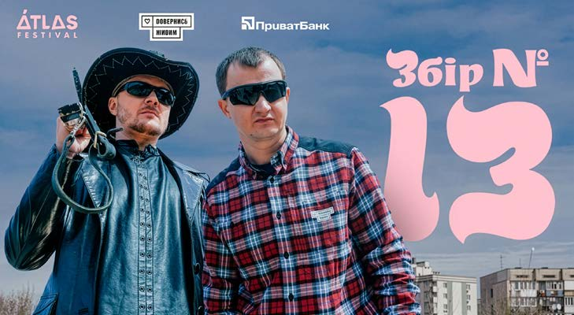
Atlas Festival — це найбільший музичний фестиваль в Україні. Щороку у Києві він збирає десятки тисяч відвідувачів і сотні артистів різних жанрів. У 2025-му Atlas Festival відвідали 110 тисяч людей. Але збір на «Дронопад» почався значно раніше, ніж сам фестиваль.
Для збору записували пісні, дарували квитки на фестиваль за допоміжні банки, розігрували за донат автівку і квартиру в Києві. І це не історія виключно про Atlas Festival і «Повернись живим». Це про десятки бізнесів та окремих людей, які об'єдналися, щоб зробити небо хоч трохи безпечнішим.
В один з днів Atlas Festival «шахед» збили просто неподалік фестивальної зони. Тим, хто тільки йшов до укриття або покидав фестиваль, було видно, як дрон летить, а потім вибухає, збитий в повітрі.
«Дронопад», як і інші ініціативи, спрямовані на допомогу Силам оборони, — це не просто черговий проєкт, це інвестиція у власну безпеку. І дуже цінно, коли люди це розуміють.
Зокрема, на фестивалі була компанія підлітків, яка обіцяла — якщо виграють автівку, то поїдуть на ній досліджувати Україну. А якщо квартиру, то продадуть її і гроші задонатять ПЖ.
Зрештою Atlas Festival разом з іншими партнерами зумів зібрати 121 мільйон гривень. Ці гроші конвертувалися у дрони, машини й іншу техніку, яка вже працює на нашу безпеку.
Помилки
За півтора року існування проєкту сума зібраних коштів сягнула півтора мільярда гривень. Водночас спільнота «Дронопаду» не лише зросла чисельно, а й накопичила безцінний досвід: навчання, тактика FPV, обмін знаннями між підрозділами та донаторами, а також ефективне використання ресурсів. Саме ця спільнота — живий механізм, що дозволяє українським військовим діяти швидко й ефективно.
Проте за результатами не завжди видно зусилля. Щодня над тим, аби влаштовувати ворогам дронопад, окрім військових, працюють ще сотні людей. Це працівники ПЖ, які ініціюють перемовини, готують комунікації, ведуть звітність, контрактують закупівлі та везуть техніку військовим. Масштаби стали такими, що часом здається, наче всі паралельні процеси вже й не можна підрахувати.
Разом з цим над «Дронопадом» працюють ще сотні людей в інших організаціях та самостійно. В момент, коли пишеться цей текст, на «Дронопад» збирають гроші десятки інфлюенсерів та бізнесів. Суми, які вони ставлять собі за ціль, дуже різні, але саме з них і все і складається докупи.
Важливо й те, що «Дронопад», як і будь-яка велика справа, складається як з успіхів, так і з невдач. До прикладу, команда не завжди вірила у проєкт так, як зараз. На старті здавалося, що аби допомогти військовим збити тисячу дронів, потрібне неймовірне везіння. Та річ, звісно ж, не в ньому. Річ в тому, що треба було довго вивчати різні процеси, тестувати різну техніку й робити щось вперше. Але не дарма одна з цінностей «Повернись живим» — це зухвалість.
Також саме завдяки помилкам команда зрозуміла, що слід вкладатись не лише в техніку, а й в уміння працювати з нею. Зараз багато екіпажів «Дронопаду» проходять спеціалізовані навчання у школах, якими опікується «Повернись живим». Зокрема, оператори БпЛА вчаться в школі «Ятаган», а фахівці РЕР та РЕБ — в школі «SPECTRE».
Влітку 2025-го випускник «Ятагану» з позивним «Лис» в перше ж бойове чергування збив одразу сім безпілотників. Техніку, що допомогла у збитті, екіпаж отримав в рамках «Дронопаду».
І все це також про розбудову спільноти, адже немає нічого дієвішого, ніж вміння говорити одне з одним і мати поруч тих, хто може підстрахувати. І проєкт ПЖ це доводить.
Адже «Дронопад» — це не лише техніка, а люди, які повірили в одну ідею.
"Come Back Alive" and the "Dronopad" Community
While Russia was fanning war in the east in the spring of 2014, a handful of volunteers in Kyiv were methodically buying up body armour — with their own money and with donations raised through social media. On every vest, they left a note in plain marker: "Come back alive."
That note later gave its name to the Foundation, which became a strategic partner of the military, raised 42 billion hryvnias for the defence forces, and grew into a unique project whose community includes some of the most important people in the country: those who defend the sky from Russian drones.
Back in 2014, Come Back Alive's founders quickly realised that body armour, important as it was, didn't change the course of the fighting. So the Foundation's priority shifted to finding technological solutions that save lives.
That's what later, in 2024, let a team that had grown from a handful of people to more than a hundred launch "Dronopad" — a project for shooting down Russian drones using relatively cheap means. But none of it would exist without the people who showed up and said: "Now let's do something together."
A community built around an idea
That's how soldiers came to Come Back Alive after trying to shoot down a reconnaissance drone with an ordinary FPV drone — and succeeding. It sounds natural now, but at the time it seemed like a fluke. The assumption had been that you could only shoot down a reconnaissance drone with a missile — a job for fighter jets, surface-to-air missile systems, artillery complexes, and so on. But there's a catch: besides being expensive, missiles are simply in short supply relative to what Ukraine actually needs.
The idea of shooting down reconnaissance drones with something relatively cheap and accessible looked appealing — and, at the same time, unrealistic. After dozens of hours of discussion, research, and doubt, the team decided to take the risk. And Dronopad began.
Today, "Dronopad" means more than 17,000 reconnaissance and strike drones shot down, one and a half billion hryvnias in donations, and more than thirty billion hryvnias in damage inflicted on the enemy. But it's also something that's not so easy to count.
"Dronopad" is "Matiory," who started out equipping and configuring drones and then decided to become a pilot himself. For a full month, alongside his main duties, this soldier trained on a simulator five hours a day before finally taking a real drone into the air. "There were days I shot down more than 20 targets in three days. Even when I know a target is far away, I still fly out hoping it turns my way."
"Dronopad" is the kids from a theatre club who want to boost the fundraiser and put together a special Christmas show, performing it on repeat until they've raised a decent sum — and then, offstage, telling everyone whose dad works on drones.
"Dronopad" is a farmer near Lviv who carefully grows rose bushes and then gives them to a local shop, so that for three days straight, flowers are handed out there in exchange for donations.
"Dronopad" is a dedicated team inside Come Back Alive that runs as many as a hundred chats with the military units taking part in the project — a hundred chats where soldiers report exactly which piece of Russian hardware is flying overhead right now, which attempt finally brought it down, what's missing, what works and what doesn't. A hundred chats that determine how many drones never reach their targets.
That much can be counted. How many lives all of it saves — that can't.
An individual approach
So today, "Dronopad" means a hundred military units. But at the start, there were five. They took a risk trying a new approach and got results. At the same time, donors already familiar with the Foundation backed this experimental new initiative financially, giving the team room to work flexibly and fast.
The foundation of the entire Dronopad community is an individual approach — to both the military and to partners. When it came to the military, one thing was clear from day one: randomly handing out equipment doesn't work.
The Foundation's team started analysing each unit's specific needs and supplying exactly what actually helps shoot down drones. For some units that meant vehicles, FPV drones, and optics; for others, adapters, laptops, and charging stations. This individual approach let units get exactly what they needed and work effectively.
The community gradually grew: in seven months, five units became 55. That's also when, in March 2025, "Dronopad" hit its first target: one thousand reconnaissance drones shot down.
Partnering up
The project's original idea was to "blind" the enemy by destroying its reconnaissance capacity specifically. But over time, the teams also started shooting down strike drones, including Shaheds.
Around then, "Dronopad" gained a title partner: the OKKO fuel-station chain. They began contributing one hryvnia from every litre of fuel sold toward shooting down drones. That gave rise to a kind of unwritten rule: if you're filling up, you might as well donate at the same time. OKKO's recognisable cups, printed with a burning drone, became a distinct accessory among drivers.
This partnership is valuable precisely for its stability. Large foundations, like smaller organisations and individual volunteers, depend on outside factors and go through periods when donations drop off sharply. A partnership model like the one with OKKO gives the Come Back Alive team confidence that it can cover crews' most urgent needs, no matter what.
In under a year, OKKO and its customers donated roughly 350 million hryvnias to Dronopad. And behind that figure is a lot of work — countless negotiations and brainstorms, communication campaigns, joint activities, and more.
OKKO also helps strengthen the community, not just the fundraising. Since April 2025, the project has run a "Dronopad League": every month, the brigades that shoot down the most drones receive gifts from OKKO — 250 litres of fuel for first place, 150 for second, 100 for third.
At first, the team wasn't sure how the military would react to the "League." They needn't have worried. Crews started interacting more with each other and with Come Back Alive, sharing their results more often.
It also helped a great deal that, before this, the Foundation had shown the military that their work wasn't just important — it was interesting. Videos of drones being shot down, which Come Back Alive started posting on its social media, began racking up huge view counts. Journalists from other countries started reaching out to the Foundation, asking to be introduced to Dronopad crews so they could film segments about them.
The units felt genuine interest — not just in their results, but in their process.
Soldiers who had until then been stars only within their own circles finally became stars among the people they were protecting too.
The biggest fundraiser
The project's potential kept growing. Businesses noticed and gradually started joining in. The project turned into a genuine network, where everyone does what they can, and together it adds up to an effective system for defending the airspace.
In the summer of 2025, Dronopad held its single biggest fundraiser: over several months, Atlas Festival and PrivatBank raised one hundred million hryvnias for the initiative.
Atlas Festival is Ukraine's biggest music festival. Every year in Kyiv, it draws tens of thousands of attendees and hundreds of artists across genres. In 2025, Atlas Festival drew 110,000 people. But the Dronopad fundraiser had begun well before the festival itself.
To raise money, artists recorded songs, festival tickets were given away in exchange for aid-collection jars, and a car and an apartment in Kyiv were raffled off for donations. And this isn't a story only about Atlas Festival and Come Back Alive — it's about dozens of businesses and individuals coming together to make the sky just a little bit safer.
On one of the festival days, a Shahed was shot down right near the festival grounds. People who were on their way to a shelter, or leaving the festival, could see the drone flying, then exploding in mid-air after being hit.
"Dronopad," like other initiatives supporting the defence forces, isn't just another project — it's an investment in your own safety. And it means a lot when people understand that.
Among those at the festival was a group of teenagers who promised that if they won the car, they'd use it to go explore Ukraine, and if they won the apartment, they'd sell it and donate the proceeds to Come Back Alive.
In the end, Atlas Festival, together with its partners, raised 121 million hryvnias. That money has been converted into drones, vehicles, and other equipment already at work protecting Ukrainians.
Mistakes
In the year and a half the project has existed, the total raised has reached one and a half billion hryvnias. At the same time, the Dronopad community hasn't just grown in numbers — it has accumulated invaluable experience: training, FPV tactics, knowledge exchange between units and donors, and the effective use of resources. This community is a living mechanism that lets Ukrainian soldiers act quickly and effectively.
But results don't always show the effort behind them. Every day, hundreds of people besides the soldiers themselves work to make Dronopad happen: Come Back Alive staff who initiate negotiations, prepare communications, handle reporting, contract procurement, and deliver equipment to the military. The scale has grown to the point where sometimes it feels like all the parallel processes involved can no longer even be counted.
Alongside that, hundreds more people work on Dronopad through other organisations or on their own. As this text is being written, dozens of influencers and businesses are raising money for Dronopad. The targets they set for themselves vary widely — but it's exactly out of all of those pieces that the whole comes together.
It also matters that "Dronopad," like any large undertaking, is made up of both successes and failures. For example, the team didn't always believe in the project the way it does now. At the start, it seemed like helping the military shoot down a thousand drones would take incredible luck. But of course, luck wasn't really the point. The real point was that it took a long time studying different processes, testing different equipment, and doing things that had never been done before. It's not for nothing that one of Come Back Alive's values is audacity.
It was also thanks to its mistakes that the team realised it needed to invest not just in equipment, but in the skill to use it. Today, many Dronopad crews go through specialised training at schools run under Come Back Alive's care. UAV operators train at the "Yatahan" school, while electronic-reconnaissance and electronic-warfare specialists train at "SPECTRE."
In the summer of 2025, a "Yatahan" graduate with the call sign "Lys" (Fox) shot down seven drones in a row on his very first combat shift. The equipment that made it possible was supplied through Dronopad.
All of this is also, fundamentally, about building community — because nothing works better than the ability to talk to one another and to have people nearby who can back you up. The Come Back Alive project proves exactly that.
Because "Dronopad" isn't only about hardware — it's about people who believed in one idea.
Сміливі відновлювати
«Сміливі відновлювати» — благодійний фонд з відбудови міст і сіл України, які мають власну волонтерську спільноту, що на кінець 2025 року налічувала понад 2000 волонтерів.
У травні 2022 року засновники «Сміливі відновлювати» Альона Крицюк та Віталій Селик приїхали до Бучі та Ірпеня з гуманітарною допомогою. На місці побачили масштаб руйнувань — десятки пошкоджених багатоквартирних будинків та згарищ. Після спілкування з місцевою владою та волонтерами стало зрозуміло, що руками одних лиш будівельників не обійтися. Так з'явилася ідея залучити перших волонтерів до розбору завалів.
До волонтерських толок спочатку залучали друзів та знайомих, більшість з яких були студентами. Місцева влада давала транспорт, ініціатива World Central Kitchen годувала волонтерів. Ті, хто бажав допомогти, могли доєднатися як на один день, так і на декілька. Кожен ранок вони виїжджали з Києва на локації й працювали до пізньої години, повертаючись ночувати додому.
Однак що більше волонтерів, то більше матеріалів потрібно: робочих рукавиць, відер, лопат тощо. Тоді Альона Крицюк звернулась до колег з ІТ-компанії. Ці люди, крім допомоги руками почали ще й донати на витратні матеріали.
«Сміливі» вважають переломним моментом, який дав старт формуванню спільноти, можливість для волонтерів залишатися на вихідні з ночівлею — у Пластунському центрі в Бучі. Вечорами тут відбувались рефлексії, знайомства, розмови при свічках. Саме ці неформальні моменти після виснажливої фізичної праці створили зв'язки. Люди поверталися заради інших людей, а не лише заради роботи. У 2022 році на толоки щовихідних виїжджало 100–200 волонтерів, які працювали на 10–15 об'єктах одночасно.
Ключовими цінностями спільноти «Сміливі» називають:
- Відсутність гендерних упереджень. На толоках дівчата і хлопці виконували однакову роботу. Рішення, до яких задач долучатись, приймали самі волонтери.
- Позитивний тон. Попри трагічний контекст, толоки подавалися як спосіб провести час на свіжому повітрі серед однодумців під музику.
- Чітка і зрозуміла мета. Волонтерство у відбудові дає можливість майже одразу бачити результат своїх старань.
Розвиток та трансформація спільноти
У перший рік повномасштабної війни проблем із залученням волонтерів не виникало — «Сміливі» мали листи очікування і мусили навіть відмовляти в участі на толоках через обмежені організаційні можливості. Основою спільноти стали українці у віці від 18 до 25 років.
Окремим напрямком були корпоративні толоки для бізнесу — компанії виїжджали на толоки, допомагали розбирати завали й робили внески на підтримку спільноти.
Вже через рік кількість українських волонтерів почала різко скорочуватись. Давалися взнаки загальна втома, мобілізація і міграція. Натомість в Україну почали приїжджати іноземні волонтери. Спочатку вони з'являлися поодиноко — хтось дізнавався про організацію через знайомих, хтось знаходив її в списках волонтерських платформ на кшталт Ukraine Volunteering.
Ініціативна група не планувала прицільно залучати іноземців. Але робила ставку на висвітлення в іноземних медіа — возила журналістів на локації, щоб ті показували масштаб руйнувань і роботу волонтерів. Саме це привернуло увагу тих, хто хотів приїхати в Україну і допомогти.
Першими іноземцями, які долучилися до «Сміливих», стали Манфред Гін — власник будівельної компанії з Австралії, та Васіле Буд — румун, який працював у Британії будівельником. Обидва привезли не лише бажання допомагати, а й професійні інструменти, навички демонтажу та розуміння техніки безпеки. До того волонтери переважно розбирали завали вручну — тепер з'явилася можливість виконувати напівпрофесійні роботи.
Водночас організація усвідомила конкурентну перевагу для іноземців: будівельні роботи — один з небагатьох видів волонтерства під час війни, де знання української не критичне, натомість важливі будівельні навички. Десь в цей період «Сміливі» сформували запит на еволюцію — від розчищення завалів до повноцінних ремонтів.
Тож надалі «Сміливі» зробили стратегічну ставку на іноземних волонтерів, а саме: професійний будівельник, який може виїхати на тиждень у віддалену громаду, не підлягає мобілізації та готовий працювати безплатно, закривав одразу кілька критичних потреб.
Важливу роль у цьому переході зіграла Рен — київська викладачка англійської, яка взяла на себе комунікацію з іноземцями. Завдяки їй з'явився окремий чат на близько 500 учасників, де волонтери, які вже побували в Україні, допомагали новачкам з логістикою, житлом і документами.
Фактично іноземці сформували власну підспільноту з механізмами взаємодопомоги — і це зробило залучення іноземних волонтерів стабільним.
Крім волонтерських толок, «Сміливі відновлювати» ведуть професійну відбудову — наймають будівельні бригади для капітальних ремонтів житла, шкіл та громадських об'єктів. Але з посиленням мобілізації знаходити будівельників стало значно складніше: ринок робочої сили скоротився, ціни зросли, частина фахівців пішла на фронт або виїхала.
У цих умовах волонтерська спільнота стала надійною опорою — вона закривала частину робіт, на які раніше залучали підрядників. На локаціях професійні будівельники не лише виконували ремонти, а й навчали волонтерів у процесі. Люди без досвіду поступово освоювали напівпрофесійні операції. Так склалася робоча формула: професіонал координує і відповідає за якість, досвідчені волонтери беруть складніші завдання, новачки допомагають і вчаться. Це дозволяло проводити повноцінні ремонти у віддалених громадах за значно менші кошти, ніж із підрядниками.
Запит з боку іноземних волонтерів збігався з потребами організації. Люди, які брали відпустку або sabbatical і приїжджали в Україну на тиждень-два, хотіли робити щось відчутне — не просто провести час у Києві, а відновити конкретний об'єкт у конкретній громаді.
Окремим напрямком стало екстрене реагування у столиці: після ракетних ударів по житловій інфраструктурі організація оперативно виїжджала на місця — закривати вибиті вікна, фіксувати дахи, розбирати небезпечні конструкції.
Для спільноти це став ще один етап еволюції — від розбирання завалів через планові ремонти до негайної допомоги в момент кризи.
Координація процесів і команда
Основні майданчики комунікації: Telegram-канал та чат, але зараз організація переводить спільноту у WhatsApp і поступово відмовляється від Telegram. Раніше для іноземних волонтерів існував окремий англомовний чат, але його інтегрували в загальний — тепер тексти й оголошення дублюються двома мовами. Це дозволяє не розділяти спільноту на українську та іноземну, а тримати її єдиною.
Крім толок, організація проводить офлайн-події: вечорниці, мовні клуби, лекції з ментального здоров'я, курси тактичної медицини.
Частину цих активностей ініціює сама спільнота — волонтери пропонують формати, які їм цікаві, а організація допомагає з реалізацією.
Такий підхід дає учасникам відчуття впливу на те, що відбувається, і формує зв'язки поза контекстом фізичної праці. Люди повертаються не лише заради роботи на об'єкті, а й заради людей, яких там зустріли.
Управлінням спільноти у «Сміливих» займається окремий волонтерський департамент. У ньому є кілька координаторів з розподіленими ролями: одні відповідають за технічне забезпечення толок — інструменти, транспорт, матеріали; інші координують волонтерів безпосередньо на виїздах; окремий координатор опікується потребами спільноти, підтримує контакт з учасниками між толоками та збирає зворотний зв'язок. Головний критерій відбору координаторів — орієнтація на стосунки з людьми, а не лише організаційні навички. Від цього залежить, чи повернуться волонтери вдруге.
«Сміливі» постійно оптимізують свою роботу. Якщо на початку волонтерів здебільшого залучали стихійно — через знайомих, чати, сарафанне радіо, то зараз організація прагне зробити зручним кожен етап взаємодії: від першого контакту до виїзду на локацію. Команда прописує скрипти комунікації, стандартизує процеси реєстрації та координації.
Великим кроком стало створення єдиної CRM-системи, яка дозволяє вести базу волонтерів, відстежувати їхній досвід, доступність і навички та ефективніше планувати виїзди.
Особливості підходу
Сміливі залучають до волонтерства не лише киян та іноземців. Активну участь у відбудові беруть мешканці постраждалих громад — організація свідомо будує процес так, щоб місцеві долучалися до ремонту власних об'єктів.
Показовий кейс — Руська Лозова на Харківщині. Під час ремонту школи толока зібрала близько 60 місцевих мешканців. Для громади це стало першим спільним зібранням після початку повномасштабного вторгнення. Толока стала не лише будівельною подією, а й моментом реактивації громади, яка кілька років жила в роз'єднанні.
Інший приклад — відновлення школи у селі Лихачів на Чернігівщині. Завдяки співпраці з місцевою громадою замість стандартної реставрації вирішили відновити будівлю у старовинній техніці хати-мазанки. Це рішення з'явилося саме в діалозі з мешканцями, які знали історію будівлі та хотіли зберегти її автентичність. Результат — школа, яку громада сприймає як свою, а не як типовий відремонтований об'єкт.
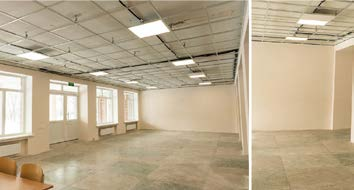
6 порад від команди «Сміливих відновлювати»
- Спільнота не може будуватися виключно на задачах. Толоки — це ядро діяльності, але зв'язки між людьми формуються поза роботою: на вечорницях, у барі після виїзду, під час мовних клубів і спільних ночівель. Без простору для неформальної комунікації спільнота перетворюється на чергу волонтерів, які приходять і йдуть, не знаючи одне одного.
- Успіх спільноти залежить від координаторів. Якщо це людиноцентрична особа, яка щиро цікавиться учасниками, підтримує з ними контакт між активностями і реагує на їхні потреби — люди повертатимуться. Організаційні навички важливі, але без емпатії та уваги до людей вони не утримають спільноту.
- Спільнота потребує постійного оновлення. Модель, яка працювала у 2022 році, вже не працює у 2025-му. В Україні контекст змінюється швидко — мобілізація, скорочення зовнішньої підтримки, втома від війни. Організація, яка не оптимізує процеси й не тестує нові підходи, ризикує втратити і волонтерів, і актуальність.
- Диверсифікація знижує ризики. Залежність від одного джерела волонтерів чи фінансування робить спільноту вразливою. Досвід «Сміливих» показав: коли українських волонтерів стало менше, іноземці закрили критичну потребу — але лише тому, що організація заздалегідь інвестувала в роботу з ними.
- Давайте учасникам впливати на стратегію. Саме волонтери «Сміливих» сформулювали запит на перехід від розчищення до ремонтів. Спільнота, яка має голос, стійкіша за ту, яка лише виконує завдання.
- Стійкі спільноти виникають зі спільного досвіду — фізичної праці, подолання труднощів, відчуття осмисленості. Завдання організації — створити простір для цього досвіду і підтримувати інфраструктуру, яка дозволяє людям повертатися.
Brave to Rebuild
"Brave to Rebuild" is a charitable foundation rebuilding Ukraine's towns and villages, with its own volunteer community that numbered more than 2,000 volunteers by the end of 2025.
In May 2022, "Brave to Rebuild" founders Alona Krytsiuk and Vitalii Selyk arrived in Bucha and Irpin with humanitarian aid. On the ground, they saw the scale of the destruction — dozens of damaged apartment blocks and burnt-out ruins. After talking with local authorities and volunteers, it became clear that construction workers alone wouldn't be enough. That's how the idea came about to bring in the first volunteers to help clear the rubble.
At first, volunteer work parties drew in friends and acquaintances, most of them students. Local authorities provided transport, and the World Central Kitchen initiative fed the volunteers. Anyone who wanted to help could join for a single day or for several. Every morning they'd drive out from Kyiv to a site and work until late, then return home to sleep.
But the more volunteers there were, the more materials were needed: work gloves, buckets, shovels, and so on. So Alona Krytsiuk reached out to colleagues at an IT company. Besides pitching in with their own hands, these people also started donating for supplies.
"Brave" considers the turning point that kicked off the formation of the community to be the option for volunteers to stay overnight over the weekend — at the Plast youth centre in Bucha. Evenings there brought reflection sessions, new acquaintances, conversations by candlelight. It was exactly these informal moments after exhausting physical labour that built real bonds. People started coming back for the sake of other people, not just the work. In 2022, 100–200 volunteers went out to work parties every weekend, working across 10–15 sites at once.
"Brave" names the following as the community's core values:
- No gender bias. At work parties, women and men did the same work. Volunteers themselves decided which tasks to take on.
- A positive tone. Despite the tragic context, work parties were framed as a way to spend time outdoors among like-minded people, with music playing.
- A clear, understandable goal. Volunteering in reconstruction lets you see the results of your effort almost immediately.
The community's growth and transformation
In the first year of the full-scale war, "Brave" had no trouble recruiting volunteers — it had waiting lists, and even had to turn people away from work parties because of limited organisational capacity. The community's core was Ukrainians aged 18 to 25.
A separate track were corporate work parties for businesses — companies would go out to work sites, help clear rubble, and make contributions to support the community.
Within a year, though, the number of Ukrainian volunteers began to drop sharply. General fatigue, mobilisation, and migration all took their toll. In their place, foreign volunteers started arriving in Ukraine. At first, they showed up individually — some heard about the organisation through friends, others found it on volunteer-platform listings like Ukraine Volunteering.
The founding group never set out to specifically recruit foreigners. But it did bet on coverage in foreign media — driving journalists out to sites so they could show the scale of the destruction and the volunteers' work. That's exactly what caught the attention of people who wanted to come to Ukraine and help.
The first foreigners to join "Brave" were Manfred Gin — the owner of a construction company from Australia — and Vasile Bud, a Romanian who had worked as a builder in the UK. Both brought not just a desire to help, but professional tools, demolition skills, and an understanding of safety procedures. Until then, volunteers had mostly cleared rubble by hand; now it became possible to do semi-professional work.
At the same time, the organisation realised it had a competitive advantage for foreigners: construction is one of the few kinds of volunteering during wartime where knowing Ukrainian isn't critical, but construction skills are. Around this period, "Brave" started to feel a demand to evolve — from clearing rubble to full-scale renovations.
So going forward, "Brave" made a strategic bet on foreign volunteers specifically: a professional builder who could take a week off to work in a remote community, wasn't subject to mobilisation, and was willing to work for free, closed several critical needs at once.
An important role in this shift was played by Wren, an English teacher in Kyiv, who took on communication with foreigners. Thanks to her, a dedicated chat with around 500 members emerged, where volunteers who had already been to Ukraine helped newcomers with logistics, housing, and paperwork.
Foreign volunteers effectively formed their own sub-community with its own mechanisms of mutual support — and that's what made recruiting foreign volunteers sustainable.
Besides its volunteer work parties, "Brave to Rebuild" also runs professional reconstruction work — hiring construction crews for major renovations of housing, schools, and public buildings. But as mobilisation intensified, finding builders became far harder: the labour market shrank, prices rose, and some specialists went to the front or left the country.
Under these conditions, the volunteer community became a reliable backbone — covering part of the work that had previously gone to contractors. On site, professional builders didn't just carry out repairs, they trained volunteers along the way. People with no experience gradually picked up semi-professional skills. A working formula emerged: a professional coordinates and is responsible for quality, experienced volunteers take on harder tasks, and newcomers help out and learn. This made it possible to carry out full renovations in remote communities for far less than it would have cost with contractors.
What foreign volunteers wanted lined up with what the organisation needed. People taking a vacation or a sabbatical and coming to Ukraine for a week or two wanted to do something tangible — not just spend time in Kyiv, but rebuild a specific site in a specific community.
A separate track became emergency response in the capital: after missile strikes on residential infrastructure, the organisation would rush to the site — boarding up blown-out windows, tarping roofs, dismantling dangerous structures.
For the community, this became yet another stage of its evolution — from clearing rubble, through planned renovations, to immediate help in the moment of crisis.
Coordinating the process and the team
The main communication hubs are a Telegram channel and chat, though the organisation is now moving its community to WhatsApp and gradually phasing out Telegram. There used to be a separate English-language chat for foreign volunteers, but it has since been merged into the general one — now messages and announcements are duplicated in both languages. This keeps the community from splitting into a Ukrainian side and a foreign side, and keeps it unified instead.
Besides work parties, the organisation runs offline events: evening get-togethers, language clubs, mental-health lectures, and tactical-medicine courses.
Some of these activities are initiated by the community itself — volunteers suggest formats that interest them, and the organisation helps bring them to life.
This approach gives members a sense of influence over what happens, and builds bonds outside the context of physical labour. People come back not just for the work on-site, but for the people they met there.
A dedicated volunteer department at "Brave" manages the community. It has several coordinators with distinct roles: some handle technical support for work parties — tools, transport, materials; others coordinate volunteers directly on site; a separate coordinator looks after the community's needs, stays in touch with members between work parties, and gathers feedback. The main criterion for choosing coordinators is a focus on relationships with people, not just organisational skills — that's what determines whether volunteers come back a second time.
"Brave" is constantly optimising its work. Where volunteers were once recruited mostly organically — through friends, chats, word of mouth — the organisation now aims to make every stage of the interaction smooth, from first contact to arriving on-site. The team is writing communication scripts and standardising registration and coordination processes.
A major step was building a single CRM system that lets the team maintain a volunteer database, track their experience, availability and skills, and plan trips more effectively.
Distinctive features of the approach
Brave doesn't only recruit volunteers from Kyiv and abroad. Residents of affected communities take an active part in the rebuilding too — the organisation deliberately structures its process so that locals get involved in repairing their own facilities.
A telling case is Ruska Lozova in Kharkiv region. During the renovation of a school there, a work party drew in about 60 local residents. For the community, it was the first shared gathering since the start of the full-scale invasion. The work party became not just a construction event, but a moment of reactivation for a community that had lived disconnected for several years.
Another example is the restoration of a school in the village of Lykhachiv, in Chernihiv region. Thanks to collaboration with the local community, instead of a standard restoration, the team decided to rebuild the building using the traditional khata-mazanka (clay-and-wattle) technique. That decision emerged directly out of dialogue with residents who knew the building's history and wanted to preserve its authenticity. The result is a school the community sees as truly its own, not as just another renovated building.
6 tips from the Brave to Rebuild team
- A community can't be built on tasks alone. Work parties are the core activity, but the bonds between people form outside the work itself: at evening get-togethers, at a bar after a trip, at language clubs and shared overnight stays. Without room for informal communication, a community turns into a queue of volunteers who come and go without ever getting to know one another.
- A community's success depends on its coordinators. If a coordinator is a people-first person, genuinely interested in members, staying in touch with them between activities and responding to their needs, people will come back. Organisational skills matter, but without empathy and attention to people, they won't hold a community together.
- A community needs constant renewal. The model that worked in 2022 no longer works in 2025. Ukraine's context changes fast — mobilisation, shrinking outside support, war fatigue. An organisation that doesn't optimise its processes or test new approaches risks losing both its volunteers and its relevance.
- Diversification lowers risk. Depending on a single source of volunteers or funding makes a community fragile. Brave's experience showed: when Ukrainian volunteers became scarcer, foreigners covered the critical gap — but only because the organisation had already invested in working with them beforehand.
- Let members shape the strategy. It was Brave's own volunteers who articulated the demand to shift from clearing rubble to full renovations. A community with a voice is more resilient than one that only executes tasks.
- Resilient communities grow out of shared experience — physical labour, overcoming hardship, a sense of meaning. The organisation's job is to create space for that experience and maintain the infrastructure that lets people keep coming back.
Razom for Ukraine: Як спільнота однодумців створила глобальну мережу підтримки України
У 2014 році, під час Революції Гідності, мільйони людей в Україні об'єдналися довкола ідей свободи, гідності та демократичного майбутнього. У той самий час українці та друзі України за кордоном шукали спосіб бути поруч і підтримати ці зміни. З цієї потреби й виросла Razom for Ukraine.
Razom заснувала група українських та українсько-американських волонтерів у Нью-Йорку: Оля Яричківська, Марія Сорока, Люба Шипович та інші активісти. Вони познайомилися під час протестів на підтримку Майдану та через соціальні мережі, де координували акції солідарності. У січні 2014 року вони створили організацію «Razom» — назва відображає її головну ідею: справжні зміни можливі тоді, коли люди діють разом.
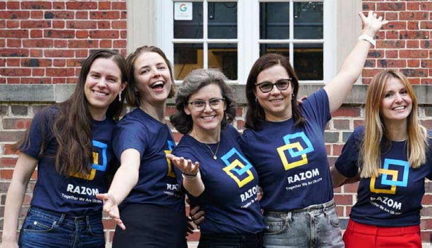
Razom — це передусім люди
Від самого початку Razom була не лише благодійною організацією, а передусім середовищем людей, які відчувають відповідальність за майбутнє України. Тут об'єдналися дуже різні учасники: волонтери, донори, митці, лікарі, дослідники, підприємці — і просто ті, кому небайдужа наша країна.
Багато з них живуть у різних частинах світу, але їх поєднують спільні цінності — свобода, демократія та права людини.
Razom формувалася переважно навколо українсько-американців у Нью-Йорку — людей, які жили на перетині двох контекстів одночасно. Це давало їм особливу здатність: не лише підтримувати Україну, а й пояснювати її світові, роблячи український досвід зрозумілим і релевантним для міжнародної аудиторії. Така здатність «тримати два контексти одночасно» стала однією з ключових рис спільноти Razom.
З роками ця мережа значно зросла. Якщо спочатку Razom трималася на кількох сотнях волонтерів і донорів, то після повномасштабного вторгнення Росії у 2022 році вона розширилася до сотень тисяч людей.
Лише за перший рік війни понад 174 тисячі донорів і тисячі волонтерів підтримали ініціативи організації.
Сьогодні це глобальна спільнота — від активістів і медиків до митців і підприємців.
Як усе починалося — і що було далі
У перші роки Razom існувала як повністю волонтерська ініціатива. Активісти організовували демонстрації, культурні події, інформаційні кампанії та збирали кошти на підтримку України.
Важливою була відкритість: кожен, хто хотів долучитися, міг знайти свою роль — допомагати з подіями, підтримувати проєкти або залучати нових партнерів. З часом команда почала створювати регулярні формати взаємодії, щоб люди не втрачали зв'язок одне з одним.
Наприклад, Razom Book Club став простором для розмов про українську літературу та події в Україні. Цей формат дозволяє людям не лише дізнаватися більше про українську культуру, а й будувати зв'язки, які залишаються надовго.
Ще один приклад — Ukrainian Cultural Festival у Нью-Йорку, який організовують разом із партнерами. Він збирає митців, письменників, кінематографістів і дослідників та створює простір для знайомства з сучасною українською культурою.
Людей приваблювала не лише солідарність, а й цікавість. Культурні та освітні ініціативи відкривали Україну через літературу, мистецтво, особисті історії — і часто саме цікавість ставала першим кроком до глибшої участі.
Окремий напрям — адвокація. Щороку Razom проводить Ukraine Action Summit у Вашингтоні: активісти з різних штатів зустрічаються з американськими законодавцями, щоб говорити про підтримку України.
Перший крок у спільноту
Найчастіше все починається просто: людина читає новини, приходить на подію або дізнається про Razom від друзів. Для багатьох першою точкою входу стають відкриті заходи — лекції, кінопокази, зустрічі. Вони дають можливість познайомитися, поговорити й відчути спільність.
Інший шлях — волонтерство. Небайдужі допомагають організовувати події, працюють з інформаційними кампаніями або долучаються до благодійних ініціатив. Через таку практичну участь багато хто поступово стає активною частиною мережі.
Так само працює і адвокація. Учасники Ukraine Action Summit не лише зустрічаються із законодавцями США, а й знайомляться між собою — і часто продовжують співпрацювати після події.
Механіка спільноти
Razom функціонує як мережа взаємної підтримки. У кожного — свій шлях: хтось приходить через культурні події, хтось через волонтерство або професійні проєкти. Далі багато учасників беруть на себе більше відповідальності — запускають власні ініціативи, залучають нових людей або підтримують партнерів в Україні.
З часом такі зв'язки виходять за межі робочої співпраці. Люди з різних сфер — дослідники, митці, лікарі, підприємці — об'єднуються навколо спільного інтересу до України і залишаються поруч надовго.
Коли мережа почала зростати, з'явилася потреба у чіткішій координації. Організація стала більш структурованою і почала розвивати окремі напрями — у медицині, гуманітарній допомозі, адвокації та підтримці громадянського суспільства.
Водночас ці напрями не відокремилися від спільноти — навпаки, стали способом її розвитку. Кожен із них об'єднує людей довкола конкретної роботи: лікарів, волонтерів, експертів, партнерські організації.
Саме через спільну дію з'являються довіра, довготривалі зв'язки й відчуття відповідальності одне за одного.
Окремий вимір — професійні зв'язки. Наприклад, медична ініціатива Co-Pilot, започаткована у 2016 році, об'єднує лікарів з України та інших країн. Міжнародні фахівці працюють разом з українськими командами під час операцій і тренінгів, передаючи досвід за принципом train-the-trainer.
З часом така співпраця переростає у професійну спільноту: лікарі не лише навчаються, а й підтримують зв'язок, обмінюються практиками та разом розвивають систему охорони здоров'я в Україні.
Важливою є і співпраця з українськими громадськими організаціями. Razom не намагається замінити локальні ініціативи — навпаки, підсилює їх, поєднуючи людей, досвід і ресурси. Наприклад, у 2023 році у Львові відбулася зустріч Razom Sylnishi (Stronger Together), де понад 60 організацій обмінювалися досвідом і налагоджували партнерства.
Виклики зростання
Зростання не обійшлося без викликів. Найбільший із них — різке масштабування після 2022 року. Коли кількість охочих допомогти стрімко зросла, організації довелося швидко перебудовуватися: розширювати команди, вибудовувати нові процеси й водночас не втратити основне — волонтерський дух.
Інший виклик — довготривала залученість. У кризові моменти люди мобілізуються швидко, але зберігати їхню увагу й підтримку роками значно складніше. Саме тому Razom багато працює зі спільнотою — створює простори, де можна не лише реагувати на кризу, а й будувати тривалі зв'язки.
Результати
За ці роки Razom виросла у потужну міжнародну мережу підтримки України. Найбільш відчутно її сила проявилася після початку повномасштабної війни. Тисячі людей у різних країнах долучилися до благодійних кампаній, волонтерських ініціатив та адвокаційної роботи.
У перші місяці війни сотні тисяч донорів підтримали діяльність організації, а волонтери організовували події, збори коштів та інформаційні кампанії у своїх містах.
Це дозволило швидко масштабувати допомогу Україні. Але головний результат — не лише в кількості проєктів, а в людях: у сформованій мережі, яка готова діяти разом і в довгостроковій перспективі.
5 практичних порад для тих, хто хоче будувати спільноти
- Починайте з цінностей, а не зі структури. Спільнота формується навколо спільної мети та ідеї.
- Створюйте простір для участі. Люди залишаються у спільноті, коли можуть не лише підтримувати, а й діяти.
- Розвивайте регулярні формати взаємодії. Книжкові клуби, фестивалі, зустрічі або адвокаційні події допомагають людям відчувати свою причетність.
- Працюйте через партнерства. Співпраця з іншими організаціями допомагає зміцнювати громадянське суспільство.
- Думайте про довгострокову перспективу. Спільнота повинна бути готовою підтримувати зміни протягом років.
Razom for Ukraine: How a Community of Like-Minded People Built a Global Support Network for Ukraine
In 2014, during the Revolution of Dignity, millions of people in Ukraine united around the ideas of freedom, dignity, and a democratic future. At the same time, Ukrainians and friends of Ukraine abroad were looking for a way to stand alongside those changes and support them. Razom for Ukraine grew out of that need.
Razom was founded by a group of Ukrainian and Ukrainian-American volunteers in New York: Olya Yarychkivska, Maria Soroka, Luba Shypovych, and other activists. They met at protests in support of the Maidan and through social media, where they coordinated solidarity actions. In January 2014, they founded the organisation "Razom" — the name reflects its central idea: real change is possible when people act together.
Razom is, first and foremost, people
From the very start, Razom was never just a charitable organisation — first and foremost, it was a community of people who feel a sense of responsibility for Ukraine's future. It brought together a very diverse mix of people: volunteers, donors, artists, doctors, researchers, entrepreneurs, and simply people who care about the country.
Many of them live in different parts of the world, but they're united by shared values — freedom, democracy, and human rights.
Razom formed largely around Ukrainian Americans in New York — people living at the intersection of two contexts at once. That gave them a distinctive ability: not just to support Ukraine, but to explain it to the world, making the Ukrainian experience understandable and relevant to an international audience. That capacity to "hold two contexts at once" became one of the defining traits of the Razom community.
Over the years, this network grew substantially. Where Razom initially relied on a few hundred volunteers and donors, after Russia's full-scale invasion in 2022 it expanded to hundreds of thousands of people.
In the first year of the war alone, more than 174,000 donors and thousands of volunteers supported the organisation's initiatives.
Today it's a global community — from activists and medics to artists and entrepreneurs.
How it all began — and what came next
In its early years, Razom existed as a fully volunteer-run initiative. Activists organised demonstrations, cultural events, and information campaigns, and raised funds to support Ukraine.
Openness mattered from the start: anyone who wanted to get involved could find their own role — helping with events, supporting projects, or bringing in new partners. Over time, the team began creating regular formats for engagement, so people wouldn't lose touch with one another.
The Razom Book Club, for instance, became a space for conversations about Ukrainian literature and events in Ukraine. The format lets people learn more about Ukrainian culture while also building bonds that last.
Another example is the Ukrainian Cultural Festival in New York, organised together with partners. It brings together artists, writers, filmmakers, and researchers, and creates a space to discover contemporary Ukrainian culture.
People were drawn in not just by solidarity, but by curiosity too. Cultural and educational initiatives opened up Ukraine through literature, art, and personal stories — and curiosity was often the first step toward deeper involvement.
Advocacy is a separate strand of work. Every year, Razom runs the Ukraine Action Summit in Washington, D.C.: activists from different states meet with American lawmakers to talk about supporting Ukraine.
The first step into the community
Most often, it starts simply: someone reads the news, comes to an event, or hears about Razom from friends. For many people, the first point of entry is an open event — a lecture, a screening, a meet-up. These give people a chance to meet, talk, and feel a sense of togetherness.
Another path is volunteering. People who care help organise events, work on information campaigns, or join charitable initiatives. Through that kind of practical involvement, many gradually become an active part of the network.
Advocacy works the same way. Participants in the Ukraine Action Summit don't just meet with US lawmakers — they get to know each other too, and often keep collaborating after the event is over.
The mechanics of the community
Razom functions as a network of mutual support. Everyone has their own path: some come through cultural events, others through volunteering or professional projects. From there, many members take on more responsibility — launching their own initiatives, bringing in new people, or supporting partners in Ukraine.
Over time, these bonds grow beyond working relationships. People from different fields — researchers, artists, doctors, entrepreneurs — come together around a shared interest in Ukraine and stay close for a long time.
As the network grew, the need for clearer coordination emerged. The organisation became more structured and began developing distinct areas of work — in medicine, humanitarian aid, advocacy, and support for civil society.
At the same time, these areas never split off from the community — quite the opposite, they became a way for it to grow. Each one brings people together around a concrete piece of work: doctors, volunteers, experts, partner organisations.
It's through this kind of collective action that trust, lasting bonds, and a sense of mutual responsibility take shape.
Professional ties are a separate dimension. The medical initiative Co-Pilot, launched in 2016, for instance, brings together doctors from Ukraine and other countries. International specialists work alongside Ukrainian teams during surgeries and training sessions, passing on knowledge on a train-the-trainer basis.
Over time, this kind of collaboration grows into a professional community: doctors don't just train together, they stay in touch, exchange practices, and work together to develop Ukraine's healthcare system.
Collaboration with Ukrainian civil-society organisations matters too. Razom doesn't try to replace local initiatives — instead, it reinforces them, bringing together people, experience, and resources. In 2023, for example, the Razom Sylnishi (Stronger Together) gathering took place in Lviv, where more than 60 organisations exchanged experience and built partnerships.
The challenges of growth
Growth hasn't come without its challenges. The biggest one was the sudden scaling after 2022. As the number of people wanting to help surged, the organisation had to restructure quickly — expanding its teams, building new processes, and, at the same time, not losing what mattered most: its volunteer spirit.
Another challenge is sustaining engagement over the long term. In moments of crisis, people mobilise quickly, but keeping their attention and support for years is far harder. That's why Razom invests so much in its community — creating spaces that let people not just respond to a crisis, but build lasting bonds.
Results
Over the years, Razom has grown into a powerful international network supporting Ukraine. Its strength became most visible after the start of the full-scale war. Thousands of people in different countries joined charitable campaigns, volunteer initiatives, and advocacy work.
In the first months of the war, hundreds of thousands of donors supported the organisation's work, and volunteers organised events, fundraisers, and information campaigns in their own cities.
That made it possible to scale up support for Ukraine quickly. But the main result isn't just the number of projects — it's the people: the network that formed, one that's ready to act together over the long haul.
5 practical tips for anyone who wants to build communities
- Start with values, not structure. A community forms around a shared purpose and idea.
- Create space for participation. People stay in a community when they can do more than support it — they can act within it.
- Develop regular formats of engagement. Book clubs, festivals, meet-ups or advocacy events help people feel a sense of belonging.
- Work through partnerships. Collaborating with other organisations helps strengthen civil society.
- Think long-term. A community has to be ready to sustain change over years.
Практика
Practice
Дизайн спільноти. З чого розпочати
Спільнота — це група людей, які мають спільну ідентичність (умови для життя, досвід, інтереси, цілі, потреби), систему стосунків та зв'язків між собою й певну структуру взаємодії, навіть якщо вона неочевидна. Робота зі спільнотою починається з усвідомленого підходу: чи справді ми працюємо зі спільнотою — можна перевірити чотирма послідовними питаннями.
- Чи є в нас група людей, яку ми можемо об'єднати в спільноту? Медіаспільнотою може ставати аудиторія читачів; для громадської організації — волонтери, учасники подій, партнери.
- Чи має наша група людей спільну ідентичність (або потенціал до її формування)?
- Чи люди всередині нашої групи мають зв'язки між собою (або потенціал до їх формування)? Це головна демаркаційна лінія між спільнотою і не-спільнотою: справжня спільнота з'являється тоді, коли між людьми виникають горизонтальні взаємодії, які переростають у зв'язки та стосунки.
- Чи є структура всередині вашої спільноти? Безліч спільнот існують без формалізованої чіткої структури — і це не критично.
Чітке визначення зовнішньої мети — «навіщо спільнота потрібна нам як організації» — робить спільноту значно успішнішою. Серед позитивних ефектів: системне залучення та зміни (замість разових ініціатив), збір коштів, розвиток бренду, зворотний зв'язок та інновації, адвокація та вплив, ресурси й партнерства.
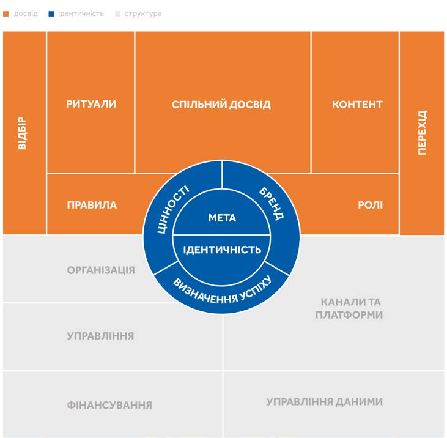
Один з найкращих допоміжних інструментів для детального дизайнування спільноти — The Community Canvas: три послідовні частини (ідентичність, досвід, структура), поділені на 17 підтем, які дають змогу зануритись у різні аспекти функціонування спільноти.
Designing a Community. Where to Start
A community is a group of people who share an identity (living conditions, experience, interests, goals, needs), a system of relationships and connections with one another, and some structure of interaction — even if that structure isn't obvious. Working with a community starts with a deliberate approach: whether you're actually working with a community can be checked with four sequential questions.
- Do we have a group of people we can unite into a community? A media outlet's community can be its readership; for an NGO, it can be volunteers, event participants, partners.
- Does our group of people share a common identity (or the potential to form one)?
- Do the people within our group have connections to one another (or the potential to form them)? This is the main dividing line between a community and a non-community: a genuine community appears once horizontal interactions between people start growing into bonds and relationships.
- Is there structure inside your community? Plenty of communities exist without a formalised, clear structure — and that's not a problem.
A clearly defined external purpose — "why does our organisation need a community" — makes a community far more successful. Among the positive effects: systemic engagement and change (instead of one-off initiatives), fundraising, brand development, feedback and innovation, advocacy and influence, resources and partnerships.
One of the best tools for the detailed design of a community is the Community Canvas: three sequential parts (identity, experience, structure) broken down into 17 sub-topics, letting you dig into every different aspect of how a community functions.
Цільова аудиторія. Дивіться очима людей
Створення організації чи медіа починається з двох ключових питань: для чого і для кого. Мета визначає вашу унікальність, а цільова аудиторія — її кристалізує. Формування портрета аудиторії не варто описувати один раз і назавжди — демографічні характеристики дають лише певне розуміння, важливіше мати два-три чітко прописані портрети «ядра» й суміжних сегментів.
Окрім сегментації за демографією, популярний підхід — сегментація за потребами. Медіакорпорація BBC відома своєю Моделлю користувацьких потреб (User Needs Model, 2016–2017): поінформуйте мене, покажіть мені перспективу, навчіть мене, тримайте мене в курсі трендів, розкажіть мені про щось складне, надихайте мене. Видання The Atlantic 2022 року запропонувало власну версію: глибина й контекст, нові ідеї, виклик моїм припущенням, змістовна пауза, знайомство з високопрофесійними авторами.
«Я помітила, що мої тодішні однолітки — молодь років 20 — не читають новини. Мене це непокоїло — особливо тому, що наближалися президентські вибори», — пояснює Анастасія про створення медіа «Свідомі», яке обрало формат п'яти найважливіших новин на день — чітко, коротко і по суті.
Робота з аудиторією — завжди живий процес: за кілька днів до повномасштабного вторгнення Росії «Свідомі» опублікували матеріал «10 причин, чому все буде добре» — і його підхопили блогери, читачі масово підписувалися на сторінку медіа. Це був органічний ріст без платного просування, який лише посилився в перші дні великої війни: за два місяці вторгнення аудиторія зросла вдвічі, до 100 тисяч підписників в Instagram.
Your Target Audience. See Through People's Eyes
Building an organisation or a media outlet starts with two key questions: what for, and for whom. Your purpose defines your uniqueness; your target audience crystallises it. Don't describe your audience portrait just once and consider it fixed — demographic traits only give you so much; it matters more to have two or three clearly written portraits of your "core" and adjacent segments.
Besides demographic segmentation, a popular approach is segmentation by need. The BBC is known for its User Needs Model (2016–2017): update me, give me perspective, educate me, keep me on trend, divert me, inspire me. The Atlantic proposed its own version in 2022: depth and context, new ideas, challenge my assumptions, a meaningful pause, meeting highly credentialed authors.
"I noticed that people my age at the time — 20-somethings — weren't reading the news. That worried me, especially with a presidential election approaching," explains Anastasiia about creating Svidomi, a media outlet that chose the format of five most important news items a day — clear, short, to the point.
Working with an audience is always a living process: a few days before Russia's full-scale invasion, Svidomi published a piece titled "10 reasons everything will be okay" — bloggers picked it up, and readers subscribed to the page en masse. It was organic growth with no paid promotion, one that only intensified in the first days of the full-scale war: within two months of the invasion, the audience doubled to 100,000 followers on Instagram.
Технології важливі. Як керувати увагою
Змагання за підписників у медіа і за донати в громадських організаціях поступово перетворюються на боротьбу за утримання уваги. Дві головні задачі в цьому змаганні: продовжувати бути цікавими й залишатися в побутовій орбіті людини. Є три групи запитань, на які допомагають відповісти технології: як контент тримає увагу, звідки приходять користувачі, як повернути тих, хто відписався.
- Chartbeat / IO Technologies / Parse.ly
- Аналітика утримання уваги в реальному часі: що дійсно тримає читача, а не просто «скільки переглядів». Chartbeat — дорожчий, для великих редакцій; IO Technologies — доступніший для середніх і малих; Parse.ly сильний в аналізі повторюваних візитів і довгострокової лояльної аудиторії.
- Google Analytics 4 / Mixpanel / Amplitude / Matomo
- Звідки приходять читачі й потенційні підписники: канали трафіку, шлях до конверсії. GA4 — безкоштовний і найпоширеніший; Mixpanel і Amplitude — дорожчі інструменти для глибшого моделювання поведінки; Matomo — альтернатива для тих, хто не хоче залежати від Google.
- Mailchimp / MailerLite / Klaviyo / ActiveCampaign
- Повернення тих, хто пішов: персоналізовані email-розсилки. Mailchimp і MailerLite — прості, для малих і середніх редакцій; Klaviyo й ActiveCampaign — глибша персоналізація й сегментація для просунутих команд.
- Slack / Google Workspace / Notion / Miro
- Інструменти для внутрішньої команди: Slack — оперативна комунікація; Google Workspace — спільні документи й відеозв'язок; Notion — база знань, шаблони й документи (але слабший в оперативних обговореннях); Miro — візуальна дошка для мозкових штурмів і побудови редакційних процесів.
У світі повного штучного контенту і платформи, що постійно змінюються, виживуть ті, до кого приходять не випадково, а спеціально. Тих, кого вручну будуть вбивати в рядку пошуку.
Technology Matters. Managing Attention
The competition for subscribers in media, and for donations at NGOs, is gradually turning into a competition for retained attention. Two core tasks in this contest: keep being interesting, and stay within a person's everyday orbit. There are three groups of questions that technology helps answer: what keeps content sticky, where users come from, and how to win back those who unsubscribed.
- Chartbeat / IO Technologies / Parse.ly
- Real-time attention analytics: what actually holds a reader, not just "how many pageviews". Chartbeat is pricier, built for large newsrooms; IO Technologies is more affordable for mid-size and small teams; Parse.ly excels at analysing repeat visits and long-term loyal audiences.
- Google Analytics 4 / Mixpanel / Amplitude / Matomo
- Where readers and would-be subscribers come from: traffic channels, the path to conversion. GA4 is free and the most widely used; Mixpanel and Amplitude are pricier tools for deeper behaviour modelling; Matomo is an alternative for teams that don't want to depend on Google.
- Mailchimp / MailerLite / Klaviyo / ActiveCampaign
- Winning back people who left: personalised email newsletters. Mailchimp and MailerLite are simple, for small and mid-size newsrooms; Klaviyo and ActiveCampaign offer deeper personalisation and segmentation for advanced teams.
- Slack / Google Workspace / Notion / Miro
- Tools for the internal team: Slack for fast communication; Google Workspace for shared documents and video calls; Notion as a knowledge base, templates and documents (though weaker for live discussion); Miro as a visual board for brainstorming and mapping editorial processes.
In a world full of AI-generated content and constantly shifting platforms, the ones who survive are the ones people seek out on purpose, not by accident — the ones who get hand-picked in the search bar.
Ритуали. Спільнота практики
У цьому розділі книги ритуали й спільні практики розглядаються на прикладі Національної скаутської організації України «Пласт». Пласт виник у Львові в 1912 році, тричі забороненою, «емігрував» на захід і відновлений в Україні 1989 року. Сьогодні Пласт налічує понад 20 000 членів різного віку і 140 осередків.
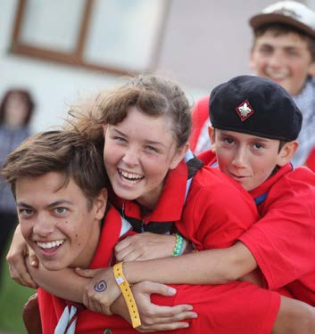
«Через те, що наша організація така велика, ми не завжди відчуваємо, наскільки вона сильна й спроможна — велика спільнота рідко робить щось разом. Переважно кожна невелика група дорослих, яких у Пласті ми називаємо куренями, роблять речі, покликані навчити наших виховнців якійсь певній спеціалізації», — пояснює власне здивування Дарина Доскач.
Символи мають у Пласті надзвичайну роль: гасло привітання «СКОБ!» (Сильно, Красно, Обережно і Бистро), курінні назви, числа, барви, хустки. Важливою частиною пластового життя є церемоніали — складання Пластової присяги, надання ступенів, посвята прапора, вшанування пам'ятних дат. У спільному колі, при вогні, під час урочистих слів присяги виникає особлива атмосфера, яку важко передати словами — саме в такі миті народжується довіра.
Три кроки перекладання досвіду на медіа й ГО
- Чітке формулювання місії та цінностей спільноти — не лише сформулювати, а й комунікувати послідовно.
- Формування ядра спільноти — перші 10–20 активних учасників, які задають тон взаємодії й стають неформальними амбасадорами.
- Створення простору для взаємодії — цифрові інструменти або живі зустрічі; останні дають сильніше відчуття приналежності.
Ключова умова довгострокового існування спільноти — довіра, яка формується через прозорість рішень, повагу до учасників, відкриту комунікацію та персоналізовану взаємодію.
Rituals. A Community of Practice
This chapter looks at how rituals and shared practices build a community, using the example of Plast, Ukraine's national scouting organisation. Plast was founded in Lviv in 1912, was banned three times, "emigrated" to the West, and was revived in Ukraine in 1989. Today Plast has more than 20,000 members of all ages across 140 chapters.
"Because our organisation is so large, we don't always feel how strong and capable it is — a large community rarely does something all together. Mostly it's each small group of adults, what we in Plast call a kurin, doing things meant to teach our members some specific skill," says Daryna Doskach, describing her own surprise at this.
Symbols carry extraordinary weight in Plast: the greeting motto "SKOB!" (Strong, Beautiful, Careful and Swift), kurin names, numbers, colours, neckerchiefs. Ceremonies are a vital part of Plast life — taking the Plast oath, awarding ranks, consecrating the flag, honouring memorial dates. In the shared circle, by the fire, during the solemn words of the oath, a particular atmosphere arises that is hard to put into words — and it is in exactly those moments that trust is born.
Three steps for translating this experience to media and NGOs
- A clear articulation of the community's mission and values — not just stating it once, but communicating it consistently.
- Forming a community core — the first 10–20 active members who set the tone of engagement and become informal ambassadors.
- Creating space for interaction — digital tools or live meetings; the latter give a stronger sense of belonging.
The key condition for a community's long-term survival is trust, which is built through transparent decisions, respect for members, open communication, and personalised engagement.
Вимірювання успіху
«Скажіть, будь ласка, куди мені звідси йти?» — «А куди ти хочеш потрапити?» — відповів Кіт. — «Мені все одно...» — «Тоді все одно, куди йти», — зауважив Кіт. З книги «Аліса в Країні Див» Льюїса Керролла.
Якщо спільнота — не побічний продукт вашої повсякденної діяльності, а її основа, без вимірювання успіху не обійтися. Регулярно опитуйте як членів спільноти, так і ширшу аудиторію прихильників; поєднуйте кількісні опитування з якісними дослідженнями (фокус-групами); слідкуйте за глибиною читання, відкриттями розсилок і зворотним зв'язком у коментарях.
| Метрика | Формула | Опис | Добрий показник |
|---|---|---|---|
| NPS | % Промоутерів (9–10) − % Критиків (0–6) | Лояльність: готовність рекомендувати | > 50 |
| SF (Sticky Factor) | (DAU / MAU) × 100% | Частота взаємодії: щоденні vs місячні активні користувачі | 20–50% |
| CAC | Витрати на залучення / Кількість нових членів | Вартість залучення одного учасника | < 1/3 LTV |
| Retention Rate | (Користувачі на кінець / На старті) × 100% | Утримання на 30/60/90 днів | > 70% на 30 днів |
| Churn Rate | 100% − Retention Rate | Відтік підписників | < 5% щомісяця |
| ARPU | Загальний дохід / Кількість членів | Середній дохід з одного учасника | Зростає щоквартально |
| LTV | ARPU / Churn (спрощено, десятковий churn) | Сумарний дохід з учасника за весь час | > 3 × CAC |
| LTV/CAC Ratio | LTV / CAC | Прибутковість: дохід vs витрати на залучення | ≥ 3:1 |
Показник CAC сам по собі нічого не говорить — його варто порівнювати з LTV: вартість залучення має бути помітно меншою за доходи від одного члена спільноти, інакше спільнота генерує збитки замість прибутку. Бажаним є рівень співвідношення LTV/CAC 1 до 3 і більше.
Не можна покращити те, чого не вимірюєш.
Measuring Success
"Would you tell me, please, which way I ought to go from here?" "That depends a good deal on where you want to get to," said the Cat. "I don't much care where—" said Alice. "Then it doesn't matter which way you go," said the Cat. From Lewis Carroll's Alice in Wonderland.
If a community isn't a byproduct of your everyday work but its very foundation, there's no getting around measuring success. Regularly survey both community members and your broader base of supporters; combine quantitative surveys with qualitative research (focus groups); track reading depth, newsletter opens, and feedback in the comments.
| Metric | Formula | Description | Good benchmark |
|---|---|---|---|
| NPS | % Promoters (9–10) − % Detractors (0–6) | Loyalty: willingness to recommend | > 50 |
| SF (Sticky Factor) | (DAU / MAU) × 100% | Frequency of engagement: daily vs. monthly active users | 20–50% |
| CAC | Acquisition spend / Number of new members | Cost of acquiring one member | < 1/3 of LTV |
| Retention Rate | (Users at end / Users at start) × 100% | Retention over 30/60/90 days | > 70% at 30 days |
| Churn Rate | 100% − Retention Rate | Subscriber churn | < 5% per month |
| ARPU | Total revenue / Number of members | Average revenue per member | Growing quarter over quarter |
| LTV | ARPU / Churn (simplified, decimal churn) | Total revenue from a member over their lifetime | > 3 × CAC |
| LTV/CAC Ratio | LTV / CAC | Profitability: revenue vs. acquisition spend | ≥ 3:1 |
CAC on its own tells you nothing — you need to compare it against LTV: the cost of acquiring a member should be noticeably lower than the revenue that member generates, or your community is running at a loss rather than a profit. An LTV/CAC ratio of 3:1 or better is the goal.
You can't improve what you don't measure.
Творіть спільноти. Гуртуймося.
Build communities. Let's come together.